| 新TOEICテスト 速解！トレーニング 読解(音声DL付) | |
| 近藤千代 | |
| (2013) | |
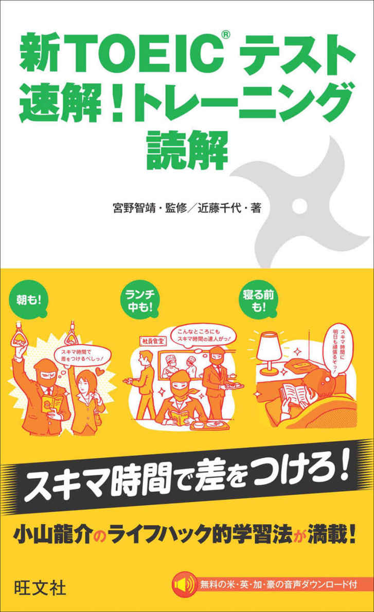
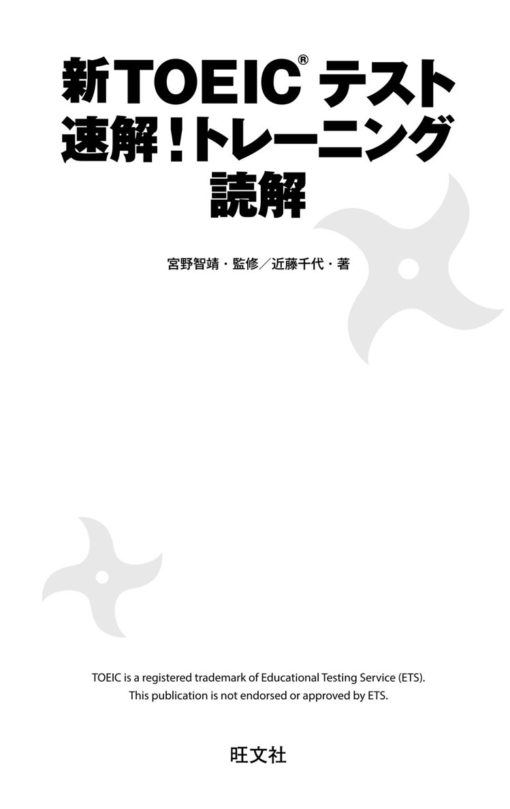
はじめに
本書は『新TOEIC®テスト 速解！トレーニング』シリーズの中の「読解」です。このシリーズは、忙しい社会人など、どんな方でも日常生活のスキマ時間を利用して、TOEIC学習を効果的に行うことができるように考えて作られました。
分厚いTOEIC対策本ではなく、こんなに薄い新書版でTOEICスコアが本当に上がるのかと疑問に感じるかもしれません。しかし、本書の中身を見れば、決して気休めの学習書ではないとすぐにお分かりいただけることでしょう。
本書には効果的なTOEIC学習のための工夫が随所に施されています。とりわけ、3つの際立つ特長があります。
① TOEICの頻出パターンを本書で攻略できます。レベル別に章を分けているので、段階的にレベルアップを図ることができます。
② 解答へのプロセスがやさしく丁寧に解説されています。
③ 『IDEA HACKS!』『STUDY HACKS!』などの著者、小山龍介氏の学習法を知ることができます。
本書が読者の皆さんのTOEICスコアアップの一助になることを願ってやみません。
監修者 宮野智靖
もくじ
旅の心得
第１章
小山龍介のライフハック的学習法
第２章
小山龍介のライフハック的学習法
第３章
小山龍介のライフハック的学習法
編集：栗本有紗
編集協力：株式会社CPI Japan、株式会社メディアビーコン、入江泉、Sarah Matsumoto
デザイン：大滝奈緒子（ブラン・グラフ）
イラスト：Hama-House
組版：株式会社 明昌堂
録音：有限会社 スタジオ ユニバーサル
ナレーション：Greg Dale（米）、Bonnie Waycott（英）、Guy Perryman（豪）、Carolyn Miller（加）
本書の音声について
本書は、TOEIC テストのリーディングセクションのPart 7 の問題集ですが、問題文と設問の音声をすべて収録しています。無料でダウンロードしていただけますので、以下の「活用例」を参考にしてご活用ください。
●活用例
● リスニング
アメリカ、イギリス、オーストラリア、カナダのいずれかの発音で収録されています。TOEICテストのリスニング対策の補助としてお使いください。なお、本の中では国旗のマークで話者の発音を表示しています。
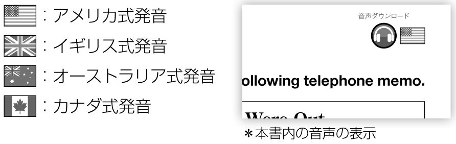
● シャドーイング
英語の音声から少し遅れて発声するトレーニング方法です。発音、イントネーション、リズムをそっくり真似ることで、リスニング力やスピーキング力がアップするだけでなく、英文中の意味のまとまりを把握しやすくなるなど、総合的な英語力の向上が期待できます。
● ディクテーション
英文の音声を書き取るトレーニング方法です。英語を意味のまとまりごとに聞いて理解できるようになったり、スペルと音の関連をより強く意識できるようになります。
●ダウンロード方法
① パソコンからインターネットで専用サイトにアクセス
下記のサイトにアクセスし、「読解」を選択してください。
※検索エンジンの「検索」欄に入力しないようご注意ください。
※携帯電話からアクセスしてもダウンロードはできません。
② パスワードを入力
下記パスワードを入力して「ログイン」ボタンをクリックしてください。
パスワード：dokkai
※すべて半角アルファベット小文字
③ 聞きたい音声をダウンロード
ダウンロードしたい音声ファイルの「ダウンロード」ボタンをクリックし、ダウンロードしてください。
※詳細はサイト上の説明をご参照ください。
④ ファイルを解凍して、オーディオプレーヤーで再生
音声ファイルはZIP形式にまとめられた形でダウンロードされます。解凍後、デジタルオーディオプレーヤーなどでご活用ください。
※デジタルオーディオプレーヤーへの音声ファイル転送方法は各製品の取扱説明書やヘルプをご参照ください。
〈注意〉
・音声はMP3ファイル形式となっています。音声の再生にはMP3を再生できる機器などが別途必要です。
・ご使用機器、音声再生ソフト等に関する技術的なご質問は、ハードメーカーもしくはソフトメーカーにお問い合わせください。
・本サービスは予告なく終了されることがあります。
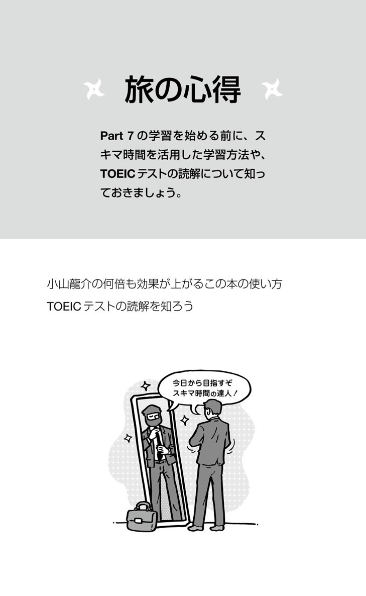
小山龍介の何倍も効果が上がるこの本の使い方
「会社でTOEICのスコアが必要になったけれど、仕事が忙しくて勉強の時間を取れない」「スコアが伸びないからもう少し勉強したいけれど、これ以上どうやって勉強すればいいの？」等々、忙しい中での勉強時間の捻出や、勉強方法について悩んでいる方は多いのではないでしょうか。
この本では、『IDEA HACKS!』『STUDY HACKS!』などの著書をお持ちの小山龍介さんにアイデアをいただき、忙しい中で学習する人のための工夫をしています。ここでは、小山さんにこの本を効果的に使う方法をご紹介いただきます。
僕が英語を学ぶきっかけとなったのは、アメリカのビジネススクールへの留学。社会人になってからの本格的な英語学習でした。当時は広告代理店に勤務しており、噂に違わぬ長時間労働。まとまった勉強時間を取ることが難しく、普通に勉強していたのでは、なかなか英語力はアップしない環境でした。しかし、とにかく一刻も早く留学するのだという決意のもと、短時間のうちに英語力を向上させ、翌年には無事合格することができました。
もともと英語は得意ではなく、留学を考えるまでは、まったく勉強もしていませんでした。真剣に勉強をしたのは大学受験以来で、そんな状態から、限られた時間の中で確実に成績を上げる工夫を積み重ねていきました。
同じ本を繰り返し勉強して、「体」で覚える
なかでも効果があったのが、1冊の本を繰り返し勉強するという方法です。
よく、1冊の本を習得する前にどんどん新しい参考書や問題集を買ってしまう人がいます。本を何冊ももっていると、確かに安心感はあるかもしれません。しかし実際には、どの内容も中途半端になってしまい、いざ試験のときには、実力を発揮できずに終わってしまいます。
試験は、（当たり前ですが）時間制限があります。問われたことに対して、反射的に答えが浮かび上がるくらいにまで習得しなければ、試験では対応できません。「あれ、これ聞いたことあるな」というレベルでは、答えにたどり着くまでに、時間がどんどん過ぎていってしまいます。これは、「頭」で覚えたというレベルです。
ここからさらに、反射神経ゲームのように答えが瞬時にひらめくまで、「体」に定着させることが重要です。そのためには、とにかく1冊の本を、すりきれるまで何度も繰り返しやり抜いてください。
間違えた問題だけを徹底して繰り返す
正解した問題を繰り返しても、力はつきません。間違えた問題に再び挑んで、それを定着させていくから、実力がついていくのです。一度、すべての問題を解き、間違えた問題は、問題番号をメモしておきましょう。そして２回目は、メモにある問題だけを解いていきます。正解した問題番号はメモから消します。３回目のときには、メモに残った問題だけに取り組みます。
こうして、間違えた問題だけを繰り返し解いていきます。ただし、４回間違えても覚えられない問題については、そこに時間をかけても、あまり効率がよいとは言えません。100％を目指す必要もないわけですし、こうした問題は思い切ってあきらめてしまうのも手です。
繰り返しにかかる時間を測って計画する
こうしていくと、1回目よりも2回目、3回目よりも4回目のほうが、短時間でやり通すことができるようになります。4回目など、理解が深まっていれば、数ページに1問、というペースになるはずです。
50％の正答率で勉強を進めることができた場合、当初かかった時間を仮に4日間とすると、2回目には2日、3回目は1日、4回目は半日でやり終えることができるでしょう。
この課題にどれくらいの時間がかかるのかがわかって、初めて「学習計画」を立てることができます。まずは問題集を解いてみて、どのくらいの時間がかかり、どのくらいの正答率だったのかを確認し、その後の計画を立てましょう。
次の画像のように、どのくらいの時間がかかったのかを振り返るためにも、やり終えた日付と正答数の記録を必ずつけておきましょう。
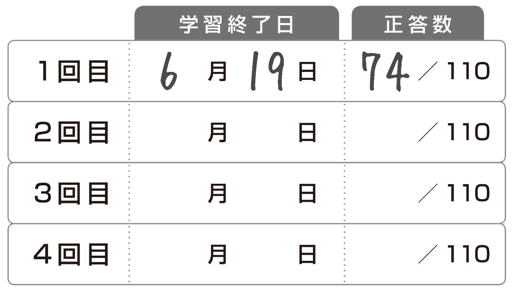
体で覚えるには耳から
さらに音声も活用すると、より一層、体に染み込ませることができます。
本書は、リスニングの問題集ではありませんが、音声を収録しています。音というのは強力です。問題を「目から見て」やるときにはない、脳に直接響く感覚があります。
僕は、留学準備中、毎晩、ヘッドホンで英語を聞きながら散歩をしていました。静かな道を歩いていると、英語と一体化したような気持ちになりました。小さな子どもが耳から言葉を覚えるように、繰り返し耳から、体に染み込ませていきました。
また、読むのと違って受動的なので、疲れていても聞いていられるのもメリットです。ぜひ音声教材も組み合わせて、効果的な学習を進めてください。
▼音声はアメリカ・イギリス・オーストラリア・カナダの4カ国の発音です。
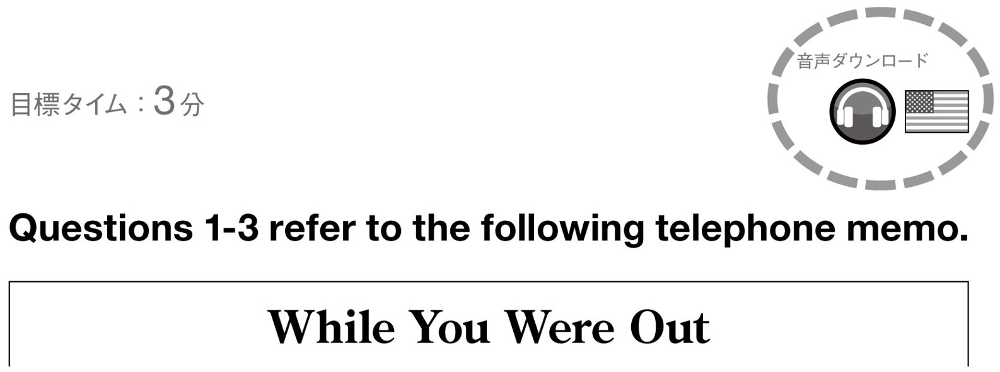
本書のこちらＡ、こちらＢ、こちらＣには、集中できる学習環境を作る方法や、モチベーションを高めるアイデアをまとめた「小山龍介のライフハック的学習法」が掲載されています。ぜひご活用ください。
<著者紹介>
小山龍介（こやま りゅうすけ）
大手広告代理店勤務を経て、サンダーバード国際経営大学院でMBAを取得。松竹株式会社プロデューサーとして歌舞伎をテーマにした新規事業立ち上げに携わったあと、午堂登紀雄氏と株式会社ブルームコンセプトを設立。
『IDEA HACKS!』『STUDY HACKS!』『TIME HACKS!』『整理HACKS!』（いずれも東洋経済新報社）『iPhone HACKS!』（宝島社）『STATIONERY HACKS!』（マガジンハウス）など、ハックシリーズ著者。翻訳に『ビジネスモデル・ジェネレーション』（翔泳社）。
「HACKS!ノート」をはじめとした新商品開発や新規事業プロデュースを手がける一方、ライフハックに基づく講演・セミナー・企業研修を多数行っている。
TOEICテストの読解を知ろう
「正解を見つけてやろう！」でいきましょう
TOEICは、時間内に多くの問題を解答しなければならないので、時間との勝負であると言われます。それだけに、「時間配分」や「速読」という言葉が頻繁に使用され、読者の中には、その言葉の呪縛から逃れられなくなって苦しんでいる方がいらっしゃるのではないでしょうか？ 「速く、速く！」という言葉が頭の中で渦巻き、問題文や設問の文字上を速いスピードで通り抜けるだけになってしまう。こうなったらもう、問題に解答するどころの話ではなくなってしまいます。しかし、考えてみてください。TOEIC長文読解問題で大切なのは、問題文全文を同じ速いスピードで読むことでしょうか？ それで、時間内に正解を探し出せるのでしょうか？
TOEIC長文読解問題を解くときは、意識を変えて「早く正解を見つけてやろう！」と積極的な姿勢でいきましょう！ 「早く見つけてやろう！」と言うからには、効率の良い方法で解くという「作戦」を練らなくてはなりません。TOEIC長文読解問題には、問題文全文をしっかりと読まなければならない設問もあれば、問題文の一部分を見るだけで正解が分かる設問もあります。ですから、問題文の種類と設問内容に応じてその「作戦」を使い分け、読むスピードもそれに応じて変える必要があります。設問で問われていることに関する情報を早く見つけ出し、その箇所を正確に速く読み取るということこそ、結果的に「早くできる」ということになるのではないでしょうか？
本書を通して、読者の皆さん（特に、TOEIC長文読解問題で苦しんでいらっしゃる方）の意識が変わり、「早く正解を見つけられるので、結果的に早くできる」ようになることを心よりお祈りいたします。
TOEICテストにおけるPart 7（長文読解問題）
TOEICは2時間で200問に答えるテストであり、その内訳は、リスニングセクション（100問・45分）、リーディングセクション（100問・75分）となっています。さらにリーディングセクションは、Part 5 （「短文穴埋め問題」・40問）、Part 6 （「長文穴埋め問題」・12問）、Part 7（「読解問題」・48問）の3つのパートから構成され、本書で取り上げているPart 7は、TOEICテストにおける最後のパートとなります。このようにリーディングセクションとは、Part 7の「読解問題」だけでなく、上記3つのパートのことを指すので、問題数100問も、試験時間75分も、この3つのパートの合計です。時間配分の計算には注意してください。
さらに、Part 7の問題は、Single Passage（1つの文書）問題が28問、Double Passage（2つの文書）問題が20問という構成になっています。出題文書は、主にビジネスに関係する手紙・書類・Ｅメール・メモ・記事・広告などで、設問内容は、①問題文の目的に関するもの、②問題文中の語彙に関するもの、③問題文中の特定の事柄に関するもの、④問題文中に書かれていない事柄を選ぶもの、⑤ある事柄について、問題文から推測して答えるものなどが一般的です。これらの設問に対して、4つの選択肢から正解を選び、マークシート方式で解答します。
Part 7（長文読解問題）への取り組み方
本書では、目標タイムが各問題の左上に書かれています。しかし既に述べたように、「速く！速く！」と焦ると悪循環です。以下のような「早く正解を見つける手法」を活用して、リラックスしながらも積極的に正解を探していきましょう！
（1）問題文を読む前に得られる情報はしっかりチェックする。
・問題文の上には、必ず"Questions 1-3 refer to the following telephone memo."というような指示文が書かれています。ここを読めば、どのジャンルの文書であるかが分かるので、必然的に文書の構成が分かり、大まかな文書の内容が推測できる場合もあります。
・文書のタイトルやＥメールの件名などは、内容の概略を示しているので、しっかり確認しましょう。
・手紙やＥメールでは、宛先や送り主の住所・氏名、さらにその人の職業や肩書きなどを確認して、その文書がどのような状況において誰から誰へ送られたものかをつかみましょう。
（2）情報を早く探すためにはスキャニング（情報検索読み）を、情報の大意をつかみたいときにはスキミング（情報拾い読み）をする。
（3）問題文を読む前に設問に目を通す。
（4）Double Passage問題の場合は、設問がどちらか1つの文書に関するものなのか、または2つの文書に関するものなのかを判断する。
ただし、これらは全問題を通しての一般的な手法なので、もちろん、問題文のジャンルや難易度、設問のタイプにより、順応性を持って活用する必要があります。その微妙な点に関しては、本書の問題と解説で確認してください。
本書の解説の読み方
本書では、TOEIC長文読解問題を解く上で重要な点を、以下のような構成で説明しています。
1）速解ポイント！
問題文を読む前に確認しておくべきポイントなどを簡潔に挙げています。
2）解説
解説は2 部構成になっています。
●「四角枠で囲われた解説」...問題集の解説などでよく目にするような一般的な根拠を述べたもので、正解を決定づける箇所を明示しています。このような解説だけで十分納得できるという方には、ここだけを読めばよいということを明確にするために、解説を四角枠で囲み、語調も一般的な解説調にしました。ただし、このような解説には正解の根拠のみが挙げられ、「どうしてそれが根拠となるのか」、「どのようにしたらその箇所が見つけられるのか」などはあまり書かれません。ここでも、その一般的な形式を用いています。
●「四角枠の下に書かれた解説」...上述の四角枠で囲われた解説を読み、「これでは分からない！」と思われる方は、その下に書かれた解説をお読みください。ここには、「四角枠内の解説では十分ではないですね。一緒に考えていきましょう」という視点で、解説の補足や正解の見つけ方などを書いています。
「速解ポイント！」や「解説」は、正解を早く見つけられる方法など一般的な手法も説明しているので、その問題のためだけに書かれた解説だと捉えずに、しっかりと読み込んで、実際のTOEICテストでも活用できるようにしてください。
本書を利用した学習法
まず、解答や解説を見ないで問題を解いてから、答え合わせをしてください。その後、次の順序で学習しましょう。
（1）「速解ポイント！」と自分の読み方を比較し、改善すべきポイントを考えてみる。
（2）正解の根拠や見つけ方が納得できるまで解説を読む。
（3）「重要語句」や「知っておきたい」に目を通し、知識や情報をインプットする。
さらに、問題文と設問の和訳が付いているので、英文読解に自信がない方は、和訳を参照して意味を確認してください。また、音声のダウンロードもできるので、英文を英語の語順で理解するリーディング練習に役立てていただけると思います。絶対的な方法というのはないので、自分に適した取り組みやすい方法で利用してください。ただし、本書の解説はしっかり読んで、「早く正解が見つけられるようになる」力の礎としてください。「TOEIC長文読解問題＝速読」との先入観からか、解説には目を走らせるだけでしっかりと理解しようとしない人、一度解いた問題を解説に照らし合わせてもう一度解き直すことは無意味だと思う人がいるようですが、それは、「速く読んでいる」と勘違いした上滑りな学習法です。英文読解力に加え、解説で述べているような手法や知識を習得したとき、TOEIC長文読解問題を解くスピードもスコアも飛躍的に伸びるはずです。本書で「早く正解を見つける」手法をしっかりと身に付けてください。
本書以外での効果的な学習法
本書で学習するとき以外でも、以下のようなことを心掛けて英文を読みましょう。
1）多くの文書に慣れましょう。
TOEIC 問題に出題されるような文書（ビジネスレターなど）を頻繁に目にすることにより、その構造や定型表現に慣れましょう。文書の「主題」は何か、どこにその「主題」が書かれているかということを常に意識してください。また、本書で何度も触れているように、文書の種類により、その「主題」が書かれている箇所や文書の構造が異なるということをしっかりと認識することが大切です。
2）日常生活でスキルを使ってみましょう。
例えば英字新聞などを使って、知りたい情報だけを探して読むスキャニングや、記事の内容の大意を知るためのスキミングをしてみてください。これは、特別なスキルで難しいことのように思われるかもしれませんが、日頃、日本語の新聞などで皆さんが無意識によくしていることです。
3）なりきって読みましょう。
手紙やＥメールの問題などは、自分が受取人（あるいは差出人）になりきって本文を読むと、内容が容易に頭に入ってきます。普段から練習してみましょう。
4）英文を読むときは、「英語モード」に切り替えましょう。
英文読解力を養うことに関しては、本書の主題上ほとんど触れていません。そこで、英文読解力のアップ法として、頭を「英語モード」に切り替えて、英文を英語の語順のままで理解する方法を試してみましょう。これは英文を意味のまとまりで区切り、後戻りをせずに前から順に意味を把握していく方法です。慣れてくると時間をかけずに正確に読むことができるようになり、リーディングが楽になります。
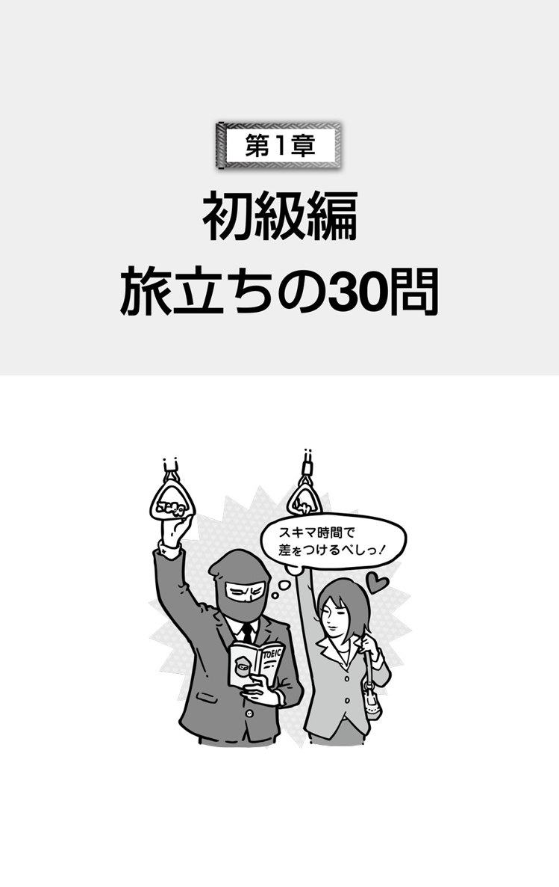
目標タイム：3分
音声ダウンロード
Questions 1-3 refer to the following telephone memo.
While You Were Out
Message
For: Bo An Deng
From: Margaret Cleaver
Company: Best Savings Electronics, Inc.
Telephone Number: 303-555-9846
E-mail: m.chatham@bestsaveeleconline.com
Date and Time: October 6, 11:38 A.M.
Ms. Cleaver said that she tried to leave a voice mail but the system wouldn't let her. She wanted to know about Shipment 903, the one that contains 500 audio players. Her purchasing director, Ismail Abedin, ordered it a week ago and it's overdue. Her warehouse manager, Sam Jordan, was expecting it 48 hours ago.
She wants you to contact her as soon as possible.
Message taken by: Fernando Valdez
1.
What has Margaret Cleaver already done?
(A) Left a voice mail message
(B) Picked up products
(C) Sent an e-mail
(D) Tried to access a system
2.
What is the message about?
(A) An overdue payment
(B) A late shipment
(C) New prices
(D) Product quality
3.
Who placed the order for the audio players?
(A) Bo An Deng
(B) Ismail Abedin
(C) Sam Jordan
(D) Fernando Valdez
●速解ポイント！
タイトルから、不在中にかかってきた電話に関する伝言メモだと分かります。誰が電話をしてきて（From:）、誰が受け取ったのか（Message taken by:）、そして、誰宛てのメモなのか（For:）、という情報をまずはすばやく拾ってください。また、問題文も設問も、短くて読みやすいものなので、先に設問を見ておきましょう。
1. 正解 （D）
伝言メモの用件の冒頭部分に、Ms. Cleaver said that she tried to leave a voice mail but the system wouldn't let her.とあることから、（D）Tried to access a systemが正解。
Margaret Cleaverがしたことは、用件の冒頭から分かりますが、ここで注意したいのはこの設問文。What has ... already done?「既にしたことは何か？」と聞かれているので、（A）が不正解だと確信を持てたとしても、（D）が正解でよいのだろうかと戸惑うかもしれません。1文目後半に... but the system wouldn't let herとあり、何か結果を出しているわけではないですので、この選択肢では、Tried to ...「...しようと試みた」も、あくまでもれっきとした「したこと」であると早く気付く必要があります。
2. 正解 （B）
2文目で、She wanted to know about Shipment 903 ...とあるので、彼女の目的はShipment903について尋ねることであったと分かる。続くHer purchasing director ... ordered it a week ago and it's overdue.から、（B）が正解。
伝言メモなので、彼女が電話をしてきた目的が簡潔に述べられているはずです。ただ、shipmentという語の意味を知らないと、即座に正解を選べません。その場合は、問題文を読み続けて、文脈から考えましょう。3文目にIsmail Abedin,ordered it a week ago and it's overdueとありますが、まだ分かりづらい人は、4文目のHerwarehouse manager ... was expecting it 48 hours ago.も見てください。ここから、shipmentの意味を知らなくても、支払いのことではないと読み取れれば正解が選べます。
3. 正解 （B）
3文目のHer purchasing director, Ismail Abedin, ordered it a week ago ...という1文から、正解は（B）Ismail Abedinだとすぐに分かる。
選択肢にはこの伝言メモに登場した人物の名前が挙げられているので、「どの人物が誰で、何をしたのか？」を本文中で再確認する必要があります。言及されている箇所を探すときは、狙いを定めた特定の情報（キーワード）だけを問題文の中で追いかけるスキャニングをすると効率的です。ただし、限られた試験時間の中で、選択肢1つ1つを探し出すのでは時間がもったいないです。「正体」がすぐさまつかめる人物は除外しましょう。ヘッダーのFor: Bo An Dengと、フッターのMessage taken by: Fernando Valdezから、（A）と（D）はすぐに消去できます。
●重要語句
■ shipment 名 発送、発送品
■ contain 動 〜を含む、〜が入っている
■ purchasing 名 購買
■ order 動 〜を注文する
■ overdue 形 期日を過ぎた
■ warehouse 名 倉庫、収納庫
■ expect 動 〜を期待する
■ product 名 製品
■ contact 動 〜と連絡をとる
■ take a message 伝言を受け取る
■ leave a message 伝言を残す
■ access 動 〜に接続する
■ payment 名 支払い
■ place an order 注文する
全文訳
問題1〜3は次の電話のメモに関するものです。
不在中の
メッセージ
宛先：Bo An Deng
発信者：Margaret Cleaver
会社：Best Savings Electronics 株式会社
電話番号：303-555-9846
E-mail: m.chatham@bestsaveeleconline.com
日時：10月6日、午前11時38分
Cleaverさんが、留守番電話にメッセージを残そうとしたところ、システムがうまくいかなかったとおっしゃっていました。彼女は、500台のオーディオプレーヤーが入っている商品の出荷番号903について知りたいということでした。彼女の会社の購入部長であるIsmail Abedinさんがそれを1週間前に注文し、配送予定日は過ぎています。倉庫管理者のSam Jordanさんは、それを48時間前に受け取るつもりにしていました。
あなたにできるだけ早く連絡してほしいとのことです。
受信者：Fernando Valdez
1.
Margaret Cleaverが既にしたことは何ですか。
(A) 留守番電話にメッセージを残した
(B) 製品を受け取った
(C) Eメールを送信した
(D) システムにアクセスしようとした
2.
メッセージは何についてですか。
(A) 期限切れの支払い
(B) 遅れている商品発送
(C) 新価格
(D) 製品の品質
3.
オーディオプレーヤーを注文したのは誰ですか。
(A) Bo An Deng
(B) Ismail Abedin
(C) Sam Jordan
(D) Fernando Valdez
知っておきたい
出題パターンをつかみましょう。
長文問題では、「先に設問に目を通しましょう」ということが一般的です。しかし、設問や選択肢の意味が分かりづらくて時間がかかる、選択肢を細部まで読むと混乱する、両方をすると問題文を読む時間がなくなる、といった底なし沼に落ちてしまう学生さんを多く見てきました。もっと気楽にいくべきです。設問には出題のパターンがあります。①目的（purpose、topicなど）に関する問題、②Not問題、③ある特定のことについて尋ねる問題、④問題文から推測しなければならない問題、⑤語彙に関する問題などです。設問をチェックするとき、まずは、これらのパターンのどれに当てはまるかを考えてはどうでしょうか？
目標タイム：3分
音声ダウンロード
Questions 4-6 refer to the following invitation.
Wambert Office Supplies
4720 Wilshire Boulevard
Los Angeles, CA 90036
As of November 1, we are open for business!
We are the largest new outlet of its kind in the area. As such, we are offering a broad selection at great prices. Choose from these products and services:
●Stationery
●Computers, tablets, mobile phones
●Photocopying
●In-store wireless Internet/e-mail access
●Business card design and printing
●Large-volume printing*
●Prepaid phone cards
The store manager, Miranda Turner, and her entire staff welcome you! Bring this invitation with you before November 14 to receive 20 percent off any item in the store.
*Requires at least 10 days' notice
4.
What is the invitation for?
(A) A community fair
(B) A grand opening
(C) A recruiting event
(D) A product demonstration
5.
What is NOT mentioned as a service of Wambert Office Supplies?
(A) Electronics sales
(B) Business cards printing
(C) Home delivery
(D) Internet usage
6.
How can customers get a discount?
(A) By speaking with a manager
(B) By responding to an e-mail
(C) By coming before a certain date
(D) By registering a specific product
●速解ポイント！
案内状に関する問題です。Wambert Office Suppliesという店名から、この案内状の発信元が事務用品店であることを押さえましょう。文章になっているところが少ないので、問題文を読むことから始めると効率が悪そうです。最初から設問に目を通して、設問に登場するキーワードを問題文の中で拾っていくと、より早く正解が見つけられるでしょう。
4. 正解 （B）
Wambert Office Suppliesという記述と、その住所の下に書かれたAs of November 1, we are open for business!から、事務用品店の開店のお知らせだと分かる。したがって、（B）A grand openingが正解。
このSuppliesという語を知らなくても、文章の冒頭We are the largestnew outlet of its kind in the area.を読めば、これが新しくできたお店であることが分かります。ここで、outlet「特売店」の意味が分からなければ、さらに2文目のAs such, we areoffering a broad selectionat great prices.を読んでみましょう。「お得な価格で提供する」とあるので、Wambert Office Suppliesが、商売目的でこの案内状を送っている場所、つまり、お店だと気付くことができます。
5. 正解 （C）
Wambert Office Suppliesが挙げているサービスのうち、（C）Home delivery「自宅への配送」だけがない。したがって、（C）が正解となる。
この設問は、指示通りにいきましょう！ What isNOT mentioned as a service ...?と尋ねられているので、列挙されているサービスの中で「言及されていない」ものを探します。それぞれ、問題文中では表現が少し違いますが、（A）はComputers, tablets, mobile phones、（B）はBusiness card design and printing、（D）はIn-store wireless Internet/e-mail accessを言い換えて言及していることに気が付けば、正解が見えてくるはずです。
6. 正解 （C）
問題文の注を除いた最後の1文に、Bring this invitation with you before November 14 to receive 20 percent off any item in the store.と書かれていることから、（C）By coming before a certain dateが正解である。
この問題は、文章として書かれているところが最初と最後しかないので探しやすいですね。discountという語が言い換えられている可能性を念頭に置いて、問題文中を探しましょう。言い換えである20 percent off any itemという表現が見つかります。また、選択肢（C）のa certain dateはNovember 14を指しています。ちなみに、before November 14は、「11月13日以前」という意味で、11月14日は入りませんので注意してください。
●重要語句
■ supply 名 ［複数形で］生活必需品
■ outlet 名 特売店、アウトレット
■ selection 名 品揃え
■ stationery 名 文房具
■ volume 名 分量
■ entire 形 全部の
■ community 名 地域社会、共同体
■ recruit 動 （新社員など）を募集する
■ demonstration 名 実物宣伝
■ usage 名 使用
■ respond 動 返答する
■ certain 形 一定の、定められた
■ specific 形 特定の
全文訳
問題4〜6は次の案内状に関するものです。
Wambert事務用品店
Wilshire大通り4720番地
ロサンゼルス、カリフォルニア州 90036
11月1日から、開店営業！
当店は、地域でこの種最大の新しいアウトレット店です。そのような店として、幅広い品揃えをお得な価格で提供させていただきます。次の製品とサービスの中からお選びください。
●文房具
●コンピューター、タブレット、携帯電話
●コピー
●店内で利用できるワイヤレスでのインターネット／Eメール接続
●名刺のデザインと印刷
●大量印刷＊
●料金前払い式テレホンカード
店長のMiranda Turnerとスタッフ全員があなたを歓迎いたします！ 11月14日よりも前にこの案内状をお持ちいただくと、店内のいずれの品物も20パーセント引きになります。
＊少なくとも10日前のご通知を必要とします。
4.
何のための案内状ですか。
(A) コミュニティフェア
(B) グランドオープン
(C) 新入社員募集の催し
(D) 製品の実物宣伝
5.
Wambert 事務用品店のサービスとして述べられていないものは何ですか。
(A) 電子機器の販売
(B) 名刺の印刷
(C) 自宅への配送
(D) インターネットの使用
6.
客はどうすれば値引きをしてもらえますか。
(A) 店長と話すことによって
(B) Eメールに返事をすることによって
(C) ある特定の日よりも前に来ることによって
(D) 特定の製品を登録することによって
知っておきたい
問題文以外からも情報を得ましょう。
今回の問題を例に、問題文を読む前に情報を得る方法を考えてみましょう。まずは、おなじみの冒頭を確認する方法です。指示文中の案内状（invitation）という文書形式、文書冒頭の会社名（Wambert Office Supplies）、その下の1文、As of November 1, we are open for business!を確認すると、問題文の主題が分かります。もう1つの方法は、設問文に書かれた手掛かりによって推測する方法です。設問文に目を通すと、2つ目には ... as a service of Wambert Office Supplies、3つ目にはHow can customers get a discount?とあります。つまり、この案内状には、Wambert Office Suppliesが、何か有料のサービスをすることが書かれていると推測できますね。いずれも使えますよ。
目標タイム：3分
音声ダウンロード
Questions 7-9 refer to the following postcard.
Dear Ms. Kuroda,
Please remember that your first lesson will start with us on:
9 December, 6:00P.M.
Instructor: Jane Thomas
Instrument: Cello
Please bring your instrument with you, unless you are a piano student.
Kind Regards,
Frances Thorne
Music School Director
Opening Hours:
Monday- Friday
10:00A.M.-9:00P.M.
Saturday
1:00P.M.-5:00P.M.
Sunday
Closed
Liak Music School
92 Shortland Street
Vero Centre
Auckland
Mai Kuroda
284 Quay Street, Apartment 179
Auckland
7.
Why was the postcard sent?
(A) To welcome new staff
(B) To remind a student of an appointment
(C) To confirm a job interview
(D) To advise of a business change
8.
When is the latest the school is open on Saturdays?
(A) 1:00P.M.
(B) 5:00P.M.
(C) 6:00P.M.
(D) 9:00P.M.
9.
Who most likely is Jane Thomas?
(A) A shopper
(B) A receptionist
(C) A teacher
(D) A director
●速解ポイント！
ポストカードの問題です。ポストカードという形式からも想像ができるように、ここに書かれている内容は、大ざっぱに2つに分けられます。ポストカードの半分にメッセージ、残りの半分に住所氏名です。読むべき英文の箇所が極めて少ないので、送り主と宛先を確認したら、すぐに設問から読み始めましょう。
7. 正解 （B）
このポストカードは、Liak音楽教室からMai Kuroda宛てに送られたものである。ポストカードの第1文目、Please remember that your first lesson will start with us on: 9 December, 6:00 P.M.から、初レッスンの日時の確認だと分かり、（B）が正解。
ポストカードが書かれた目的は、文の冒頭を見ると分かります。ただ、your first lessonという表現だけでは、先生なのか生徒なのか迷うかもしれません。その場合は、Instructor: ...と先生の名前が挙がっていること、また、その下に書かれたPlease bring your instrument with you,unless you are a piano student.から、生徒であることをすばやくチェックしてください。正解（B）のremindは「（人）に思い出させる」という意味であり、appointmentを思い出させるということになります。
8. 正解 （B）
開校時刻は、Opening Hoursの土曜日を見ると、1:00 P.M.-5:00 P.M.とある。ここから、正解は（B）5:00 P.M.となる。
これは、すばやく正解を見つけることができる問題です。選択肢に並んだ時刻表示からも、Opening Hoursに正解の情報があることは一目瞭然。すぐにOpening Hoursの項目に目を通して、土曜日は何時までやっているのかを確認してください。
9. 正解 （C）
本文中程に、Instructor: Jane Thomasとの表記がある。これは、Mai Kurodaのレッスンに関するお知らせとなっていることから、彼女の先生の名前と分かる。したがって、正解は（C）A teacher。
Jane Thomasという名前をキーワードに、問題文中を情報検索すると、Instructor: Jane Thomasという表記が見つかり、すぐに先生であることが分かります。音楽教室からのポストカードですので、（A）A shopper「買い物客」の名前のはずはありません。また、（B）A receptionist「受付係」の名前も書かれていません。（D）A director「校長」の名前は、Frances Thorneと書かれていて、この名前が記されている箇所から考えて、このポストカードを書いた人物です。
●重要語句
■ instructor 名 講師、指導者
■ instrument 名 楽器
■ unless 接 〜でなければ、〜の場合を除いては
■ Kind Regards, 敬具
■ remind 〈人〉 of 〜 （人）に〜のことを思い出させる
■ appointment 名 予約、約束
■ confirm 動 〜を確認する
■ interview 名 面接
■ shopper 名 買い物客
■ receptionist 名 受付係
■ director 名 校長、指導者
全文訳
問題7〜9は次のポストカードに関するものです。
Kuroda様
あなたの最初のレッスンは次の日時から始まりますので、お忘れのないようお願いします。
12月9日、午後6時
講師：Jane Thomas
楽器：チェロ
ピアノの受講生以外の方は、ご自分の楽器をご持参ください。
敬具
Frances Thorne
音楽教室校長
開校時間：
月曜日─金曜日
午前10時─午後9時
土曜日
午後1時─午後5時
日曜日
休校
12月5日
Liak音楽教室
Shortland通り92番地
Vero Centre
Auckland
Mai Kuroda
Quay通り284番地
Apartment 179
Auckland
7.
なぜポストカードは送られましたか。
(A) 新しいスタッフを歓迎するため
(B) 生徒が予約を忘れないように念を押すため
(C) 就職の面接を確認するため
(D) 業務上の変更を通告するため
8.
土曜日は、教室はいつまで開いていますか。
(A) 午後1時
(B) 午後5時
(C) 午後6時
(D) 午後9時
9.
Jane Thomas は誰だと考えられますか。
(A) 買い物客
(B) 受付係
(C) 先生
(D) 校長
知っておきたい
「予約」を確認しましょう。
今回の問題の内容はレッスンの予約の確認についてでしたが、この「予約」という語は、英語では使い分けられます。この問題のように、日時などを決めて人に会うという場合はappointment、レストランなどの席を確保するというような場合はreservationを使います。また、イギリス英語では、座席や切符の予約にはbookingをよく使います。日本でもdouble booking「二重予約」としてよく耳にしますね。これら「予約」という名詞は、動詞makeの目的語となって、make an appointment［a reservation / a booking］「予約する」という表現になります。
目標タイム：3分
音声ダウンロード
Questions 10-12 refer to the following form.
Oudell Offices
84 Avenue of the Americas
New York, NY
For Visitors
Please complete the form with the correct information below. Afterwards, visitor ID cards will be issued. Please wear the cards visibly as they are required in order to pass security and return them before leaving.
First Name:Giuseppe
Last Name:DiMarco
Representing:Janplank Oil Co.
Appointment with:Cindy Baumgartner
Company:TX Global Energy
Floor:68
Time:10:30A.M.
Purpose (use other side of this form if more space is required):
Meeting my customer for conference on various business issues
Parked vehicle in company garage: Yes X No
Make and Model: Leopard sports car, Central Motors
License Plate Number:JF2-8314
Only security personnel may write beneath this line.
Checked visitor personal photo ID : Yes X No
Placed visitor bags in security scanner: Yes X No
Security Staff:
Name (Type or Print): Trina Rowe
Signature:Trina Rowe
10.
What is the purpose of the form?
(A) To get public opinions on a building
(B) To receive feedback on a tour
(C) To identify arriving individuals
(D) To confirm the results of a meeting
11.
Who is Cindy Baumgartner?
(A) A security staff member
(B) A business client
(C) An office tower administrator
(D) A professional conference planner
12.
What is indicated about Giuseppe DiMarco?
(A) He mailed this document.
(B) He came without an appointment.
(C) He drove to the grounds.
(D) He printed lines on the form.
●速解ポイント！
申し込み用紙に関する問題であることを確認しましょう。一番上に書かれたOudell Offices、そして、その住所の下にある For Visitorsの文字から、この建物への訪問者対象のものだと分かります。この申し込み用紙は、項目別に簡潔に記述されているので、比較的探している情報が見つけやすくなっています。問題文にある情報を混同しないように、頭の中で整理しながら読みましょう。
10. 正解 （C）
冒頭に、Please complete the form with the correct information below. Afterwards, visitor ID cards will be issued. Please wear the cards visibly ...とあることから、（C）が正解。
For Visitorsとあるので、この用紙に記入するのは訪問者です。この用紙にある情報全てに記入すれば、ID cardを発行すると書かれており、この用紙は身元確認のID cardを発行するためのものであることが分かります。3文目のPlease wear the cards visibly ... から、身元確認ができることの重要性が強調されています。また、用紙の記入事項を見ると、訪問者の氏名（First Name、Last Name）、面会の相手（Appointment with）、会社名（Company）、来社の目的（Purpose）などの項目が並んでいるので、ここからもこの用紙の目的が推測できます。
11. 正解 （B）
用紙の記入項目に、Appointment with: Cindy Baumgartnerとある。そして、その下方に、Purpose ... Meeting my customer for conference on various business issuesと、その目的が述べられている。ここでのmy customerは、Cindy Baumgartnerを指すことから、（B）A business clientが正解。
Cindy Baumgartnerさんの名前を問題文中で検索して情報を見つけましょう。名前の前の項目がAppointment with:となっているので、面会の予約を取っている相手です。「誰の相手か」については、この用紙の記入者Giuseppe DiMarcoさんであることをお忘れなく。目的のMeeting my customer for conference ...は、my customerに注目してください。
12. 正解 （C）
用紙の記入項目に、Parked vehicle in company garage: とあり、そこでは Yes にチェックがついている。さらにその下のMake and Model:という項目では、Leopard sports car, Central Motorsと記入されていることから、彼が車で来たことが分かる。
（C）のthe groundsは、〈定冠詞＋複数形〉で特定の場所を表し、ここでは、オフィスの敷地を意味しています。もし、上の解法が難しければ、消去法で正解を見つけましょう。（A）は、この用紙は、訪問者が記入するものであり、mail「郵送する」ものではないことから消去。（B）は、項目を確認してください。Appointment with: とあり、面会の予約をしていると分かるので、消去。（D）は、訪問した出先で用紙を書いているので、内容と矛盾します。
●重要語句
■ issue 動 〜を発行する 名 問題
■ visibly 副 （見た目に）はっきりと
■ represent 動 〜を代表する
■ require 動 〜を必要とする
■ conference 名 協議（すること）、会議
■ vehicle 名 乗り物、輸送手段
■ security personnel 警備要員
■ beneath 前 〜の真下に
■ place 動 〜を置く、配置する
■ identify 動 〜を（同一人物であると）確認する
■ confirm 動 〜を確認する
■ result 名 結果
■ client 名 依頼人、顧客
■ print 動 活字体で書く
全文訳
問題10〜12は次の申し込み用紙に関するものです。
Oudell Offices
the Americas大通り84番地
ニューヨーク、ニューヨーク州
ご来客の皆さまへ
申し込み用紙に、下記の正確な情報をご記入ください。その後、来客者用IDカードが発行されます。警備を通過するために必要ですので、カードは見えるように身に着けていただき、お帰りの前にご返却ください。
名：Giuseppe
姓：DiMarco
代表：Janplank石油会社
面会の相手：Cindy Baumgartner
会社名：TX Global Energy
階：68
時間：午前10時30分
目的（さらにスペースが必要な場合は、この用紙の裏面をご使用ください）：
さまざまなビジネス上の問題について協議するために顧客に会うこと
会社の駐車場に駐車した：はい X いいえ
メーカーと型：Leopard スポーツカー、Central Motors社
ナンバープレート：JF2-8314
この線より下は、警備員のみが記入します。
来客者用写真付きIDを確認した：はい X いいえ
来客者のバッグをセキュリティースキャナーにかけた：はい X いいえ
警備員：
氏名（タイプもしくは活字体で記入する）：Trina Rowe
署名：Trina Rowe
10.
申し込み用紙の目的は何ですか。
(A) 建物に関する一般の意見を聞くこと
(B) ツアーへの感想を聞くこと
(C) 到着する個人の身元確認をすること
(D) 会議の結果を確かめること
11.
Cindy Baumgartnerとは誰ですか。
(A) 警備員スタッフ
(B) 取引客
(C) オフィスタワーの管理者
(D) プロの会議企画者
12.
Giuseppe DiMarcoについて、どのようなことが示されていますか。
(A) この書類を郵送した。
(B) 予約なしで来た。
(C) その場所へ車で来た。
(D) 情報を用紙に印刷した。
知っておきたい
formは、なりきって見てみましょう。
form問題は、項目別に書かれていて分かりやすいですね。ただそれだけに、目的を問われる設問、全体に目を通して考えなければならない設問が出てくると、何とも厄介な感じがします。そんなときは、記入する本人になって考えてみてはどうでしょう？ 今回の問題であれば、あなたがそのvisitor。訪問先でこのformに記入するように言われているという設定です。「これは何の用紙？」から始まって、自分が誰か、自分が誰に何の目的で会いに来たのか、どうやって来たのかなど、あなた（visitor）の人物像と状況を頭で描けるよう、情報を拾っていってください。自然に上記の設問の正解が分かるようになっていませんか？
目標タイム：3分
音声ダウンロード
Questions 13-15 refer to the following message.
May 1
7:45P.M.
Sushil,
I've gone home for the day and I'll be working from my apartment tomorrow. If you need anything, please call my mobile phone.
Drew Zimmerman said that we might go over our budget for the Ellerman Perfumes, Inc., logo project. He said he'd drop by your office tomorrow to talk with you about this.
We're in our final project stages now. I'm sure we'll have everything finished by the 7 May deadline that Ted Wazir made for us.
Jerry
13.
What is the purpose of the message?
(A) To inform of a staff member leaving the office
(B) To ask about the progress of a project
(C) To provide new contact information
(D) To explain problems with a document
14.
According to the message, what does Drew Zimmerman plan to do tomorrow?
(A) Work from his apartment
(B) Ask for a budget increase
(C) Send an e-mail
(D) Meet a coworker
15.
What is indicated about Ted Wazir?
(A) He worked in a different office.
(B) He turned in some project details.
(C) He set an assignment time limit.
(D) He missed a company deadline.
●速解ポイント！
メッセージの問題であると分かるので、まず、誰から誰へのメッセージかをチェックしてみてください。この問題の場合、ファーストネームしか書かれていませんが、このことから、おそらく、目上の人へのメッセージではないだろうという情報が得られます。
13. 正解 （A）
第1段落冒頭に、I've gone home for the day ...と書かれているので、帰宅したことを伝えるのが目的であると分かる。正解の（A）では、「帰宅する」がleaving the officeに言い換えられている。
他の選択肢を見ていきましょう。（B）は、第3段落冒頭にWe're in our final project stages now. とあり、メッセージを残した人が、プロジェクトの進捗状態を尋ねるどころか、自分で言っているので不正解です。（C）に関係ありそうなのは、第1段落のplease call my mobile phoneですが、新しい連絡先を教えているわけではありません。最後に（D）は、第2段落のwe might go over our budget for the Ellerman Perfumes, Inc., logo projectに関係ありそうですが、書類についての問題点を述べているわけではないので、これも不正解です。
14. 正解 （D）
Drew Zimmermanの明日の予定を尋ねている問題。第2段落冒頭にDrew Zimmermanの名前があり、続く文でHe said he'd drop by your office tomorrow to talk with you about this.と述べられていることから、（D）Meet a coworkerが正解。
第2段落をよく見ると、Drew Zimmerman said that we might go over our budget ...とHe（＝Drew Zimmerman） said he'd drop by your office tomorrow ...の2文から構成されていることが分かります。これにより（A）と（C）は消去できても、もしかして（B）ではないかと迷う人がいるかもしれません。（B）が不正解の理由は、予算を検討するとは書かれていても、「予算の増加を求める」とは書かれていないということ。そして、これは彼（he）だけでなく、私たち（we）が、するかもしれないことだということです。
15. 正解 （C）
第3段落にthe 7 May deadline that Ted Wazir made for usとあるので、（C）He set an assignment time limit.が正解である。
Ted Wazirという名前を本文中で探せば、正解の根拠となる上記の箇所が見つけられます。しかし、deadlineの意味を知らなければ、（C）がすぐに正解とは分からないかもしれません。知らない単語が出てきたら、文脈で考えてみてください。この問題の場合、we'll have everything finished by the 7 May deadline「5月7日のdeadlineまでに全てを終わらせる」と書かれていることから、deadlineが「期限」だと気付きましょう。ちなみに、このdeadlineは、文字通りの「死線」という、超えると殺される境界線の意味もあります。つまり、deadlineの原義は、「越えてはいけない線」ということです。
●重要語句
■ mobile phone 名 携帯電話
■ go over 〜 〜を詳細に調べる、検討する
■ budget 名 予算、経費
■ logo 名 （＝logotype） シンボルマーク、連結活字
■ drop by 〜 〜にひょいと立ち寄る
■ stage 名 段階、時期
■ deadline 名 締切、期限
■ progress 名 進行、経過
■ coworker 名 仕事仲間
■ turn in 〜 〜を提出する
■ detail 名 （複数形で）詳細（な情報）
■ assignment 名 （割り当てられた）仕事
■ miss 動 〜に間に合わない、〜し損なう
全文訳
問題13〜15は次のメッセージに関するものです。
5月1日
午後7時45分
Sushil様
今日はもう帰途についており、明日は自宅アパートで仕事をします。必要であればどんなことでも、私の携帯電話にお電話をください。
Drew Zimmermanによると、Ellerman Perfumes株式会社のロゴに関するプロジェクトの予算を検討するかもしれないとのことでした。彼はこれについて話し合うために、明日あなたのオフィスに立ち寄ると言っていました。
私たちは今や、プロジェクトの最終段階にいます。Ted Wazirが提示してきた5月7日の締切日までに、私たちはきっと全てを終えているでしょう。
Jerry
13.
メッセージの目的は何ですか。
(A) スタッフの1人がオフィスを出て帰ることを知らせること
(B) プロジェクトの進捗について尋ねること
(C) 新しい連絡先を教えること
(D) 書類の問題点を説明すること
14.
メッセージによると、Drew Zimmermanは明日、何をする予定ですか。
(A) 自宅のアパートで仕事をする
(B) 予算の増加を求める
(C) Eメールを送る
(D) 同僚に会う
15.
Ted Wazirについて、どのようなことが示されていますか。
(A) 別のオフィスで働いていた。
(B) プロジェクトの詳細を提出した。
(C) 仕事に期限をもうけた。
(D) 会社の締切に間に合わなかった。
知っておきたい
実在するカタカナ語たち。
この問題に出てきたlogoという語、日本でも「ロゴ」として耳にします。これは、supermarketのことを「スーパー」と呼ぶように、省略されたカタカナ語のようですが、「ロゴタイプ、シンボルマーク、連結活字」という意味の正式な語です。もっとも、logotypeという語の略語なのですが、日本語の中で省略されたわけではありません。それでは、よく誤用の例として挙げられるレントゲンやワクチンは？ 英語では、それぞれ"X-ray"、"vaccine"と言いますが、この2語も英語ではありませんが、外来語です。Röntgen（X線を発見したドイツの物理学者）、Vakzin（ラテン語のvacca「牝牛」から生まれた「牛痘」という語）というドイツ語に由来しています。
目標タイム：3分
音声ダウンロード
Questions 16-18 refer to the following schedule.
JX Engineering Company
78 Pioneer Square
Seattle, WA
Schedule for Nhyira Amoasah, CEO
February 9
Prepared by Linda Tyler
Personal Assistant
9:00 : Meeting with Christine Karnow, quality control manager
10:00 : Review of business performance
─with CFO Corey Galloway and finance committee
11:00 : Presentation on comments and complaints from clients
─by Arnold Bakko, Sales Director
12:00 : Lunch, Sirius Restaurant
─with Gillian Sharpe, CEO of Mentx Industries, Inc.
13:00 : Operations meeting
─with Chief Operations Officer Maeve Lindstrom and Operations committee
14:30 : Greet three newly hired engineers
15:00 : Open
16:10 : Videoconference
─with Geoffrey Campbell in Bangladesh, leading road development project there
16.
What does the schedule outline?
(A) An inspection of facilities
(B) A business day of a leader
(C) A list of product options
(D) A set of monthly goals
17.
According to the schedule, when will Mr. Amoasah hear about customer feedback?
(A) At 9:00
(B) At 10:00
(C) At 11:00
(D) At 13:00
18.
What is indicated about the company?
(A) It has chosen a new CFO.
(B) It has created some new committees.
(C) It has paid for a restaurant meal.
(D) It has recruited several staff.
●速解ポイント！
スケジュールの問題です。スケジュールの上部に書かれた、Schedule for Nhyira Amoasah, CEOを見つけたら、すぐに設問を確認してください。この問題文は、時刻ごとに予定が整理されているので、いきなり設問を読みながら問題を解くことができそうです。
16. 正解 （B）
会社の所在地の下に、Schedule for Nhyira Amoasah, CEOとFebruary 9と書かれている。このことから、Nhyira Amoasah最高経営責任者の2月9日のスケジュールだと分かる。したがって、（B）A business day of a leaderが正解。
（B）のleaderがCEOの言い換えだと気が付けば、すぐに正解が分かります。ただ、もし分からない場合でも、消去法で解くことができます。Nhyira Amoasah最高経営責任者の2月9日のスケジュールと書かれていて、スケジュールには時刻も記されていますので、まず、（C）と（D）は不正解です。（A）については、スケジュールの項目を2つほど拾って見てください。9:00: Meeting with Christine Karnow ...、10:00: Review of business performance ...などとあります。これらは、（A）のinspection of facilities「施設の調査」とは無関係ですから不正解です。
17. 正解 （C）
スケジュールをチェックすると、11:00: Presentation on comments and complaints from clients ─ by Arnold Bakko, Sales Directorとあるので、（C）が正解。
設問のcustomer feedbackをキーワードにして、問題文中をスキャニング（情報検索読み）しましょう。キーワードは言い換えられていることがあり、そのままの形で見つかるとは限りませんので気を付けてください。ここで、キーワードを探すときに注意すべきことは、このスケジュールの始めから終わりまで見ないということです。せっかく、選択肢で時間を提示してくれているので、スキャニングするのは9時から13時（12時除く）の範囲まで。この範囲内で、目を左から右ではなく、上から下へと走らせて、キーワードを見つけましょう。customer feedbackの言い換えのcomments and complaints from clientsが、11時の項目にあります。
18. 正解 （D）
スケジュールを見ると、14:30: Greet three newly hired engineersとある。つまり、これは、（D）It has recruited several staff.「数名の社員を新しく入れた」ことを意味すると考えられる。
会社について"indicate"されていることを探す問題ですので、これは少し考えなくてはなりません。選択肢を順番に見てみましょう。（A）10時にCFOとReviewをするとありますが、新しく選ばれたCFOなのかは不明です。（B）10:00: ... finance committeeと13:00: ... Operations committeeとありますが、これも新しいとの言及はありません。（C）12:00: Lunch, Sirius Restaurantとありますが、支払いのことは書いていません。
●重要語句
■ CEO（chief executive officer） 名 最高経営責任者
■ quality control 品質管理
■ business performance 営業実績
■ CFO（chief financial officer） 名 最高財務責任者
■ finance 名 財政、財務
■ comment 名 批評
■ complaint 名 不平、苦情
■ chief operations officer（COO） 名 最高業務遂行責任者
■ hire 動 〜を雇う
■ outline 動 〜の要点を述べる
■ inspection 名 点検、調査、視察
■ facility 名 （複数形で）施設、設備
全文訳
問題16〜18は次のスケジュールに関するものです。
JX Engineering Company
Pioneer Square 78番地
シアトル、ワシントン州
Nhyira Amoasah最高経営責任者の予定
2月9日
Linda Tyler作成
個人秘書
9時：Christine Karnow 品質管理部長と会合
10時：営業実績の再検討
─ Corey Galloway 最高財務責任者及び財政委員会と共に
11時：顧客からの意見及び苦情に関しての報告
─ Arnold Bakko 販売部長から
12時：レストランSiriusにて昼食
─ Mentx Industries 株式会社の Gillian Sharpe 最高経営責任者と共に
13時：経営会議
─ Maeve Lindstrom 最高業務遂行責任者及び経営委員会と共に
14時30分：新規採用の3人の技術者に挨拶
15時：予定なし
16時10分：テレビ会議
─ バングラデシュにおける道路開発計画リーダー Geoffrey Campbell と共に
16.
スケジュールは何の要点を述べていますか。
(A) 施設の調査
(B) 統率者の会社での1日
(C) 製品選択の一覧表
(D) 一連の月間目標
17.
スケジュールによると、Amoasahさんが顧客の意見を聞くのはいつですか。
(A) 9時
(B) 10時
(C) 11時
(D) 13時
18.
会社について、どのようなことが示されていますか。
(A) 新しい最高財務責任者を選んだ。
(B) 新しい委員会をいくつか創設した。
(C) レストランでの食事の支払いをした。
(D) 数名の社員を採用した。
知っておきたい
自分のスケジュールだと思いましょう。
スケジュール問題は、誰のスケジュールなのかと、その人物の職業や肩書きが分かったら、その人になりきってチェックしてみましょう。設問で問われることを自分が知りたい予定だと考えると、ずっと探しやすくなります。例えば上の問題では、「customer feedbackの報告は何時からだったかな？」というようにです。この人物はCEOなので、報告される側であるという視点で見ることをお忘れなく。スケジュールは基本的に時系列に沿って記され、予定の要点が簡潔に箇条書きで書かれています。1日の行動を全体的に把握する必要があるときは、時刻とその要点をスキミングするとよいでしょう。これ、実は日常生活でよくやっていますね。
目標タイム：3分
音声ダウンロード
Questions 19-21 refer to the following e-mail.
| To: | Su-yeon Kim |
| From: | Rodney Hartman |
| Subject: | Caterers |
| Date: | 16 July |
| Attachments: |
Dear Ms. Kim,
As you directed, I researched potential catering companies for Director Kevin Parker's retirement party on 17 August.
> Quok Catering: £2,800
> Sainz Catering Ltd.: £4,300
> Bobbins Great Events: £1,900
> Toomey and Bassalt Dining Services: £6,175
You told me earlier that your first preference would be the cheapest provider. However, I recommend Sainz Catering Ltd., as they offer several services free of charge. These include: setting up audiovisual equipment, greeting guests as they arrive and providing a small jazz music band. Of course, the decision is up to you, so I attached some more information about each company.
Yours sincerely,
Rodney
19.
What is the purpose of the e-mail?
(A) To submit options for an event
(B) To request information about a schedule
(C) To comment on program results
(D) To enter a food contest
20.
According to the e-mail, what company would be Ms. Kim's first preference?
(A) Quok Catering
(B) Sainz Catering Ltd.
(C) Bobbins Great Events
(D) Toomey and Bassalt Dining Services
21.
Who most likely is Su-yeon Kim?
(A) A recent retiree
(B) A company administrator
(C) A professional entertainer
(D) A major stock investor
●速解ポイント！
Eメールの問題では、最初に、必ず宛先と送り主、そして、件名を見ましょう。次に、設問をチェックします。3問目の「Su-yeon Kimはどのような人物」といった設問は、念頭に置いて問題文を読んでいった方が効率的です。ただし、設問をチェックするときの注意点として、設問文や選択肢の中には、複雑で理解に時間がかかるものもあります。その場合は後回しにした方がよいので、臨機応変に進めましょう。
19. 正解 （A）
件名が Caterers であり、本文冒頭にAs you directed, I researched potential catering companies for Director Kevin Parker's retirement party on 17 August.とある。列挙されているのは、ケータリング会社4社とその価格なので、（A）が正解。
もしもcatering companiesの意味が分からない場合は、文脈から意味を推測しましょう。I researched potentialcateringcompaniesfor DirectorKevin Parker's retirement party.とあり、大雑把に理解すると、このcatering companiesは、Kevin Parkerさんのパーティーのために必要な会社だと分かります。件名のCaterersも、この仕事をする業者という意味です。もう、思い付きましたね？ パーティーの料理や飲み物を用意してくれる会社、配膳業者です。選択肢（A）にある optionsとは「選択肢」の意味で、問題文中に挙げられた4つの候補の配膳業者を表しています。
20. 正解 （C）
リストの後で、You told me earlier that your first preference would be the cheapest provider.と述べられている。そして、候補に挙げられている会社のうち、Bobbins Great Eventsの価格が最も低いことから、（C）が正解となる。
最初にEメールの目的、続いてケータリング会社の候補という問題文の構造から考えて、Kimさんのfirst preferenceが述べられているのは最後の段落と分かります。しかし、"Ms. Kim"の名前をここで探しても彼女の名前は見つかりません。そのとき思い出したいのは、このEメールが、Rodney Hartman からSu-yeon Kimに送られたものであるということです。Kimさんを表す主語は、"you"でなくてはなりません。
21. 正解 （B）
送り主であるRodney Hartmanは、第1段落冒頭でAs you directed, I researched ...と述べ、最終段落後半で、the decision is up to youとしている。Su-yeon Kimは、「探すよう指図ができ、決定権がある者」となるので、（B）が正解。
このEメールに出てくる人物の関係を、もっと自然な視点から考えてみましょう。第1段落に、Director Kevin Parker's retirement partyとあるので、彼が近く退職する人だと分かります。彼の肩書きは取締役。この彼の退職のパーティーのために、Su-yeon Kimの指示により、Rodney Hartman がcatering companyを探したんですね。これは、一般的に考えて、どうも会社内のことでしょう。（C）や（D）では、不自然です。
●重要語句
■ caterer 名 仕出し屋、宴会業者
■ direct 動 指揮する、命令する
■ potential 形 可能性を秘めた
■ catering 名 仕出し（業）、ケータリング
■ retirement 名 退職
■ preference 名 他より好むこと、優先
■ free of charge 無料で
■ include 動 〜を含む
■ attach 動 〜を添付する
■ submit 動 〜を提出する
■ retiree 名 退職者
■ administrator 名 管理者、経営者
■ stock 名 株、株式
■ investor 名 投資者
全文訳
問題19〜21は次のEメールに関するものです。
宛先：Su-yeon Kim
送信者：Rodney Hartman
件名：ケータリング業者
日付：7月16日
添付ファイル：
Kim様
ご指示の通り、8月17日に行われるKevin Parker取締役の退職パーティーのためのケータリング業者の候補を調べました。
> Quok Catering社：2,800ポンド
> Sainz Catering社：4,300ポンド
> Bobbins Great Events社：1,900ポンド
> Toomey and Bassalt Dining Services社：6,175ポンド
以前に、一番安く提供する会社が最優先だとおっしゃいました。しかしながら、私はSainz Catering社をお勧めします。というのも、いくつかのサービスを無料で提供してくれるからです。これらのサービスには、視聴覚機器をセットすること、到着するお客様を出迎えること、小編成のジャズバンドの演奏を提供することが含まれます。もちろん、決断はKimさんにお任せしたいので、それぞれの会社のさらなる情報を添付しました。
敬具
Rodney
19.
Eメールの目的は何ですか。
(A) 催しのための選択肢を提出すること
(B) スケジュールについての情報を求めること
(C) 計画の結果に関して意見を述べること
(D) 食品コンテストに参加すること
20.
Eメールによると、Kimさんが最優先するのはどの会社ですか。
(A) Quok Catering社
(B) Sainz Catering社
(C) Bobbins Great Events社
(D) Toomey and Bassalt Dining Services社
21.
Su-yeon Kimは誰だと思われますか。
(A) 最近定年退職した人
(B) 会社の管理者
(C) プロのエンターテイナー
(D) 大口の株式投資家
知っておきたい
カタカナ語には気を付けましょう。
この問題にはretirementという単語が出てきましたが、このretirementの動詞形がretire。日本人がよく使う「リタイアする」はこの動詞から来ています。カタカナ語の動詞は、「動詞＋する」の形で定着していますが、意味も少しずれている場合があるので注意が必要です。retireも「（定年などで）退職する」という意味。若い人が中途退職をする時などはquitを使いましょう。同様に、「エスケープする」の元になるescapeは、かなり危険な状況から「逃げる、脱出する」という意味です。ところで、「エスケープする」という言い方を近頃耳にしないことに、今気付きました。これはカタカナ語の死語なのかもしれません。気を付けないと！
目標タイム：3分
音声ダウンロード
Questions 22-24 refer to the following table of contents.
Apples, Oranges and Beyond Magazine
TABLE of CONTENTS
Pg. 5:
Important farm news from around the world
Pg. 7:
E-mails from readers
Pg. 9:
From the Editor
Pg. 12:
Profile:
Chien Tran of Vietnam talks about secrets for increasing rice output
Pg. 17:
Photo Gallery:
The beautiful farms and other natural scenery of the Ukraine
Pg. 31:
Special Report:
Will prices for farm goods rise next year?
Pg. 38:
New Delka Co.Fieldmaster Tractor:
Is it as useful as advertised?
22.
What is the main topic of the magazine?
(A) Growing various types of food
(B) International trade laws
(C) Housing in the countryside
(D) Protecting against environmental damage
23.
On what page can information about price changes be found?
(A) Page 12
(B) Page 17
(C) Page 31
(D) Page 38
24.
Based on the table of contents, what CANNOT be found in the magazine?
(A) A personal profile
(B) A selection of pictures
(C) A product review
(D) A health report
●速解ポイント！
目次の問題は、文で書かれている箇所が少なく、しかも内容が整然としていて分かりやすいです。最初から設問を読み、スキャニング（情報検索読み）でやっていくとよいかもしれません。また反対に、問題文にさっと目を通すスキミング（拾い読み）をしてから、設問にとりかかる方法もあります。自分に合うと思う方でやってみてください。いずれにしても、情報が拾いやすいので、やり易いのではないでしょうか。
22. 正解 （A）
雑誌名がAPPLES, ORANGES AND BEYOND MAGAZINEとあり、最初のPg. 5に挙げられている内容がImportant farm news from around the worldである。さらにPg. 12には、Chien Tran of Vietnam talks about secrets for increasing rice outputという話題も取り上げられていることから、正解は（A）。
他の選択肢を見てみましょう。（B）International trade lawsは、Pg. 5のaround the world、Pg. 12のVietnam、Pg. 17のthe Ukraineなどから少し迷うかもしれませんが、trade lawsについての言及はありません。また、Pg. 17のPhoto Gallery: ...などは、なんとなく（C）や（D）を表しているのではないかと深く考えたくなりますね。しかし、これはTOEICの設問。言葉に込められた意味を解釈するのではなく、書かれている情報を正確に拾わなければなりません。
23. 正解 （C）
Pg. 31に、Special Report: Will prices for farm goods rise next year?とあるので、（C）が正解。
設問のprice changesをキーワードに、問題文中を探しましょう。Pg. 31のところで、言い換えのWillprices for farm goodsrise ...を見つけることができます。探すときは、選択肢に挙げられているページに絞って確認してください。4つある選択肢の中に正解があるわけですから、この他の場所で述べているかもしれないと心配する必要はありません。
24. 正解 （D）
Pg. 12のProfile: Chien Tran of Vietnam talks about ...、 Pg. 17のPhoto Gallery: ...、そして、Pg. 38のNew Delka Co.Fieldmaster Tractor: Is it as useful as advertised?から、（D）だけが言及されていないことが分かる。
この設問は、選択肢に書いてあるものを見つける方が早そうです。それぞれの選択肢は言い換えられている（だろう）ことを念頭に、問題文中を探しましょう。このときのポイントは、Pg.の後にある見出し部分（例Profile:）のみを見て、内容が一致するものを探すということ。選択肢を見てください。選択肢自体、見出しのように簡潔で詳細を尋ねていません。（A）と（B）はこの方法ですぐに見つけられます。（C）については、New Delka Co.Field-master Tractor:のFieldmasterがイタリック体であることから、それがトラクターの商品名だと気付くことが鍵となります。
●重要語句
■ table 名 表
■ content 名 （複数形で）内容、目次
■ profile 名 人物紹介
■ output 名 生産高
■ scenery 名 風景
■ Ukraine 名 ウクライナ
■ farm goods 農作物
■ advertise 動 〜を宣伝する
■ trade 名 貿易
■ law 名 法律
■ protect against 〜 〜を防ぐ
■ environmental 形 環境の
■ damage 名 損害、損傷
全文訳
問題22〜24は次の目次に関するものです。
APPLES, ORANGES AND BEYOND MAGAZINE
目次
5ページ
：世界中の重要な農場関連のニュース
7ページ
：読者からのEメール
9ページ
：編集者から
12ページ
：人物紹介：
ベトナムのChien Tranが、米の生産高増加のための秘訣を語る
17ページ
：フォトギャラリー：
ウクライナの美しい農場とその他の自然風景
31ページ
：特別レポート：
農作物の価格は来年上がるのか？
38ページ
：New Delka社Fieldmasterトラクター：宣伝通り役に立つ？
22.
雑誌の主な話題は何ですか。
(A) さまざまなタイプの食物を栽培すること
(B) 国際貿易法
(C) 田舎の住宅
(D) 環境破壊を防ぐこと
23.
何ページに価格変動の情報が載っていますか。
(A) 12ページ
(B) 17ページ
(C) 31ページ
(D) 38ページ
24.
目次を基にすると、雑誌に載っていないものは何ですか。
(A) 個人紹介
(B) 選りすぐりの写真
(C) 製品の批評
(D) 健康に関する報告
知っておきたい
スキャニング（scanning）をしましょう。
ある特定のものについて知識や情報を得たいときは、スキャニングをしましょう。スキャニングとは、キーワードを決めて検索することですが、目の運び方も大切。左から右へではなく、上から下へとすばやく探してください。文を読むのではなく、キーワードをより早く見つけるためです。また、文章の場合、段落の冒頭をチェックして、スキャニングをする範囲も限定しましょう。例えば、好きな人と待ち合わせをしているとき、人ごみの中でその人だけを必死に探しますね。1人1人の顔を確認したり、おばちゃん集団の中にその人を探したり...しますか？ 文章でも、見つけたいものだけを、見つけられそうな場所で探してください。
目標タイム：3分
音声ダウンロード
Questions 25-27 refer to the following memo.
MEMO
From:
Svetlana Potucek
Chief Financial Officer
To:
All Department managers
Subject:
Our last fire drill
Date:
March 25
On March 23 at 10:00A.M., we held a fire drill.
There are some areas that we need to improve.
Stopping work
Some staff did not leave as soon as the alarm sounded. Instead, they delayed so they could work for a few minutes on projects.
Exiting the building
All staff were supposed to exit the building through the emergency stairs. However, some staff exited using our main stairs. I saw one or two using elevators.
Gathering outside
All staff should have gathered in Parking Lot D behind the building. However, some staff gathered near the front doors.
We will have to do better on our drill next quarter. This topic will also be on the agenda for the next managers meeting. I'll be leading that on March 27. Remember: we could be made to pay a €1,000 fine by the government for failure to properly carry out a drill.
25.
What is the main purpose of the memo?
(A) To explain a new company policy
(B) To instruct how to use equipment
(C) To review employee performance
(D) To ask for new business proposals
26.
Who most likely is Ms. Potucek?
(A) An IT specialist
(B) A senior executive
(C) A fire technician
(D) A government official
27.
What possible effect on business is mentioned in the memo?
(A) Projects could be delayed.
(B) Drills could be increased.
(C) Elevators could be damaged.
(D) Fines could be imposed.
●速解ポイント！
最初に、メモであると確認します。メモは、伝えたいことが簡潔に述べられるので、問題文の構造も事前に把握しておきましょう。このメモは、ヘッダーからいくつかの情報が得られますし、問題文も項目別に書かれていて分かりやすい構造です。このような場合、問題文を頭から読む必要がないかもしれません。設問にさっと目を通して、問題文を精読しなくてもできる設問があるかチェックしてください。
25. 正解 （C）
件名がOur last fire drillであり、問題文冒頭ではOn March 23 at 10:00 A.M., we held a fire drill. There are some areas that we need to improve.と述べている。ここからだけでも、正解は（C）だと絞り込める。
もし、fire drillの意味が分からなければ、項目に挙げられている内容を拾っていきましょう。Stopping work → Exiting the building → Gathering outsideと見ていくと、「避難訓練だ！」と分かります。しかも、各項目の冒頭を読むと、Some staff did not leave ...， All staff were supposed to exit ...，All staff should have gathered ...と書かれてあり、従業員の行動に対する不満を次々と並べています。そして、最後の段落の冒頭に、We will have to do better ...とあるので、もう正解は（C）しかありません。
26. 正解 （B）
ヘッダー部分を確認すると、Ms. Potucekの肩書きは Chief Financial Officer（最高財務責任者）とある。これは、まさに（B）A senior executiveに該当する。
Chief Financial Officer（最高財務責任者）が分からない場合は、他の手掛かりでも正解が見つけられます。このmemoの宛先は、All Department managers「全部署の部長」。そして、最後の段落にThis topic will also be on the agenda for the next managers meeting. I'll be leading that on March 27.とあるので、Ms. Potucekはmanagersよりも会社内で上位であることがうかがえます。加えて、この会社がIT企業であるという言及はありませんので、（A）は不正解です。
27. 正解 （D）
問題文の構造から考えて、このことを述べているのは最終段落。最終段落に、Remember: we could be made to pay a €1,000 fine by the government for failure to properly carry out a drill. とあるので、（D）が正解。
会社に与える影響を尋ねている問題。選択肢に並んでいる内容から深刻なことであると予想ができます。最終段落で深刻そうな表現を探そうと目をやると、Remember「覚えておくように」という目印となる語！ その1文に答えが書かれていると言っているようなものです。ここで使われているfineは、名詞であり、「罰金」の意味です。分からない場合は、... we could be made topay a €1,000 fine ... forfailure ...という文脈から考えてください。同様に、身近な単語でTOEICに頻出する多義語の中に、interest「利息、利率」があります。
●重要語句
■ drill 名 訓練
■ exit 動 〜を出る
■ emergency 名 非常の場合、緊急事態
■ parking lot 駐車場
■ agenda 名 会議事項
■ fine 名 罰金
■ failure 名 失敗
■ policy 名 方針、政策
■ equipment 名 装置
■ performance 名 行動、ふるまい
■ proposal 名 提案
■ impose 動 （罰金、税など）を課する
全文訳
問題25〜27は次のメモに関するものです。
メモ
発信者：Svetlana Potucek
最高財務責任者
宛先：全部署の部長
件名：先日の火災訓練
日付：3月25日
3月23日の午前10時、我々は火災訓練を行いました。
改善しなくてはならない点がいくつかあります。
仕事を止めること
警報が鳴りだしてもすぐに仕事から離れない社員がいました。それどころか彼らは、数分間でもプロジェクトに取り組もうとして遅れてきました。
建物から出ること
全社員は非常階段を使って建物から出ることになっていました。しかしながら、中央階段を使って出た社員がいました。エレベーターを使っている人も1人か2人ほど目にしました。
戸外に集合すること
全社員は建物の裏側にある駐車場Dに集合するはずでした。しかしながら、正面玄関近くに集まった社員がいました。
次の四半期の訓練には、もっとしっかり取り組まなければならないでしょう。この件は次の部長会議の議題にも取り上げられます。3月27日に、私がその会議の指揮をとります。注意：訓練を適切に行わなかった場合、政府に1,000ユーロの罰金を支払わされることがあります。
25.
メモの主な目的は何ですか。
(A) 会社の新しい方針について説明すること
(B) 装置の使い方を教えること
(C) 従業員の行動を再検討すること
(D) ビジネスの新しい提案を求めること
26.
Potucekさんは誰だと考えられますか。
(A) ITの専門家
(B) 上級取締役
(C) 火災関係の専門家
(D) 官僚
27.
メモでは、どのような影響が会社に与えられうると述べられていますか。
(A) プロジェクトが遅れる。
(B) 訓練を増やされる。
(C) エレベーターが損傷を受ける。
(D) 罰金を課せられる。
知っておきたい
memoはメモにすぎません。
memoって何でしょう？ メモ帳に重要な事柄を書いて他社へ送るなんて考えられませんね。そうです、普通他社には送らないものです。例外を除いて、メモは一般的には社内あるいは部署内でやりとりされるもの、しかも重要な情報が簡潔に述べられているものです。今回の問題では、ヘッダーからEメールのメモだと分かりますが、Eメールでも同様です。その性質上、重要な情報は冒頭部分にあり、書き出しは敬称を使わず"Kevin,"というようにファーストネームで書く、もしくはこれも省略です。ただし、相手が自分より上の地位であれば敬称を使用。ここから、上下関係を探ることも可能です。今後、memo問題を解くときは、これらのことを意識してみてください。
目標タイム：3分
音声ダウンロード
Questions 28-30 refer to the following advertisement.
Saleh Communications, Inc.
Headquarters:
927 Hilalli Street
Kuwait City
Branch Offices:
Tunis■ Cairo■ Riyadh■ Tel Aviv■ Bahrain■ Tehran
Language Specialists
Arabic• Farsi• Urdu• Hebrew• English
We specialize in text, audio and real-time translation services across the languages above for corporations, universities and non-profit organizations. Each of our translators has worked in this field for 15 or more years.
In addition we offer:
・ Flexible translation through digital, print and other formats
・ Confidential treatment of all client information
・ Regular personal contact and consultation with our branch managers
Schedule an appointment to see how we can add value to any organization operating in a global environment.
28.
Where is the main office of the company?
(A) In Kuwait City
(B) In Riyadh
(C) In Tel Aviv
(D) In Tehran
29.
What is suggested about Saleh Communications, Inc.?
(A) It teaches languages to students all over the world.
(B) It changes the language from one text to another.
(C) It creates software to protect important company data.
(D) It develops various types of entertainment.
30.
What is NOT mentioned as a service in the advertisement?
(A) Flexible work
(B) Low prices
(C) In-person contact
(D) Experienced staff
●速解ポイント！
広告の問題です。まず、会社名、住所などを拾いましょう。そして、広告の内容を知るために、見出しも見てください。この問題文の全体構造を見ると、精読しなければならないような段落がとても短いのが特徴です。このような場合、情報検索だけですぐに正解が見つけられる設問が含まれている可能性が高いので、先に設問をチェックするとよいですね。
28. 正解 （A）
問題文の最初の住所が書かれているところに、Headquarters: 927 Hilalli Street Kuwait Cityとあるので、すぐに正解が見つかる。
これこそ問題文を読まなくても、情報を検索するだけで正解が見つけられる設問です。まず、設問のmain officeが、headquartersの言い換えであることに気付いてください。どちらも、「本社」という意味です。そして、問われている本社の場所を、迷うことなく、住所が書かれている箇所ですばやくチェックしましょう。ちなみに、Headquartersは、head「首位の」とquarters「部署」から構成されている語。quartersは、quarter「4 分の1、四半期」と同じ単語ですが、ここでは「部署」を意味します。複数形であることにも注意が必要です。
29. 正解 （B）
第1段落冒頭に、We specialize in text, audio and real-time translation services across the languages above for corporations, universities and non-profit organizations.とある。この会社の専門から判断すると、翻訳業を意味する（B）が正解。
実は、この設問については、上述の箇所を読む前に、選択肢2つを消去できます。見出しは、Language Specialists。（C）と（D）は全くの専門外なのです。見出しを確認した段階で消去できます。続いて、第1段落のtranslationの語が目に入ったら、（A）も消去。問題文の前半部分だけで正解が見つけられる問題です。
30. 正解 （B）
第1段落2文目にEach of our translators has worked in this field for 15 or more years.（ →（D））とあり、次のIn addition we offer:に続く箇条書きの1つ目にFlexible translation ...（ →（A））、3つ目にRegular personal contact and consultation with our branch managers（→（C））とある。（B）だけが言及されていない。
広告文なので、どのようなサービスを提供するかは、最初に書かれています。第1段落2文目が、（D）の言い換えです。また、注目したいのが、In additionwe offer:という表現と箇条書き。これは、この設問の答えがここにあるよと言っているようなものです。その箇条書きの中に、（A）と（C）の言い換えも見つけてください。
●重要語句
■ headquarters 名 本社
■ branch office 名 支社
■ corporation 名 企業、株式会社
■ non-profit organization 名 非営利組織
■ field 名 分野
■ confidential 形 秘密の、機密の
■ treatment 名 取り扱い
■ regular 形 定期的な
■ consultation 名 （専門家との）相談
■ organization 名 組織、団体
■ in-person 形 本人の
■ experienced 形 経験豊かな
全文訳
問題28〜30は次の広告に関するものです。
Salehコミュニケーション株式会社
本社：
Hilalli通り927番地 クウェート・シティー
支社：
チュニス■ カイロ■ リヤド■ テルアビブ■ バーレーン■ テヘラン
言語専門家
アラビア語• ペルシア語• ウルドゥー語• ヘブライ語• 英語
我が社は、上記の言語間での文章翻訳、音声翻訳、同時通訳の業務を、企業、大学、非営利団体向けに提供することを専門としております。我が社の各翻訳者は、15年もしくはそれ以上、この分野での仕事に携わっております。
さらに、我が社は次のことをご提供します：
・ デジタル形態、印刷形態や他の形式を介しての柔軟な翻訳
・ お客様の情報は全て極秘扱い
・ 定期的な個人連絡と弊社支社長との相談
全世界的な規模で活躍するあらゆる組織に、我が社がいかに価値を付加できるかを、ご予約をお取りになった上でぜひご確認ください。
28.
会社の本社はどこにありますか。
(A) クウェート・シティー
(B) リヤド
(C) テルアビブ
(D) テヘラン
29.
Salehコミュニケーション株式会社についてどのようなことが分かりますか。
(A) 世界中の学生たちに言語を教える。
(B) ある文章の言語を他の言語へと変える。
(C) 会社の重要なデータを保護するためのソフトを作りだす。
(D) さまざまなタイプの娯楽を開発する。
30.
広告に載っているサービスとして述べられていないものは何ですか。
(A) 柔軟な仕事
(B) 低価格
(C) 本人との連絡
(D) 経験豊かなスタッフ
知っておきたい
略語の意味を知っていますか？
今回の問題文中のnon-profit organizationは、NPO「非営利組織」としてよく耳にしますね。この他、NGO（non-governmental organization）「非政府組織」、EU（European Union）「ヨーロッパ連合」、IMF（International Monetary Fund）「国際通貨基金」なども日本のニュースでよく使われ、日本語訳を聞く方が不自然なほどです。では、PTAは？ 「Parent Teacher Associationに決まっているでしょ」とのお叱りを受けそうですが、実は、イギリス英語ではPassenger Transport Authority「旅客運輸委員会」の略語。イギリスと言えば、イギリス人は「履歴書」をCV（curriculum vitae）と呼ぶのが一般的です。
小山龍介のライフハック的学習法
体の内部から勉強モードに変える
勉強をするときにはいつも、勉強モードに切り替えます。仕事と違って、すぐに問題解決したり、すいすい前に進むこともありません。他の人に勉強を手伝ってもらうこともできません。基本的に1人でじっくり取り組むしかありません。仕事モードと勉強モードは、時間の感覚が大きく異なるのです。
モード変更に効果的なのは、腹式呼吸です。普段の肺呼吸とは異なり、ゆったりとお腹にまで空気を吸い込んで、ゆっくりと吐き出します。特に、肺の中の空気をすべて吐き出すことを心がけましょう。これを10回繰り返すと、気持ちも落ち着き、仕事モードの慌ただしさが霧散します。
さらに、姿勢も重要です。僕はリラックスするために、あぐらをかくようにしています。体全体がゆったりするし、安定もします。それでも椅子の上だと不安定になるので、片方の足だけあぐらをかく体勢で勉強するようにしていました。この姿勢は、仏像でいうところの半跏思惟像と同じで、思惟と付くくらい、何かを考えるのにピッタリだということが分かります。
ほかにも、あまりに集中できないときには立ちながら勉強したこともあります。体勢が崩れたまま勉強するくらいなら、すっと立ったままの方が気持ちがいいのです。もちろん、そのままでは長時間の勉強はできませんが。
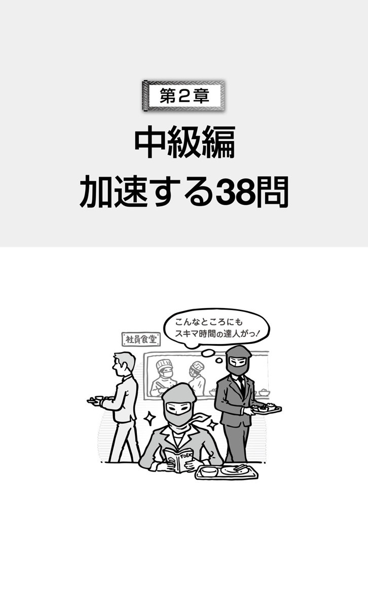
目標タイム：3分
音声ダウンロード
Questions 31-33 refer to the following itinerary.
Blockwell Tile Importers, Inc.
Prepared by Gerald Shields
Administration
Indianapolis-Bangkok travel schedule
International purchasing team
October 1:
Depart Indianapolis International Airport (IND), Flight 210, at 6:15A.M. E-tickets have already been sent by this department to the e-mail addresses of all team members. Please retain any receipts for luggage fees. These will be reimbursed after team return.
October 2:
Arrive at Bangkok International Suvarnabhumi Airport (BKK), 10:47P.M. Team will be met by prearranged car and driver and taken to Red Lotus Hotel.
October 3:
Picked up by driver at 7:00A.M. in front of hotel for transport to Bangkok: Juson Tile Manufacturers, Hokon Enterprises and River Tiles Co., for purchase negotiations with potential tile suppliers.
October 4-6:
Open schedule, depending on progress of negotiations. Hotel rooms are prepaid until October 6 and return tickets are open. Any stays beyond that day require approval of Purchasing Director James Wiley.
Return to BKK:
By shuttle bus, taxi, train or other means the team decides upon. Retain all receipts for reimbursement upon return.
31.
What has the sales team already received?
(A) E-mails from the administration department
(B) Copies of receipts that have been turned in
(C) Luggage to carry product samples
(D) Reimbursements for pre-flight expenses
32.
How will the team travel from the airport to their accommodations?
(A) By shuttle bus
(B) By taxi
(C) By private vehicle
(D) By train
33.
After which date would extending the trip require the approval of Director Wiley?
(A) October 1
(B) October 3
(C) October 5
(D) October 7
●速解ポイント！
旅程についての問題です。まず、会社名Blockwell Tile Importersから、輸入業者であること、また、その下を見ると、インディアナポリスからバンコクの旅程で、海外へ買いつけに行くチームに出されたものだと分かります。ここまでの情報を素早く読み取ったら、設問を確認してください。早速、設問に取り掛かれる問題のようですね。
31. 正解 （A）
October 1の項目に、E-tickets have already been sent by this department to the e-mail addresses of all team members.とある。E-ticketsをe-mail addressesに送ったということは、e-mailsが送られてきたことになるので、（A）が正解。
問われているのは、海外出張に行くチームが既に受け取っているものですので、これは出発時に必要なものだと推測できます。そうなると、言及されている可能性が高いのは、初めの方の日程ということになるので、October 1の項目に注目しましょう。October 1の項目2文目と、ここに書かれているthis departmentがAdministrationを指すことから、（A）が正解と確認できます。もっとも、これから資材買いつけのために海外出張するチームが受け取るものですから、一般的に考えて、選択肢（B）と（D）は妙な感じがします。
32. 正解 （C）
October 2の項目に、Team will be met by prearranged car and driver and taken to Red Lotus Hotel.とあるので、（C）By private vehicleが正解。
設問に注目してください。... from the airport to their accommodations?とあります。つまり、空港に到着した後のことを尋ねています。迷わず、到着する日の旅程を確認しましょう。private vehicleは、prearranged car and driverの言い換えです。accommodations「宿泊施設」もRed Lotus Hotelの言い換えですが、一般に、会話でもよく使いますので覚えておいてください。
33. 正解 （D）
October 4-6の項目2文目に、Hotel rooms are prepaid until October 6と書かれ、3文目にAny stays beyond that day require approval of Purchasing Director James Wiley.と続けられている。beyond that day「その日を過ぎて」のその日は、October 6であることから、（D）が正解。
これは、思わず嬉しい笑いが込み上げてくる設問ではないでしょうか？ この旅程は、October 6までの予定が書かれたもの。普通に考えて、延長と言えば、その次の日のOctober 7からとなりますね。いやいや、そんなはずがないと問題文を確認するとしても、October4-6の項目に書かれているとすぐに限定できます。出張の延長ですので（A）はあり得ないですし、（B）も予定が詰まっているのが読まなくても見てとれるほどです。
●重要語句
■ importer 名 輸入業者
■ administration 名 管理、運営
■ retain 動 〜を保持する
■ fee 名 料金
■ reimburse 動 〜を払い戻す
■ transport 名 輸送
■ purchase 名 購入、買い入れ
■ negotiation 名 交渉
■ potential 形 （将来...に）発展しそうな
■ supplier 名 供給業者、納入業者
■ approval 名 承認、賛成
■ accommodation 名 （複数形で）宿泊設備［施設］
全文訳
問題31〜33は次の旅程に関するものです。
Blockwellタイル輸入株式会社
Gerald Shields作成
管理部
インディアナポリス---バンコク旅行予定表
国際購買チーム
10月1日：
午前6時15分、航空機210便、インディアナポリス国際空港（IND）を出発。Eチケットは、この部署よりチーム全員のEメールアドレスへ既に送られています。手荷物手数料の領収書はいずれも保管しておいてください。チームが帰国した後、これらは払い戻されます。
10月2日：
午後10時47分、バンコク・スワンナプーム国際空港（BKK）に到着。チームは、手配した運転手付きの車により出迎えを受け、Red Lotusホテルへ。
10月3日：
午前7時にホテルの前で運転手による出迎え、バンコクへ。取引の見込みのあるタイル納入業者との購買交渉のため、Jusonタイル製造会社、Hokon Enterprises社、Riverタイル株式会社を訪問。
10月4−6日：
交渉の進捗状況次第で、予定なし。ホテルの部屋は10月6日まで前払いされており、帰りのチケットは日時の指定がありません。その日を超えての滞在は、購買部長James Wileyの承認が必要です。
BKKへ戻る：
シャトルバス、タクシー、電車、もしくはチームが決めるその他の手段にて。帰国に際して、払い戻しのための全ての領収書を保管しておいてください。
31.
営業チームが既に受け取っているものは何ですか。
(A) 管理部からのEメール
(B) 提出された領収書の写し
(C) 製品見本を運ぶ旅行かばん
(D) 飛行前の費用の払い戻し金
32.
チームはどのようにして空港から宿泊施設まで行きますか。
(A) シャトルバスで
(B) タクシーで
(C) 個人の車で
(D) 列車で
33.
何日以降に旅行を延長する場合に、Wiley部長の承認が必要になりますか。
(A) 10月1日
(B) 10月3日
(C) 10月5日
(D) 10月7日
知っておきたい
旅程は時系列に沿って書かれるものです。
旅程は、出発から帰りまでを時系列に沿って記したもの。何日かに及ぶ旅程なら、縦に月日の順、横には時刻の順といったような構成が一般的です。当然のことですが、パターンとして確認しましょう。飛行機での旅行であれば、飛行機の出発（departure）と到着（arrival）の記述は、旅程の最初と最後にあります。また、今回の問題にあるような、目的地（destination）到着後の空港からの移動は、基本的に飛行機到着と同日のはず。同日の段落で、飛行機到着の記述から後を探してみましょう。そうなると、出発や帰国の際に必要な物、注意しなければならないことが書いてある場所も見つけることができます。
目標タイム：3分
音声ダウンロード
Questions 34-36 refer to the following notice.
Carver Stadium
www.carverstadium.net
Ticketing and Entrance Policy
Access to the stadium is only gained through either tickets or season passes. Each ticket number or season pass applies to a specific entrance and seating section.
Visitors are reminded to sign their tickets or passes and hold on to them at all times. Tickets or passes may be required by staff both at the entrance and within the stadium to confirm seating.
A replacement for a lost ticket may be issued if a receipt or some kind of proof of purchase is submitted prior to an event. Season pass replacements may be issued through our Web site after logging in using a username and account number. Ticket refunds or exchanges are not available unless an event is cancelled by the stadium.
34.
What is the subject of the notice?
(A) Renovation of a building
(B) General admission prices
(C) Information about a facility's rules
(D) Directions on reaching a location
35.
What is indicated about the season passes?
(A) They are more expensive than ordinary tickets.
(B) They are for specific areas of the stadium.
(C) They may be purchased at certain entrances.
(D) They may be transferred to other visitors.
36.
According to the notice, when are ticket exchanges available?
(A) Prior to confirming seating arrangements
(B) If receipts are presented to managers
(C) After a request to senior security staff
(D) Upon event termination by administrators
●速解ポイント！
お知らせの問題ですので、まず問題文で、何についてのお知らせか、そして、誰から誰へ向けたものなのかを確認してください。続いて、設問を見ると、the season passesとticket exchangesが目に入ってきますね。この2つについての言及に注意しながら、問題文を読んでいきましょう。
34. 正解 （C）
一番上の見出しから、このお知らせの主題は、Carverスタジアムが出した、Ticketing and Entrance Policyと確認できる。また、第1段落で、Access to the stadium is only gained through either tickets or ... Each ticket number or season pass applies to a specific entrance and ...と述べられている。これらから、正解は（C）。
この問題は、見出しのTicketing and Entrance Policyと、第1段落を見れば、（C）Information about a facility's rulesだと分かります。第1段落が、Access to ...で始まっていることから、（D）を選ばないようにしてください。ここでは、スタジアムの入り方について述べているのであって、場所への行き方についてではありません。（A）と（B）についての言及はありません。
35. 正解 （B）
第1段落に、Each ticket number or season pass applies to a specific entrance and seating section.と書かれている。ここから判断して、（B）They are for specific areas of the stadium.が正解。
その他の選択肢を見ていきましょう。 上記の1文や第2段落Tickets or passes may be required by staff both at the entrance and within the stadium to confirm seating.から、（C）は間違いだと分かります。entranceで購入できそうにはないですね。（D）は、Visitors are reminded to sign their tickets or passes and hold on to them at all times.とありますので、駄目でしょう。（A）に関するようなチケット代金の記述はありません。
36. 正解 （D）
第3段落最後の文に、Ticket refunds or exchanges are not available unless an event is cancelled by the stadium.とある。ここから、（D）が正解であると考えられる。
ticket exchangesについては、第3段落に書かれています。この第3段落では、チケットについて2つのことが述べられていることに注意してください。1つ目が replacementについて、2つ目がticket refunds or exchangesについてです。そこを明確にして読むと、（B）は、前者replacementに関して正しいかどうかを問う選択肢であることが分かり、後者ticket exchangesに関しては、（D）の内容のことしか書かれていないことが分かります。（A）と（C）については言及されていません。
●重要語句
■ access 名 接近の権利
■ gain 動 〜を得る、手に入れる
■ apply to 〜 〜に当てはまる
■ specific 形 特定の
■ remind 動 〜に思い出させる、気付かせる
■ hold on to 〜 〜を（手放さずに）保有し続ける
■ require 動 〜を必要とする
■ replacement 名 代わりのもの［人］、代替品
■ proof 名 証拠、証拠品
■ prior to 〜 〜より前に
■ refund 名 返金、払い戻し
■ admission 名 入場料
■ transfer 動 〜を譲渡する
■ arrangement 名 配置、準備
■ termination 名 終了
全文訳
問題34〜36は次のお知らせに関するものです。
Carverスタジアム
www.carverstadium.net
チケット販売と入場についての方針
スタジアムに入場していただくには、チケットまたはシーズンパスが必要です。それぞれのチケット番号またはシーズンパスは、特定の入り口と座席ブロックに対応しています。
入場者の方々は、忘れずにチケットやパスにサインをし、常に手放さないでください。チケットやパスは、入り口とスタジアム内の両方で、座席確認のためスタッフが提示をお願いする場合があります。
紛失したチケットに関しては、領収書あるいは何か購入を証明するものを催しよりも前にご提示いただければ、代わりのチケットが発行されます。シーズンパスの再発行は、ユーザー名とアカウント番号を使ってログインすれば、当スタジアムのウェブサイトで行うことができます。スタジアム側が催しを中止した場合を除いて、チケットの払い戻しや交換はできません。
34.
このお知らせの主題は何ですか。
(A) 建物の改装
(B) 一般入場料金
(C) 施設の規則に関する情報
(D) ある場所にたどり着くための道順
35.
シーズンパスについて、どのようなことが示されていますか。
(A) 普通のチケットよりも値段が高い。
(B) スタジアムの特定の場所に対するものである。
(C) 特定の入り口で購入できる。
(D) 他の入場者に譲ってもよい。
36.
お知らせによると、チケットの交換はどのようなときに可能ですか。
(A) 座席の配置を確認する前
(B) 領収書を責任者に提出した場合
(C) 上役の警備員に依頼した後
(D) 運営者が催しを中止した場合
知っておきたい
「文書の種類」の確認から始めましょう。
問題に取り組むとき、どこから見ますか？ タイトル？ いきなり問題文は駄目ですよ！ そこまでに情報がいっぱいあるのにもったいないです。一番上の文書の種類を教えてくれている問題指示文から見ましょう。今回の問題なら、"Questions 34-36 refer to the following notice."です。お知らせ問題ですね。「何を知らせているのだろう」と、読む前に頭を「お知らせモード」に切り替えてください。そうすれば、今回の問題ならTicketing and Entrance Policyに目を通した段階で、問題文は「〜できます／〜できません」と、ある方針について一方的に知らせてきている文章だと推測できます。このように、文書の種類に応じた「読み方モード」を設定すると、より早く正確に情報が得られます。
目標タイム：3分
音声ダウンロード
Questions 37-39 refer to the following letter.
Chung Tien Steel Co.
62 Longzhou Road
Guangdong, 528318
People's Republic of China
28 November
Brenda Hawkins, CEO
Winkor Iron and Coal, Inc.
634 River Road
McKees Rocks, PA 15136
USA
Dear Ms. Hawkins,
On behalf of the board of directors, it's a pleasure to inform you that we have agreed to accept your latest merger proposal dated 24 November. After a final review by our respective legal teams, we suggest a signing of related documents by our boards during the first week of December, preferably 5 December or 6 December, at our offices.
As has been discussed, the merger documents would then be submitted to the regulatory authorities both in your country and ours. We anticipate their approval will be given within 90 days.
We look forward to combining our operations for the benefit of our firms, our customers, and our shareholders.
Yours sincerely,
Tong Wei Dang
President and Chief Executive Officer
37.
Why was the letter written?
(A) To express acceptance of a business plan
(B) To propose improvements to a department
(C) To submit information on business performance
(D) To request feedback on an offer
38.
What is indicated about the legal teams?
(A) They have signed related documents.
(B) They have proposed a merger delay.
(C) The merger process is not finished.
(D) They may meet again in China.
39.
What must the companies do?
(A) Get approval from government authorities
(B) Talk with shareholders about the merger
(C) Discuss a proposal
(D) Inform their customers of their decision
●速解ポイント！
手紙の問題であり、上部に2つの会社名と住所があることから、ビジネスレターだと特定できます。宛先と送り主も確認してください。この手紙では、宛先の人物の肩書きはCEO、送り主は社長兼CEO。これは、両会社にとって重大な手紙ではないかということが推測できます。
37. 正解 （A）
第1段落冒頭に、On behalf of the board of directors, it's a pleasure to inform you that we have agreed to accept your latest merger proposal ...とあり、合併案の受け入れを伝えているので、（A）が正解。
この設問は、手紙が書かれた理由、つまり手紙の目的について尋ねています。ビジネスレターの目的は、普通、一番初めに書かれますので、第1段落の冒頭を見ましょう。選択肢では、問題文中の語が、inform→express、accept→acceptance、your latest merger proposal→a business planのように、それぞれ言い換えられています。このように、選択肢では言い換えがよく使われます。
38. 正解 （C）
第1段落2文目に、After a final review by our respective legal teams, we suggest a signing of related documents by our boards ...とある。これは、a final review「最終審査」が、まだ終わっていないことを意味するので、（C）が正解。
legal teams は、第1段落2文目に見つけることができます。ただし、この設問は、上記の1文が何を示しているのかを考えなければなりません。もし、それを読み取ることが難しければ、消去法で解きましょう。同じ1文から、（A）彼らが関連文書に署名するのではない、（B）彼らが合併の延期を提案しているとは考えられない、（D）彼らはもとから中国にいるはずではないか、ということが分かるので、（C）以外は消去できます。
39. 正解 （A）
第2段落に、... the merger documents would then be submitted to the regulatory authorities both in your country and ours. We anticipate their approval will be given ...と書かれていることから、（A）が正解。
第1段落には、合併の提案を受け入れるということが書かれていたので、合併の公的手続きに関しては、第2段落に書かれていると考えられます。問題文中には、regulatory authorities「規制当局」に合併契約書を提出して、そこから承認を得るということが書かれていますが、この機関は、government authorities「政府当局」のことですね。
●重要語句
■ on behalf of 〜 〜を代表して、〜に代わって
■ board 名 重役会、重役
■ merger 名 合併、合同
■ proposal 名 提案、申し込み
■ respective 形 それぞれの
■ preferably 副 なるべくなら、できることなら
■ regulatory 形 規定する
■ authority 名 （the authoritiesで）当局
■ anticipate 動 〜を予想する
■ combine 動 〜を結び付ける
■ benefit 名 利益、利得
■ shareholder 名 株主
全文訳
問題37〜39は次の手紙に関するものです。
Chung Tien鉄鋼会社
Longzhou通り62番地
広東省、528318
中華人民共和国
11月28日
最高経営責任者Brenda Hawkins様
Winkor Iron and Coal株式会社
River通り634番地
McKees Rocks、ペンシルバニア州 15136
アメリカ合衆国
Hawkins様
理事会を代表し、11月24日付の最新合併案の受諾に同意したことを喜んでご報告いたします。当社の各法律関係担当チームによる最終審査の後、12月の第1週、できれば12月5日か12月6日に、当社のオフィスにて、理事会による関連文書への署名をご提案いたします。
検討されたように、合併契約書は、その後、双方の国の規制当局に提出することになります。90日以内に承認を得られると見込んでおります。
双方の会社、顧客、そして株主の利益のために、事業を合併することを楽しみにしております。
敬具
Tong Wei Dang
社長兼最高経営責任者
37.
この手紙はなぜ書かれましたか。
(A) ビジネス上の計画の受諾を表明するため
(B) ある部署に改善を提案するため
(C) 営業実績に関する情報を提出するため
(D) 提案に関しての意見を求めるため
38.
法律担当チームについて、どのようなことが示されていますか。
(A) 関連文書に署名をした。
(B) 合併を遅らせるよう提案した。
(C) 合併手続きはまだ終わっていない。
(D) 中国で再び会うかもしれない。
39.
双方の会社は何をしなければなりませんか。
(A) 政府当局から承認を得る
(B) 合併について株主と話す
(C) 提案について議論する
(D) 彼らの決定を顧客に知らせる
知っておきたい
ビジネスレターの構造を知りましょう。
ビジネスレター問題を速く正確に解くために、その構造を知っておきましょう。用紙の上から、書かれる順番は次の通りです。（1） 差出人の会社名、住所、電話番号など（Letterhead）。（2） 日付（Date）。（3） 受取人の氏名と肩書き。その下に住所（Recipient's Address）。（4） Dear Ms. Hawkins など（Salutation）。（5） 手紙本文（Body）。（6） Yours sincerely など（Closing）。（7） 差出人のサイン（Signature）。（8） 差出人の名前と肩書き（Sender's Name and Position）。手紙本文は通例、用件が冒頭部分にあり、最後には結びの文がきます。この構造は、急いで読んでもすぐに内容が分かるためのもの。この構造を知って、いち早く正解を見つけましょう。
目標タイム：3分
音声ダウンロード
Questions 40-42 refer to the following article.
SEATTLE, February 9─When the ZoZ-Phone 6 entered the mobile phone market a year ago this month, it rapidly became a worldwide best-seller. Its manufacturer, Seoul-based KSON Corporation, sold over 80 million units within six weeks. Since then, competitors have released comparable phones, some of which have gained significant market share.
Considering this, it seems unclear whether KSON Corporation could repeat or improve on its sales with later models, such as the ZoZ-Phone 7, which will be available from April 1. However, the company reports 10 million unit preorders─indicating substantial consumer interest. Mi-ae Jung, in a Web news interview, stated that as CEO of the firm she had great confidence in the new phone. She claimed, "It's better than the ZoZ-Phone 6 and does things other phones simply cannot do."
40.
According to the article, what happened in February of last year?
(A) A Seattle-based store was opened.
(B) A new model was launched.
(C) A competitor lost market share.
(D) A best-selling phone was recalled.
41.
What is the purpose of the article?
(A) Comparing competing products
(B) Reviewing sales performance of a company
(C) Suggesting a leadership change
(D) Advising on technical developments
42.
Who most likely is Ms. Jung?
(A) A Web developer
(B) A news analyst
(C) A corporate executive
(D) A mobile phone salesperson
●速解ポイント！
記事の問題ですが、タイトルは載っていません。この問題文は段落が2つしかありませんので、各段落の冒頭部分をチェックして、問題文の全体像をつかみましょう。
40. 正解 （B）
第1段落冒頭に、When the ZoZ-Phone 6 entered the mobile phone market a year ago this month ...と書かれている。記事の日付がFebruary 9となっているので、上記は昨年の2月のことと分かる。したがって、（B）A new model was launched.と内容が一致する。
この問題は、第1段落冒頭を読めばすぐに正解が見つかりますが、「昨年の2月のこと」はどこに書かれていると考えられますか？ 各段落の冒頭を読む段階で、この問題のある特徴に気付くかと思います。第1段落は、1年前に市場参入したZoZ-Phone 6について述べていて、時制は過去形。第2段落は、Considering this ...で始まり、新型モデルに関して意見が述べられています。つまり、過去から現在までを見て、未来について考えるという文章構成です。この構成から考えると、「昨年の2月のこと」が書かれている可能性が高いのは、第1段落となります。
41. 正解 （B）
第1段落に、it（＝ZoZ-Phone 6） rapidly became a worldwide best-sellerと書かれている。続いて、第2段落は、Considering this, it seems unclear whether KSON Corporation could repeat or improve on its sales with later models ...で始まり、2文目に、However, the company reports 10 million unit preordersと書かれている。ここから、この問題文の主要な構成部分が、sales performanceと分かるので、正解は（B）となる。
記事では段落の冒頭部分を読みましょう！ 段落の言いたいことは冒頭部分にあり、それらを見ると主題が分かります。例えば、新聞の長い文章の記事などは、読むのが大変で、主題が分からなくなってきたりしますね。そんなとき、まず各段落の冒頭を読むと、記事内容をおおまかに把握することができます。同様にして、この問題文の目的も見つけてください。
42. 正解 （C）
第2段落3文目にMi-ae Jung, in a Web news interview, stated that as CEO of the firm ...とあり、彼女がCEOであることが分かる。
「名前をキーワードにして、問題文中を検索し、名前の近くで肩書きを探す」というおなじみのやり方で解けます。CEOは、Chief Executive Officerの略で、「最高経営責任者」という意味です。最近、日本のテレビニュースでも、このCEOという言葉を日本語に訳さずに英語のまま使っていました。かなり、日本語でも浸透してきたのでしょうか？
●重要語句
■ enter 動 〜に参入する
■ market 名 市場、販路
■ manufacturer 名 製造業者、製造会社
■ competitor 名 競争相手
■ release 動 〜を発売する
■ comparable 形 似通った、同様の
■ significant 形 かなりの、相当の
■ indicate 動 〜を示す
■ substantial 形 （数量などが）かなりの
■ confidence 名 自信
■ launch 動 〜を売り出す
■ recall 動 （欠陥商品など）を回収する、リコールする
■ compete 動 競争する
■ analyst 名 分析者、解説者
全文訳
問題40〜42は次の記事に関するものです。
シアトル、2月9日─ZoZ-Phone 6が1年前の今月に携帯電話市場に参入したとき、すぐに世界的ベストセラーとなった。その製造会社であり、ソウルに本拠地を置くKSON株式会社は、6週間以内に8,000万台以上を販売した。それ以来、類似の電話を競争相手が売り出しており、その中には、かなりの市場占有率を得ているものもある。
このことを考えると、4月1日から入手できるようになるZoZ-Phone 7のような新型モデルで、KSON株式会社が同様に売り上げるか、さらに売り上げを伸ばすかに関しては不確かであるように思われる。しかしながら、1,000万台の先行予約を会社は報告しており、これはかなりの数の消費者の興味を示すものである。ウェブニュースインタビューの中で、Mi-ae Jung氏は、会社の最高経営責任者として、新しい電話に大きな自信を持っていると述べた。彼女は、「ZoZ-Phone 6よりも優れていて、他の電話が全くできないことができます」と主張した。
40.
記事によると、去年の2月に何が起こりましたか。
(A) シアトルを拠点とする店が開店した。
(B) 新しいモデルが発売された。
(C) 競争相手が市場占有率を失った。
(D) 売り上げ最上位の電話がリコールされた。
41.
この記事の目的は何ですか。
(A) 競合している製品を比較すること
(B) ある会社の売り上げ実績を検討すること
(C) 首脳陣の交代を提案すること
(D) 技術開発について助言をすること
42.
Jungさんは誰だと思われますか。
(A) ウェブ開発者
(B) ニュース分析者
(C) 会社の重役
(D) 携帯電話の販売員
知っておきたい
スキミング（skimming）をしてみましょう。
今回の問題のようにタイトルがないものを読むとき、また、できるだけ早く文章の要点を理解したいときには、スキミングをしてみましょう。スキミングとは、重要なところだけをピックアップする「拾い読み」です。ポイントは、重要なところ─段落の冒頭部分、固有名詞、日付、数字、繰り返し出てくる単語など─だけを拾うこと。拾い過ぎは駄目ですよ。細かいところは省いて、できるだけすばやく行うことです。急いでいるときの会話と同じです。「要点だけを知りたい！」と思っているときに、相手が例え話や詳しい説明を始めると、「それはいらない！」と拒絶したくなるでしょう。スキミングは、このように拒絶しながらやってください。
目標タイム：3分
音声ダウンロード
Questions 43-45 refer to the following instructions.
Care and Maintenance of the WhiteGlo electric toothbrush
Manufactured by Oral Health, Inc.

Assembly:
The toothbrush handle and brush components are packaged separately. Remove both from the package and then attach the brush to the handle.
Charging:
WhiteGlo does not require batteries. Plug the electrical charger into any electrical outlet. When not in use, set the toothbrush on the charger. It will take approximately 30 minutes for the toothbrush to become fully charged.
Maintenance:
Replace brush sections every 90 days. These can be purchased through our Web site or many retail locations.
Tips on Brushing:
Please see theGuide to Healthy Teeth booklet, which is also packaged with this unit.
43.
What do the instructions explain?
(A) Where to purchase an appliance
(B) When to activate a product warranty
(C) Who to contact for item assistance
(D) How to use the device
44.
What is included with the WhiteGlo?
(A) Batteries for the toothbrush
(B) Replacements for specific components
(C) Recharging equipment
(D) Service and repair center maps
45.
Where can people get information on how to take care of their teeth?
(A) From a Web site
(B) From a brochure
(C) From a dentist
(D) From the manufacturer
●速解ポイント！
説明書の問題。ここでは、電動歯ブラシに関する説明が項目ごとにまとめられています。一番上のCare and Maintenance of the WhiteGlo electric toothbrushというタイトルからおおまかに内容を把握したら、すぐに設問を読んでやっていきましょう。
43. 正解 （D）
この説明書の内容は、一番上に書かれたCare and Maintenance of the WhiteGlo electric toothbrushから分かる。したがって、（D）How to use the deviceが正解。
説明項目からも正解が分かります。上から順に目を通すと、Assembly:「組み立て」、Charging:「充電」、Maintenance:「メンテナンス」とあるので、これらから何が分かるかを考えてみてください。この設問は、文章を読まずに、タイトルと項目を見るだけで正解を見つけることができます。
44. 正解 （C）
Charging:の項目に、WhiteGlo does not require batteries. Plug the electrical charger into any electrical outlet.と書かれている。さらに、chargerに関する説明が最後まで続く。ここから、（C）Recharging equipmentが正解となる。
それぞれの情報がどの項目に載っているかを考え、探しましょう。設問の選択肢（A）Batteries ...と（C）Recharging ...は、そのキーワードから、Charging:の項目に情報が書かれていると判断できます。また、選択肢（B）Replacements ...と（D）Service and repair ...は、Maintenance:の項目と特定できます。この設問の場合、Charging:の項目で正解が分かりますが、ちなみに、Maintenance:では、replacementの購入の仕方が載っているだけです。また、（D）についての言及はありません。
45. 正解 （B）
Tips on Brushing:の項目を見ると、Please see theGuide to Healthy Teeth booklet ...と書かれている。このことから判断して、正解は（B）From a brochure。
この設問も、"... information on how to take care of their teeth"についてどの項目に書かれているかを考えればよいわけです。そして、このキーワードをよく見ると、まさに最後の項目Tips on Brushing:の言い換えのようですね。ここで言うtipsは、「助言、秘訣」の意味。問題文中のPlease see theGuide to Healthy Teeth bookletのbookletは、（B）でbrochureに言い換えられています。
●重要語句
■ assembly 名 組み立て
■ component 名 構成部品
■ replace 動 〜を取り替える
■ retail 名 小売店
■ tip 名 助言、秘訣
■ booklet 名 小冊子、パンフレット
■ appliance 名 器具
■ activate 動 〜を作動させる
■ warranty 名 保証、保証書
■ device 名 装置、用具
■ recharge 動 〜に再充電する
■ brochure 名 パンフレット、小冊子
全文訳
問題43〜45は次の使用説明書に関するものです。
WhiteGlo電動歯ブラシの取扱いとメンテナンス
Oral Health株式会社製造
組み立て：
歯ブラシの柄の部分とブラシの部分は、別々に包装されています。それぞれを包装から取り出し、ブラシを柄に取り付けてください。
充電：
WhiteGloは電池を必要としません。充電器を電気コンセントに差し込んでください。使用していないときは、歯ブラシを充電器にセットしてください。歯ブラシが完全に充電されるまでに約30分かかります。
メンテナンス：
ブラシの部分は90日ごとに交換してください。これらは、当社のウェブサイト上でも、多くの小売店でも購入することができます。
歯磨きのコツ：
この器具に同梱されているパンフレット『健康な歯への手引』をご覧ください。
43.
この使用説明書は何を説明していますか。
(A) どこで器具を購入すればよいか
(B) いつ製品の保証を有効にするか
(C) 商品への助言を求めるには誰に連絡すればよいか
(D) どのようにしてその器具を使うのか
44.
WhiteGloと一緒に何が入っていますか。
(A) 歯ブラシの電池
(B) 特定の部品の交換品
(C) 充電用の機器
(D) サービス・修理センターの地図
45.
歯の手入れの仕方についての情報は、どこで入手できますか。
(A) ウェブサイトから
(B) パンフレットから
(C) 歯科医から
(D) 製造会社から
知っておきたい
箇条書き問題は、設問から始めましょう。
設問を解くときに困るのが、問われている内容が問題文のどこに書かれているかを探さなければならないことです。ところが箇条書き問題、これは項目に分けられているので、どこでその情報が得られるか一目瞭然。「ここに書いてありますよ」と項目タイトルという「看板」が掲げられているようなものです。せっかくですので、問題文から読み始めるのではなく、設問から読んでいきましょう。正解を見つけるための情報はどの「看板」と関係があるかを判断し、「その看板が掛けられたお部屋」に探しに行けばよいわけです。また設問には、「この文書は何についての説明ですか？」というようなものもありますが、これも、全ての「看板」をスキミングすれば、正解が分かるはずです。ありがたいですね。
目標タイム：3分
音声ダウンロード
Questions 46-48 refer to the following Web page.
www.centervilleflowerfestival.org
Centerville Flower Festival
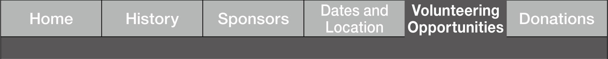
The Centerville Flower Festival is entirely reliant on the voluntary help of good citizens who organize, work in and otherwise aid in setting up this event. If you would like to help, please fill out the information below. Please be sure to fill out all blanks.
Name:
Hector Conseco
Contact e-mail:
hsconseco@flipquickmail.net
Home or mobile phone:
555-9031
Days available (please check all that apply)
| April 5 | |
| April 6 | |
| April 7 | |
| April 8 |
Areas that you are interested in helping with
| Information giving | |
| Guided tours* | |
| Food service | |
| Ticket-taking | |
| Safety |
*Requires extensive knowledge of the festival and flower-related sciences.
Comments:
I'm only available from 6:00A.M.-1:00P.M. After that, I have to go to work. Please let me know if I could work for only those hours. If possible, I'd be happy to do so.
46.
What is suggested about Mr. Conseco?
(A) He has volunteered at numerous other events.
(B) He has extensive knowledge of flower-related sciences.
(C) He has offered to assist in providing meals.
(D) He has planned to give out assistance as a safety officer.
47.
What is indicated about the festival?
(A) It depends on people who work for free.
(B) It sponsors local education programs.
(C) It recruits small shop owners.
(D) It provides free admission.
48.
What is one concern Mr. Conseco has about the flower festival?
(A) Whether his earlier comments have been read
(B) If he can volunteer for only part of a day
(C) How he can get tickets in advance
(D) When he should show up at the event
●速解ポイント！
まずは、問題文がCenterville Flower Festivalという催しの Web pageで、これはその中のVolunteering Opportunitiesに関する掲示であることを把握しましょう。続いて、問題文中の各項目の入力欄やチェック欄などから、これが申し込みフォームであることが分かりますので、設問から見ていきましょう。
46. 正解 （C）
フォーム中程のAreas that you are interested in helping withの項目で、Mr. Consecoは、Food serviceを選んでいる。したがって、... assist in providing mealsとある（C）が正解。
まず、この申し込みフォームの記入者が、Hector Consecoであることを見つけてください。次にフォームの構成に注目。Mr. Consecoについて書かれていることは、上から、連絡先、可能な日、興味のある分野、コメントだけです。したがって、この設問は、上記の項目をチェックした方が早そうです。彼がお手伝いを希望している分野はFood serviceと拾うだけで、正解（C）と一致します。
47. 正解 （A）
最初の段落の冒頭で、The Centerville Flower Festival is entirely reliant on the voluntary help of good citizens ...と書かれているので、（A）が正解。
Festival自体の言及は、もちろん、最初の段落ですね。説明もなく、いきなりvolunteerの申し込みフォームだけというのは、普通ないでしょう。そして、その段落の中でも重要なのは冒頭部分。そこを読むと、（A）が正解と分かります。それだけでなく、この段落の場合、短いので、（B）、（C）、（D）の言及がないこともすぐに分かります。問題文のis entirely reliant onと the voluntary help of good citizensは、選択肢（A）では、それぞれ、depends onとpeople who work for freeに言い換えられています。
48. 正解 （B）
Comments欄に、I'm only available from 6:00 A.M.-1:00 P.M.とあり、続けてPlease let me know if I could work for only those hours.と書かれている。この2つの内容から考えて、（B）が正解。
Mr. Consecoの心配事は、どこで見つけましょう？ 「心配事は何ですか？」という質問項目はないので、Commentsに書かれているはずです。正解の手掛かりを探すときは、まずは、どこに書かれているか落ち着いて考え、場所が限定できれば「ダッシュ」する、というようにしていきましょう。場所が分からずに「ダッシュ」すると、時間がかかって、気も焦り疲れてしまいます。「落ち着いて考えて、ダッシュ」です！
●重要語句
■ location 名 場所、所在
■ donation 名 寄付
■ be reliant on 〜 〜に頼っている
■ entirely 副 完全に、すっかり
■ voluntary 形 無償の、自発的な
■ citizen 名 市民、住民、国民
■ organize 動 〜を準備［計画］する
■ fill out 〜 〜に記入する
■ extensive 形 広い、徹底的な
■ numerous 形 非常に数の多い
■ concern 名 心配事、心配
全文訳
問題46〜48は次のウェブページに関するものです。
www.centervilleflowerfestival.org
Centervilleフラワーフェスティバル
Centervilleフラワーフェスティバルは、このイベントの準備、イベントでの労働、そして他の面で、開催にあたっての援助をしてくださる心優しい市民の皆さまの無償の手助けに全面的に頼っています。もし、お手伝いをお考えくださるのならば、下の情報を入力してください。必ず全ての空欄に記入してくださるようお願いします。
氏名：Hector Conseco
連絡先Eメール：hsconseco@flipquickmail.net
自宅もしくは携帯電話：555-9031
可能な日（当てはまるもの全てに印を付けてください）
| 4月5日 | |
| 4月6日 | |
| 4月7日 | |
| 4月8日 |
お手伝いをするのにご興味のある分野
| 情報提供 | |
| ガイドツアー＊ | |
| 食事の給仕 | |
| チケットの受け取り | |
| 安全面 |
＊当フェスティバルと花に関連する自然科学の広い知識が必要とされます。
コメント：
私は、午前6時から午後1時までのみ可能です。その後は、仕事に行かなければなりません。この時間帯のみ働くということができるのかどうかお知らせください。もしも可能であるならば、喜んでそうさせていただきます。
46.
Conseco氏について、どのようなことが分かりますか。
(A) 彼は他の多数のイベントでボランティアをしたことがある。
(B) 彼は花に関連する自然科学の広い知識がある。
(C) 彼は食事を出すお手伝いをすると申し出ている。
(D) 彼は安全委員として手助けをすることを計画している。
47.
フェスティバルについて、どのようなことが示されていますか。
(A) 無償で働く人々に依存している。
(B) 地元の教育プログラムの後援をしている。
(C) 小さなお店の経営者を勧誘している。
(D) 入場料無料としている。
48.
フラワーフェスティバルに関して、Conseco氏が抱いているある心配事とは何ですか。
(A) 彼の以前のコメントは既に読まれたのかどうか
(B) 1日のうちの一部だけボランティアができるのかどうか
(C) どのようにしてチケットを事前に手に入れることができるのか
(D) イベントにいつ現れるべきか
知っておきたい
意見や質問はコメント欄に書かれています。
Web pageでの質問に答えた経験はありますか？ Web pageに限りません。何か、アンケート（questionnaire）に回答するとき、特別な項目が目につきます。それはコメント欄（Comments）、いわゆる「その他、ご意見、ご感想をお書きください」という項目です。選択肢だと、質問に対する答えがある程度限定されてしまいます。また「良い・普通・悪い」のようなものでは、具体的なことや個人的なことを知るのに限界があります。ということは、アンケートにおいて、かなり個人的な意見や質問はコメント欄に書かれているということです。これは重要ですね。設問の解答を見つけるときに思い出してください。
目標タイム：3分
音声ダウンロード
Questions 49-51 refer to the following billing statement.
MJ Business Services
16 Roosevelt Road
Chicago, IL
Customer Statement
Statement generated on: August 1
Customer: Akoion Trading
Account Number: 283594
Service Address: 3101 State Street
Chicago, IL
Current Charges:
Daily surface cleaning, including desks, lounge and restrooms...$950
Daily carpet vacuuming
Weekly carpet deep cleaning...$870
Weekly dusting, including electrical appliances...$100
Dates:
July 1 - July 31
Late Fees: $0
Total Amount Due: $1,920
Due Date: August 10
Please go to our Web site to make payments. Avoid late fees and save time by signing up for our automatic bill payment system.
49.
For what service was the bill issued?
(A) Utilities provision
(B) Office renovation
(C) Stationery items
(D) Cleaning work
50.
When is the final day of being charged for?
(A) July 1
(B) July 31
(C) August 1
(D) August 10
51.
What is indicated on the bill?
(A) Additional furniture has been delivered.
(B) Payment should be made on the Internet.
(C) A late fee was paid by the customer in a prior month.
(D) The customer has signed up for automatic bill payment.
●速解ポイント！
請求明細書の問題であることは、問題文を見なくても指示文の"... refer to the following billing statement"から明らかです。簡潔な箇条書きにされた問題ですので、設問を読んでから早速やっていきましょう。
49. 正解 （D）
最初の項目Current Charges:を確認する。料金を請求されている対象のサービスは、Daily surface cleaning, including ...、Weekly carpet deep cleaning、 Weekly dusting, including ...なので、（D）Cleaning workが正解。
これは、上述したCurrent Charges:のところで、cleaning、vacuuming、dustingなどの語を拾えれば、正解が分かる設問です。請求書だからといって、読まずに（A）を選んではいけません。また、desksやelectrical appliancesという語が目に入って、「事務所→事務用品」となって（C）を選ばないようにも気を付けましょう。箇条書きでシンプルな問題文ですが、情報はしっかりと読み取ることが大切です。
50. 正解 （B）
2つ目の項目にDates: July 1 - July 31とある。これは、請求の対象となるサービスが行われた期間を表すので、最終日がJuly 31だと分かり、（B）が正解。
問題文中で日付を含む項目を探すと、Statement generated on: August 1、Dates: July 1 - July 31、Due Date: August 10の3つが見つかります。1つ目は「明細書発行日」、3つ目は「支払い期日」の意味ですので、正解は 2 つ目の最終日と考えればよいですね。仮に、1つ目と3つ目の意味が分からなくても、設問のthe final dayから、サービスを受けたのが1日だけではなかったことが分かりますので、そこから正解を考えてください。ただし、設問の意味を取り違えないように注意が必要です。
51. 正解 （B）
請求明細書の最後に、小さい文字でPlease go to our Web site to make payments.と書かれている。したがって、この内容と一致するのは（B）。
（B）以外の選択肢を見ていきましょう。（A）追加の家具が運ばれたということは問題文中からは分かりません。唯一、desksという単語が見つかりますが、これは、清掃をしてもらった場所の話です。（C）Late Fees: $0と問題文中に書かれているだけで、前の月のlate feeや支払いについての言及はありません。（D）最後に書かれた1文、Avoid late fees and save time by signing up for our automatic bill payment system.から、この顧客はまだ自動料金支払いシステムに登録していないことが分かります。
●重要語句
■ billing 名 請求書（作成）
■ statement 名 明細書
■ current 形 現在の、現時点の
■ vacuum 動 電気掃除機で掃除する
■ due 形 支払われるべき 名 当然支払うべき料金
■ make payment 支払いをする
■ avoid 動 〜を避ける、防止する
■ sign up for 〜 〜に登録する
■ utility 名 （電気・ガスなどの）公共事業、公共施設
■ provision 名 供給
■ renovation 名 改装、修理
全文訳
問題49〜51は次の請求明細書に関するものです。
MJビジネスサービス
Roosevelt通り16番地
シカゴ、イリノイ州
お客様明細書
明細書発行日：8月1日
お客様：Akoion貿易会社
アカウントナンバー：283594
営業所住所：イリノイ州 シカゴ State通り3101番地
現在のご請求金額：
デスク、ラウンジ、お手洗いを含む毎日の簡単な清掃...950ドル
毎日のカーペットの掃除機かけ
週1回のカーペットの入念な清掃...870ドル
電気器具を含む、週1回の掃き掃除...100ドル
期間：7月1日─7月31日
遅延料金：0ドル
お支払い合計金額：1,920ドル
お支払い期日：8月10日
当社ウェブサイトにアクセスしてお支払いください。自動料金支払いシステムに登録することで、遅延料金を避け、時間を節約しましょう。
49.
どのサービスに対して、請求書が発行されましたか。
(A) 電気・ガス・水道などの供給
(B) オフィスの改装
(C) 文房具
(D) 清掃の仕事
50.
請求の対象の最終日はいつですか。
(A) 7月1日
(B) 7月31日
(C) 8月1日
(D) 8月10日
51.
請求書にはどのようなことが示されていますか。
(A) 追加の家具が配送された。
(B) 支払いはインターネット上でされるべきである。
(C) 以前のある月に、顧客によって遅延料金が支払われた。
(D) 顧客は、自動料金支払いに登録している。
知っておきたい
「料金」の使い分けを知りましょう。
日本語で言ういわゆる「料金」は、英語ではしっかりと使い分けます。いくつか確認してみましょう。（1） charge:サービスなどに対して支払われる料金。（例） an extra charge「別料金」；free of charge「無料で」、（2） fee:専門職のサービスに対して支払われる料金。（例） a tuition fee「授業料」；a lawyer's fee「弁護料」、（3） rate:単位や基準によって定められた料金。（例） an hourly rate「1時間当たりの料金」；foreign exchange rate 「外国為替レート」、（4） fare:乗り物の料金。（例） a rail ［米 railroad,英 railway］ fare「鉄道料金」；an airline fare「航空料金」、などです。これらを知って、「料金」問題に強くなりましょう。
目標タイム：3分
音声ダウンロード
Questions 52-54 refer to the following e-mail.
| From: | Arnold Innes |
| To: | All Directors |
| Subject: | Re: August 17 Conference Call |
Hi,
I want to provide some feedback on our last conference call. It was beneficial that the directors of all the major distribution centers were involved. Each of you had some unique input on issues from shipping delays to inventory management. Winona Zuma had some particularly useful tips on using automation.
I've attached a summary of that last conference, covering its main points, along with my own analyses. I've also included a draft agenda for our next in-person meeting. As has been already posted, I'll be leading it in Cape Town on September 7. If anyone has some suggestions for additions, they should e-mail me by August 21. I'm going to prepare a final agenda no later than September 1.
Thanks,
Arnold Innes
52.
Why was the e-mail sent to the directors?
(A) To discuss some open positions
(B) To announce the opening of a facility
(C) To submit a market forecast
(D) To review an earlier discussion
53.
What has NOT been attached to the e-mail?
(A) A personnel list
(B) A set of analyses
(C) A meeting summary
(D) An agenda draft
54.
Who most likely is Mr. Innes?
(A) A personal assistant
(B) A warehouse worker
(C) A company executive
(D) A financial director
●速解ポイント！
Eメール問題は、始めに、送信者、宛先、件名を確認しましょう。この問題の場合、設問は全てシンプルなもので、選択肢も複雑なものではありません。テンポ良く解くことのできる問題だと気付きましょう。
52. 正解 （D）
第1段落冒頭で、I want to provide some feedback on our last conference call.と書かれているので、正解は（D）。
これはEメールが所長らに送られた理由を聞いている設問です。Eメールを送る理由や目的などは、最初に書かれているので、正解を第1段落の冒頭部分から見つけましょう。また、この問題の場合、面白いところから正解がすぐに分かります。件名にRe: August 17 Conference Callとあることに注目してください。返信で、August 17 Conference Callが再び主題となっています。それを踏まえて選択肢を見ると、このことに直接結び付くものは（D）となります。ただし、実際生活では、Eメールの内容と全然関係のない件名で返送してくることが多々あります。TOEICでも、この「現実」を踏襲し始めるかもしれませんので、これは時間がないときの窮地脱出法としてのみ活用してください。
53. 正解 （A）
第2段落冒頭に、I've attacheda summary of that last conference, covering its main points, along withmy own analyses. I've also includeda draft agenda for our next in-person meeting.と書かれている。したがって、（A）A personnel listだけが、添付したものとして挙げられていない。
I've attached ...で第2段落が始まるので、正解はこの段落にあると分かります。また、この設問の選択肢はほとんど言い換えられていないので、本文中にanalyses, summary, agenda, draftの語をすぐに見つけることができます。資料の添付を知らせる表現（I've attached ... 「...を添付しております」、I've also included ... 「...も含まれております」、along with ... 「...と一緒に」）は、Eメールの問題でよく使われるので覚えておきましょう。
54. 正解 （C）
第1段落2文目で、It was beneficial that the directors of all the major distribution centers were involved.とあり、この電話会議が主要センターの所長を集めて行われたものであったことが分かる。また、第2段落3文目As has been already posted, I'll be leading it in Cape Town ...では、Mr. Innesが、会議の議長を務める地位の人物であることが読み取れる。
実は、これは、問題文中を情報検索してポイントをつかむだけで答えがすぐに分かってしまう問題です。まず、Mr. Innesですが、これはヘッダー部分の最初に書かれており、Eメールの送信者です。宛先は、All Directorsで、電話会議に関するEメールですが、よく見てください。書き始めの挨拶が、Hiです。（A）や（B）からのEメールで、"Hi"はないでしょう。おまけに、電話会議についての意見も述べているので、directorよりもポジションが上の人でないと問題です。
●重要語句
■ feedback 名 意見、感想
■ beneficial 形 有益な
■ distribution 名 流通
■ involve 動 （be 〜 dで）参加する
■ input 名 情報、考え
■ shipping 名 運送、輸送
■ inventory 名 在庫品
■ tip 名 情報、アドバイス
■ draft 名 草案、下書き
■ addition 名 追加
■ facility 名 施設
■ forecast 名 予測、予想
全文訳
問題52〜54は次のEメールに関するものです。
送信者：Arnold Innes
宛先：所長各位
件名：Re：8月17日の電話会議
こんにちは。
前回の電話会議に関する意見を述べさせていただきます。全ての主要流通センターの所長が参加したことは有益でした。皆さんそれぞれが、運送の遅延から在庫品管理にいたるまでの問題について、独自の意見をお持ちでした。Winona Zumaさんは、オートメーションの使用について特に役立つアドバイスをしてくれました。
私自身の分析を併せて、要点を網羅した前回の会議の要約を添付しました。次回の直接会議のための議題案も含まれております。既に案内したとおり、9月7日、ケープタウンで、私がその会議の指揮をとることになっています。追加の提案をお持ちの方がいらっしゃいましたら、8月21日までに私にメールをしてください。9月1日までには、最終的な議題を作成するつもりです。
よろしくお願いします。
Arnold Innes
52.
なぜ所長たちにEメールが送られましたか。
(A) 欠員のある職について話し合うため
(B) 施設の開設を知らせるため
(C) 市場予測を提出するため
(D) 以前の議論を振り返るため
53.
Eメールに添付されていなかったものはどれですか。
(A) 社員一覧表
(B) 分析の一覧
(C) 会議の要約
(D) 議題案
54.
Innes氏は誰だと考えられますか。
(A) 個人秘書
(B) 倉庫労働者
(C) 会社役員
(D) 財務部長
知っておきたい
ビジネスEメールの基本を知ろう。
"Dear Mr. Thompson,"と"Dear Mr. Thompson:"という出だしでは、どちらがより丁寧な表現でしょうか？ 答えは、後者です。コロン（:）を使う方がより丁寧な表現となり、特に、面識のない相手などではこちらを使うべきだとされています。また、"Dear Mr Thompson"のように、名前の後に何も付いていない場合もあります。名前の後にコンマ（,）などを付けない場合は、Mrの後のピリオド（.）を省きます。その他、（1） インデント（段落の始めを他行よりひっこめる）は使わない。段落を変えたいときは1行あける、（2） 短縮形は使わない、（3） さまざまな情報を列挙したいときはbullet（・）を使う、など、ビジネスEメールの基本はビジネスレターと同じです。
目標タイム：4分
音声ダウンロード
Questions 55-58 refer to the following notice.
Mshangao Gallery
1689 Moi Avenue
Nairobi, Kenya
www.mshangaogallery.ke
Modern Art for the Sophisticated Art Buyer
We are pleased to announce an upcoming reception for the noted Hungarian painter, Kalman Ligeti. This will take place on February 16 at 6:00P.M., and will coincide with the opening of his new exhibit, a series of works entitledLooking Glass. An in-depth review of these works is laid out in the gallery booklets available at the front door.
After the launch of the exhibit, Mr. Ligeti will talk about his motivation and vision. When this short talk concludes, Mr. Ligeti will be available for questions about the artwork. This will provide all attendees with a better understanding of hiscollection.
Complimentary teas, coffees, soft drinks and small snacks will be served throughout the event. This is a formal occasion, so guests should dress appropriately. Secure valet parking is available on our grounds.
Space is limited and reservations are required. They can be made at our information desk or at our Web site.
Please direct all purchase inquiries to Sam Kiplagat, our sales director. Appointments with him must be requested at least five business days in advance.
55.
What is the main subject of the notice?
(A) An art gallery renovation
(B) An award for a painting
(C) An event for an artist
(D) A fundraising party
56.
According to the notice, what is included in the booklets?
(A) Business hours
(B) Staff contact numbers
(C) Details onLooking Glass
(D) Exhibition prices
57.
The word "collection" in paragraph 2 is closest in meaning to
(A) display
(B) manual
(C) inventory
(D) brand
58.
How can individuals purchase an artwork piece?
(A) By speaking with Mr. Ligeti
(B) By asking at the information desk
(C) By visiting a Web site
(D) By making an appointment
●速解ポイント！
まず、問題文に入る前に、これは「お知らせに関する問題です」とあるのを見落とさないでください。次に、発信者やタイトルを見ると、これがギャラリー主催の「美術商のための現代美術」に関する告知であると分かります。設問から、bookletsと、artworkの購入の仕方に関して出題されることが予測できたら、問題文へと進みましょう。
55. 正解 （C）
第1段落冒頭にWe are pleased to announce an upcoming reception for the noted Hungarian painter, Kalman Ligeti.とあり、続く文にThis will take place on ... and will coincide with the opening of his new exhibit ...と書かれていることから、正解は（C）。
この問題は、タイトルでかなり正解に近づけます。何よりもまず、タイトルに注目してください。Modern Art for the Sophisticated Art Buyerです。美術商相手のお知らせですので、美術品売買のにおいがしますね。しかも、sophisticated「眼識のある」、つまり、「お目が高い」なので、なんとも商売風に聞こえませんか？ このタイトルから、少なくとも（A）は不正解、（B）もどうやら不正解だと絞れます。そこで、第1段落を読むとWe are pleased to announce ...とお知らせの主題が書かれていますので、ここで正解を（C）に確定できます。
56. 正解 （C）
第1段落最後の文An in-depth review of these works is laid out in the gallery booklets available at the front door.にbookletsを含む1文がある。bookletsに掲載されているのは、An in-depth review of these worksとあるので、ここで選択肢を見ると、（C）がこれに該当する。
まず、第1段落最後の文にbookletsがあることを見つけ、この語を含む1文を確認してください。上記のAn in-depth review of these works が bookletsに載っていると分かりますが、このworksとはいったい何でしょうか？ これを「仕事、労働」の意味でとると、選択肢（A）や（B）に惑わされます。これは、「作品」という意味で、芸術や文学などの話題でよく出てきますので覚えておきましょう。また、these worksと表現されているので、worksはこの1文の前に既に述べられているはずです。直前の1文にあるa series of works entitledLooking Glassが、these worksと言い換えられていること、問題文中のin-depth reviewと選択肢（C）のDetailsの意味がほぼ同じであることに気付けば正解が分かります。
57. 正解 （A）
collectionは、第2段落最後の文This will provide all attendees with a better understanding of his collection.の1文の中にある。「his collectionについてのよりよい理解」を出席者に与えるThisが何であるかが正解への鍵となり、これは、直前の1文を指す。したがって、文脈より（A）が正解。
Thisを指す第2段落2文目を見てみましょう。When this short talk concludes, Mr. Ligeti will be available for questions about the artwork.とあり、彼の作品に関しての質疑応答があるという内容です。このことで、より理解できるものは何でしょうか？ 「彼の作品」です。しかし、そのような選択肢はないので、これは美術館に展示してある彼の作品の意味で、（A）displayが正解です。
58. 正解 （D）
問題文の最後に、作品の購入の仕方が書かれている。Please direct all purchase inquiries to Sam Kiplagat ...とあり、続けてAppointments with him must be requested ...と書かれている。これらから、（D）が正解。
まず、購入についての言及がどこにあるのかを探しましょう。効率よく探すためには、各段落の冒頭部分をチェック。問題文の最後にPlease direct all purchase inquiries ...で始まる1文を見つけることができます。次に、選択肢のパターンを見てください。〈By＋動詞の〜ing〉の形で統一されていて、「何をする」のかが問われているだけです。購入について連絡をする相手はSam Kiplagatであり、予約が必要とあるので、（D）以外は当てはまらないことが分かるでしょう。
●重要語句
■ sophisticated 形 高い教養のある、洗練された
■ coincide with 〜 〜と同時に起こる
■ in-depth 形 詳細な
■ review 名 評論、批評
■ available 形 入手できる、（〜に）出席できる
■ launch 名 開始
■ conclude 動 （話などが）終わる
■ complimentary 形 無料の
■ appropriately 副 ふさわしく
■ valet parking （レストラン・ホテルなどの）係員付き駐車サービス
■ reservation 名 予約
■ inquiry 名 問い合わせ
■ director 名 管理者、取締役、部長
■ renovation 名 改装、修復
全文訳
問題55〜58は次のお知らせに関するものです。
Mshangaoギャラリー
Moi大通り1689番地
ナイロビ、ケニヤ
www.mshangaogallery.ke
教養豊かな美術商のための現代美術
著名なハンガリー人画家Kalman Ligetiのために近日開催されるレセプションについてお知らせいたします。これは、2月16日午後6時から開催され、この日は『姿見』と題された一連の作品の新たな展示の初日でもあります。これらの作品の詳細な評論は、正面ドアのところで手に入るギャラリーパンフレットに詳しく掲載されております。
展示会の開始後、Ligeti氏は創作の動機と展望について語ってくださいます。この短いお話が終わると、Ligeti氏は作品についての質問を受け付けます。これにより、全ての出席者の方々に彼の作品をよりよく理解していただけるでしょう。
催しの間中、紅茶、コーヒー、清涼飲料、軽食が無料で提供されます。これは、公式の場での催しですので、招待客の皆さまはふさわしい服装でおいでください。構内には安心してご利用いただける係員付き駐車サービスがございます。
会場の大きさは限られており、予約が必要です。インフォメーションデスク、またはウェブサイトでの予約が可能です。
ご購入に関する質問は全て、当ギャラリー販売管理者のSam Kiplagatに直接お尋ねください。ご予約は少なくとも5営業日前までにしていただかなくてはなりません。
55.
このお知らせの主題は何ですか。
(A) 美術ギャラリーの改修
(B) 絵画の賞
(C) ある芸術家のための催し物
(D) 資金集めのパーティー
56.
お知らせによると、パンフレットには何が載っていますか。
(A) 営業時間
(B) 従業員の連絡先電話番号
(C) 『姿見』についての詳細
(D) 展示品の価格
57.
第2段落のcollectionに最も近い意味の語は
(A) 展示
(B) 説明書
(C) 目録、在庫品
(D) 銘柄
58.
どのようにすると個人が作品を購入することができますか。
(A) Ligeti氏と話すことによって
(B) インフォメーションデスクで尋ねることによって
(C) ウェブサイトに接続することによって
(D) 予約をすることによって
知っておきたい
「お知らせ」は、冒頭に重要な情報がある。
私たちが日常、目にする日本語のお知らせ文は、「...についてお知らせいたします」といった文で始まりますね。英文でも同様です。まず、文書の冒頭でお知らせの概要が述べられます。詳細はその後に述べられるのですが、これも重要な内容から順に述べられることが多いようです。このことを知っていれば、TOEICのNoticeに関する問題で焦ることがなくなるでしょう。
目標タイム：5分
音声ダウンロード
Questions 59-63 refer to the following e-mails.
To:
Karen Edwards
From:
Gafni Mendelssohn
Subject:
Recent business trip
Date:
July 17
Dear Ms. Edwards,
I am writing about reimbursement for costs connected to my recent business trip to Slovenia. These included meals, car rentals, hotel fees and teleconferencing expenses. I noticed that a total of $1,842.95 was added to my July 15 paycheck to cover these.
However, I believe there is more that isdue. I just realized that I forgot to add office supply purchases made while I was overseas. As a result, I estimate my reimbursement was short $134.07. This estimate was based on the same euro/dollar conversion rates as of the trip.
I am sorry for my oversight but I hope I can be reimbursed for this additional amount soon.
Sincerely,
Gafni Mendelssohn
International Sales
From:
Karen Edwards
To:
Gafni Mendelssohn
Subject:
RE: Recent business trip
Date:
July 19
Dear Mr. Mendelssohn,
We can process your request if you can provide the necessary documentation.
In line with that, please go to our internal Web page, log in using your employee ID and password, and fill out Form 12R. Please be sure to itemize each expense and attach credit card statements or receipts. I recommend you do this within 24 hours to receive reimbursement in your next paycheck on July 31.
The additional reimbursement amount might be slightly more or less than your estimate, as we will base it on today's rates.
In your paycheck, the reimbursement figure would be on a separate line from any monthly salary, bonus or sales commission income you may receive on that date.
Regards,
Karen Edwards
Accounting Department
59.
According to the first e-mail, what mistake was made?
(A) An international meeting was missed.
(B) Some investments were improperly made.
(C) Some business expenses were excluded.
(D) Travel dates were incorrectly posted.
60.
In the first e-mail, the word "due" in paragraph 2 is closest in meaning to
(A) scheduled
(B) owed
(C) paid
(D) finished
61.
What is NOT indicated about the process described in the second e-mail?
(A) An employee password is necessary.
(B) A statement must be attached.
(C) Supervisor approval is required.
(D) Forms must be completed.
62.
In the second e-mail, what does Ms. Edwards advise Mr. Mendelssohn to do?
(A) Pay with a company credit card
(B) Submit information within one day
(C) Confirm departure dates within 24 hours
(D) Separate personal and business expenses
63.
Why may Mr. Mendelssohn receive slightly more or less than expected?
(A) Currency values may have changed.
(B) Sales commissions may have decreased.
(C) Bonuses may have been withheld.
(D) Expenses may have been itemized incorrectly.
●速解ポイント！
Double PassageのEメールの問題であることを念頭に置いて、まず、1つ目のEメールで、件名、宛先、送信者を確認してください。この問題の場合、2つ目は、返信メールであることを意識して、最初のEメールに対してどのようなことを言っているのかを読み取りましょう。また、問題文を読む前に設問に目を通しておくとよいでしょう。設問数が多いですが、各設問がどちらのEメールに関してのものかを判断し、各メールで何が問われているか、ポイントを簡潔につかみましょう。
59. 正解 （C）
第1段落に、I am writing about reimbursement ...、第2段落に、However, I believe there is more that is due. I just realized that I forgot to add office supply purchases ...とある。ここから、（C）が正解。
1つ目のEメールの構造に注意してみてください。第1段落がI am writing about ...で始まり、第2段落はHowever ...、第3段落はI am sorry for ... but I hope ...という書き出しになっています。これは、依頼のEメールの構成です。この場合、最後に依頼内容のまとめが書かれることが多いのが特徴です。第3段落に、I am sorry formy oversight but I hope I can be reimbursed forthis additional amount soon.と書かれていることからも、正解が分かります。
60. 正解 （B）
第1段落最後の1文に、I noticed that a total of $1,842.95 was added to my July 15 paycheck to cover these.とある。これを受けて、However, I believe there is more that is due.と書かれているので、支払われるべきものがもっとあるという意味になる。したがって、（B）owedが正解。
さらに、上記に続く第2段落2文目を見ると、I just realized that I forgot to add office supply purchases ...とあります。この文脈から、「もっと〜のものがあると思います」の「〜」に当てはまる選択肢を考えてみてください。（A）「予定されている」や（D）「終了した」ではおかしいですね。（C）「支払われる」も近いようですが、「支払われるべき」としないと意味が通じません。
61. 正解 （C）
2つ目のEメールの第2段落に、... log inusing your employeeID and password, andfill out Form 12R. Please be sure to itemize each expense andattach credit card statements or receipts.とあり、（C）のことだけ書かれていない。
2つ目のEメールの主旨は、第1段落We can process your request if you can provide the necessary documentation.です。それに続いて、第2段落In line with that ...とあるので、ここが設問のthe processについて書かれている段落であると分かります。あとは、どのようなことをしなければいけないかを読み取ってください。
62. 正解 （B）
2つ目のEメールの第2段落に、I recommend you do this within 24 hours to receive reimbursement ...とあるので、（B）Submit information within one dayが正解。
第2段落のI recommend you do this within 24 hours ...を見つけ、その意味を正しくとれば正解が分かる設問です。これは、返金のための手続きを説明した後の1文ですので、このdo thisは、「この手続きをする」という意味。ここから、（B）が内容としてふさわしくなります。（A）のようなことは書かれていないですし、（C）は突拍子もない話です。（D）については、第2段落2文目にitemize each expenseとあるので、少し迷うかもしれませんが、personal expensesと business expensesを分けるようにとは書かれていません。
63. 正解 （A）
2つ目のEメールの第3段落に、The additional reimbursement amount might be slightly more or less than your estimate, as we will base it on today's rates.と書かれている。したがって、理由は、（A）Currency values may have changed.だと言える。
選択肢（B）と（C）を紛らわしく思った人がいるのではないでしょうか。2つ目のEメールの最終段落から、返金（reimbursement）が、他のものと一緒に支払われることが分かるからです。（B）や（C）は、確かに受け取るお金の総額が減ることになります。しかし、気付いてください。ここで受け取ることを望んでいるお金は返金（reimbursement）です。つまり、この設問では返金（reimbursement）額の増減理由が問われていて、総額の増減の話ではないので、（B）のSales commissionsや（C）のBonusesは無関係です。
●重要語句
■ reimbursement 名 払い戻し
■ teleconferencing 名 （電話、テレビによって行う）遠隔会議
■ estimate 動 〜を見積もる 名 見積り額
■ conversion 名 （貨幣の）両替
■ oversight 名 見落とし
■ process 動 〜を事務処理する
■ documentation 名 証拠書類
■ internal 形 内部の
■ itemize 動 〜を項目別にする
■ statement 名 請求書、明細書
■ paycheck 名 給料、給料支払い小切手
■ commission 名 代理手数料、歩合
■ improperly 副 誤って
■ exclude 動 〜を除外する、はずす
■ withhold 動 〜を与えない、保留する
全文訳
問題59〜63は次の2つのEメールに関するものです。
宛先：Karen Edwards
送信者：Gafni Mendelssohn
件名：過日の出張
日付：7月17日
Edwards様
過日のスロベニアへの出張に伴う費用の払い戻しの件でメールいたします。この費用には、食事代、車のレンタル料金、ホテル代、テレビ会議代が含まれておりました。これらに充当するため、7月15日付けの私の給与に、合計1842ドル95セントが加算されていたことに気付きました。
しかしながら、お支払いいただく費用はもっとあると思います。海外にいる間の事務用品の購入を加えるのを忘れたと気付いたのです。結果として、私の精算額は134ドル7セント不足していることになると思います。この見積り額は、出張当日のユーロ／ドル両替レートに基づいております。
私の見落としで申し訳ございませんが、この追加額をすぐに返金していただければと存じます。
敬具
Gafni Mendelssohn
国際販売課
送信者：Karen Edwards
宛先：Gafni Mendelssohn
件名：RE: 過日の出張
日付：7月19日
Mendelssohn様
必要な証明書をご用意いただければ、ご要望についての処理をすることが可能です。
そのためには、社内向けのウェブページを見て、社員IDとパスワードを使ってログインし、様式12Rに記入してください。必ず、それぞれの費用を項目に分けて、クレジットカードの明細書もしくは領収書を添付してください。7月31日の次の給与で払い戻しを受け取るためには、24時間以内にこれを行うことをお勧めします。
本日のレートに基づきますので、追加の払い戻し額はお見積りよりもやや増減する可能性があります。
給与明細には、月給やボーナス、その日に受け取るかもしれない販売手数料収入とは別の行に返金額が記されることになります。
敬具
Karen Edwards
会計課
59.
最初のEメールによると、どのようなミスがありましたか。
(A) 国際会議に出席し損ねた。
(B) ある投資が不適切に行われた。
(C) いくらかの必要経費が抜けていた。
(D) 旅行の日程が誤って掲示されていた。
60.
1つ目のEメールの第2段落のdueに最も近い意味の語は
(A) 予定されている
(B) 支払われるべきである
(C) 支払われる
(D) 終了した
61.
2つ目のEメールで述べられている手順について、示されていないことは何ですか。
(A) 社員パスワードが必要である。
(B) 明細書を添付しなければならない。
(C) 上司の承認が必要である。
(D) 用紙に記入しなければならない。
62.
2つ目のEメールで、EdwardsさんはMendelssohnさんに何をするように助言していますか。
(A) 会社のクレジットカードで支払う
(B) 1日以内に情報を提出する
(C) 24時間以内に出発日を確認する
(D) 個人用と業務用の費用を分ける
63.
Mendelssohnさんが受け取る額が、予想よりもやや増減するかもしれないのはなぜですか。
(A) 通貨価値が変動してしまっているかもしれない。
(B) 販売手数料が減ってしまっているかもしれない。
(C) ボーナスが保留されているかもしれない。
(D) 費用が誤った項目に分けられてしまっているかもしれない。
知っておきたい
Double Passage問題を考えましょう。
Double Passageの問題は、単に文書が2つあって、読むのが大変な問題というわけではありません。2つの文書には、何らかの関係があるのです。例えば、今回の問題を例にとると、最初にI am writing about reimbursement ...で始まるEメールを送り、それに対してWe can process your request if you can provide the necessary documentation.との返信メールが来たわけです。これら2つのEメールの冒頭から何が分かりますか？ 前者がreimbursementについて何かをrequestし、後者がこれを条件付きで承諾したということですね。ここをつかめば、問題全体の骨格が分かり、それぞれの文書に何が書かれているかも推測できるので、問題を解きやすくなるはずです。
目標タイム：5分
音声ダウンロード
Questions 64-68 refer to the following article and memo.
Central Times News
June 4 Edition
Upcoming Charity Dinner
By Katrina Lavrov
Lifestyle Correspondent
Zephon Trading Co. will host a charity dinner on June 21. The company plans to raise $300,000 for Future Kids, an organization dedicated to promoting youth education through funding classroom supplies, playground construction, and after-school tutoring programs. Additionally, it sponsors math and science field trips and academic award contests around the state.
The keynote speaker at the event will be Harvey Lane, a former governor and now a professor at Sessions University. Other attendees will include international movie star Jack Leung and Betty Potter, CEO of Joozin Engineering Co.
To register or find out more, go to:
www.zephontradingco.com/charitydinner/
MEMO
Date:
June 9
From:
Ali Gilani
To:
All staff
I am pleased to state that the June 21 charity dinner is on track to become a great success. We have already received substantial donations through our Web site, apart from the guests who will pay $380 each to dine. Therefore, our goal is now to reach $750,000 through the event.
Many staff have inquired about volunteer opportunities at the dinner. We are delighted that so many of our employees have such enthusiasm about helping our community.
However, we have hired professional event planners who will handle all aspects of the evening, from catering and entertainment to parking and guest services. We encourage staff to help by spreading the word of this important event to others and by donating any money they can, however small. Future Kids is a wonderful cause. Indeed, we feel it is one of the mostworthy our company is connected to.
Thanks,
Ali Gilani
Public Relations Director
Zephon Trading Co.
64.
What is the main purpose of the article?
(A) To reveal a planned gathering
(B) To outline current academic trends
(C) To announce a new organization
(D) To recognize leaders' performance
65.
What is NOT mentioned as a project to assist youth education?
(A) Providing school supplies
(B) Developing playgrounds
(C) Hiring teachers
(D) Tutoring students
66.
What is indicated about Future Kids?
(A) It has operated in several states.
(B) It has sponsored youth poverty programs.
(C) It has expanded its Web education features.
(D) It has increased its fundraising goals.
67.
In the memo, the word "worthy" in paragraph 3 is closest in meaning to
(A) qualified
(B) valuable
(C) expensive
(D) profitable
68.
According to the memo, what are staff encouraged to do?
(A) Help with guest services
(B) Pay for children's dinners
(C) Pass on information
(D) Guide visitors through parking
●速解ポイント！
Double Passageの問題は、それぞれの問題文の重要な点をまずつかみましょう。この問題の場合、articleがCentral Times Newsに掲載されたUpcoming Charity Dinnerであり、その掲載日は6月4日。一方、memoは、その後の6月9日に、広報部長Ali Gilaniが社員全員に宛てたもの。この2つの文にどのような関係があるのか、事前に考えましょう。
64. 正解 （A）
第1段落冒頭でZephon Trading Co. will host a charity dinner on June 21.と述べている。したがって、正解は（A）To reveal a planned gatheringとなる。
設問では、the main purpose of the articleについて尋ねているので、迷うことなくarticleの方の問題文を確認しましょう。一般的に、目的は冒頭に書かれるので、確認場所は第 1 段落です。ただし、同じ第1段落に、Future Kidsの説明があるので、選択肢（C）が紛らわしく感じられるかもしれません。あくまでも、会社がFuture Kidsのための寄付金を集めると言及しているのですが、もし、迷うようなことがあれば出発点に戻りましょう。このarticleのタイトルは、Upcoming Charity Dinnerです。これが主題だということを思い出せば、迷いも吹き飛ばされます。
65. 正解 （C）
第1段落に、... Future Kids, an organization dedicated to promoting youth education throughfunding classroom supplies,playground construction, and after-schooltutoring programsと書かれている。この中で挙げられていないのは、（C）Hiring teachersである。
設問のa project to assist youth educationとはいったい何でしょうか？ 分かりづらいですね。それは、分かりづらい表現を用いているからです。これは、第1段落にあるFuture Kids, an organization dedicated to promoting youth educationを言い換えたもの。つまり、Future Kidsという固有名詞や問題文と全く同じ表現を使用することを避け、設問をより複雑にするために言い換えの表現で尋ねています。このように、設問で漠然とした表現が使われていて、何のことについて言っているのか分かりづらいときは、言い換えではないかと考えてみてください。
66. 正解 （D）
articleの第1段落でThe company plans to raise $300,000 for Future Kids ...とされていたのが、memoの第1段落では、... our goal is now to reach $750,000 through the eventと目標額が変更されている。このことから、正解は（D）。
消去法による正解の見つけ方を考えてみましょう。この設問の選択肢を見ると、正解のために読み取るポイントが2つに絞られることが分かります。「Future Kidsの基本的な活動」と「寄付金の目標額を増加したかどうか」です。前者は、articleの第1段落後半に... it sponsors math and science field trips and academic award contests around the stateを見つけることができ、選択肢（A）と（B）は不正解だと分かります。また、（C）についての言及はありませんので、これも不正解となります。
67. 正解 （B）
memoの第3段落後半にFuture Kids is a wonderful cause.とあり、すぐ後に、Indeed, we feel it is one of the most worthy our company is connected to.と続く。文脈から考えて、（B）が正解。
上記の2文をもう少し丁寧に見てみましょう。第3段落後半の1文で、Future Kids＝a wonderful cause（素晴らしい活動）であることが分かります。最後の文は、前文の内容を受けて indeed（確かに）という語から始まっており、it（Future Kidsの代名詞）＝one of the mostworthyという関係になります。Indeed「確かに」と書かれているのですから、このworthyはwonderfulと意味が近いはずだと気付いてください。ここで、（A）と（C）は除外。また、（D）profitable「有益な」では、Future Kidsが「一番もうかるもの」となります。これは駄目でしょう。慈善活動ですから。
68. 正解 （C）
memoの第3段落にWe encourage staff to help by spreading the word of this important event to others ...とあるので、（C）が正解。
どこに正解が書かれているか考えてみましょう。まず、第2段落はMany staff have inquired about volunteer opportunities at the dinner.で始まり、第3段落冒頭にはHowever, we have hired professional event planners who will handle all aspects of the evening, from catering and entertainment to parking and guest services.と書かれています。このdinnerでしてほしいことがないのなら、してほしいことは当日のdinnerでの仕事以外のはず。そして、第3段落の上記の1文の後に書いてあるはずです。
●重要語句
■ host 動 〜を主催する
■ dedicate A to B 動 AをBにささげる、専念する
■ promote 動 〜を促進する
■ fund 動 〜に資金を提供する
■ sponsor 動 〜を後援する
■ former 形 前の
■ attendee 名 出席者
■ substantial 形 かなりの、相当な
■ donation 名 寄付金
■ dine 動 食事をする、ディナーを食べる
■ enthusiasm 名 熱心、強い興味
■ encourage 動 〜を励ます、促進する
■ cause 名 原因、社会運動、大義
全文訳
問題64〜68は次の記事とメモに関するものです。
セントラル・タイムズ・ニュース
6月4日版
近日開催の慈善夕食会
Katrina Lavrov著
ライフスタイル部記者
Zephon Trading社は、6月21日に慈善夕食会を主催します。同社は、教室での必需品、運動場建設、放課後の個別指導プログラムへの資金提供を通して若者の教育促進に尽力している団体「未来のこどもたち」のために、30万ドルを募る計画です。またその他にも、州内で数学や科学の校外見学、学業賞コンテストも後援します。
催しでの基調講演者は、前知事で現Sessions大学教授のHarvey Lane氏です。他の出席者の中には、国際的映画スターのJack Leung氏、Joozin Engineering社の最高経営責任者Betty Potter氏も含まれています。
参加申し込みやさらなる情報は、以下のサイトまで。
www.zephontradingco.com/charitydinner/
メモ
日付：6月9日
送信者：Ali Gilani
宛先：全社員
6月21日の慈善夕食会は、大成功へ向けて順調に進んでいることを喜んでお伝えいたします。夕食用に1人380ドルをお支払いくださる来客の方々とは別に、ウェブサイトを通じてかなりの寄付金を既にいただいております。そのため、これからの我々の目標は、この催しを通して 75 万ドルを達成することとします。
多くの社員が、夕食会でのボランティアは要らないかと尋ねてくれました。非常に多くの社員が、これほど熱心に私たちのコミュニティの力になろうとしてくれていることは大変喜ばしいです。
しかしながら、ケータリングやエンターテインメントから、駐車や接客に至るまでの全ての状況に対処してくれるプロのイベントプランナーを雇いました。社員の皆さんは、周りの人にこの重要な催しのことを広め、どんなに少額でもかまいませんので、できるだけ寄付をしていただくようにすることで、貢献してくださればと思います。「未来の子どもたち」は素晴らしい活動です。間違いなく、我が社が携わる最も立派なものの1つであると我々は感じています。
感謝を込めて
Ali Gilani
広報部長
Zephon Trading社
64.
記事の主な目的は何ですか。
(A) 予定されている会合を知らせること
(B) 最新の学問的傾向を概説すること
(C) 新しい団体のお知らせをすること
(D) 指導者の功績を評価すること
65.
若者の教育を支援する計画として述べられていないことは何ですか。
(A) 学用品を支給すること
(B) 運動場を造成すること
(C) 教師を雇うこと
(D) 生徒に個人指導をすること
66.
「未来の子どもたち」について、どのようなことが示されていますか。
(A) いくつかの州で活動してきた。
(B) 若者の貧困に取り組むプログラムを後援してきた。
(C) ウェブ教育の特徴を拡大してきた。
(D) 寄付金の目標額を増やした。
67.
メモの第3段落のworthyに最も近い意味の語は
(A) 資格のある
(B) 貴重な
(C) 高価な
(D) 有益な
68.
メモによると、社員は何をすることを勧められていますか。
(A) 接客を手伝う
(B) 子どもたちの夕食の支払いをする
(C) 情報を広める
(D) 来客者の駐車を誘導する
知っておきたい
言い換え表現の「正体」を見破れ！
TOEICでは、問題文中の語や表現が、設問の中では言い換えられていることが多々あります。設問文と選択肢の両方にこの傾向が見られるので、正解を見つけにくくなっています。人が変装をして、見つかりにくくするのと同じです。ですから、「変装」してしまった語や表現をそのまま漠然と探しても、なかなか見つかりません。それならば、探す前に、「変装」してしまった語や表現の「正体」を見破ってやりましょう。設問中で言い換えられた語の本質的な意味をつかみ、問題文ではどの語に当たるか、どのような表現になっているかと考えてみてください。このようなステップで考えれば、正解はきっと見つかるはずです。
小山龍介のライフハック的学習法
締め切り効果を利用してスキマ時間を活用しよう
官僚制度の研究から導き出されたパーキンソンの法則というものがあります。この第1法則は、「仕事の量は、完成のために与えられた時間をすべて満たすまで膨張する」というもので、適切な時間的制約を設けないと、無駄な仕事が増えてしまうことを示しています。
勉強も同じことが言えます。問題集を解くのに、もし1日使えるとしたら、結局、1日かけてその問題集を解くでしょう。しかし、それがもし、どうしても3時間でやり終えなければならないとなれば、実際には3時間で終わらせることができるのです。こうした時間的制約による効率化の効果は、「締め切り効果」と呼ばれたりもします。
こうした締め切り効果が高いのが、閉館時刻の決まっている施設での勉強です。図書館で勉強している場合、「あと30分で閉まります」というアナウンスを聞いてからは、がぜん、勉強がはかどるはずです。たとえ開館時間が残りわずかであっても、図書館に駆け込んで勉強すると、大きな成果が上がります。閉店間際のカフェであっても同様です。
また、電車での通勤も、高い締め切り効果が見込めます。「あと2駅で到着」という状況に置かれると、人は急に集中しだすのです。最後は降りるギリギリまで必死に本を読み続けたりする。時間がたっぷりあるときにはあれほど集中できなくても、締め切りがあると、とたんにエンジンがかかるのです。
みなさんもぜひ、締め切り効果がありそうな状況を探して、英語学習に活用してみてください。
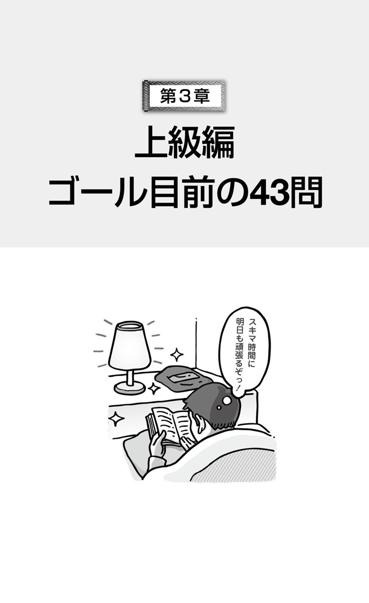
目標タイム：3分
音声ダウンロード
Questions 69-71 refer to the following announcement.
NIT Technologies
Posted at: 4:27P.M.
We are pleased to inform all regular staff that Sleek Company Magazine has chosen us as Startup of the Year. In a four-page article, the publication stated that it selected our firm based not only on our "exciting new applications" but our 62 registered and pending international patents. Moreover, this has all been accomplished within the relatively short period of 11 months. The article contains an interview with our founder and CEO Jeremy Yin and Louisa Gonzales, COO of FRT Investments, Inc., ─a firm whose board was persuaded by her to provide us €320 million in crucial venture capital. The article concludes by forecasting our firm to gain at least a 16 percent market share over the next three years. Let's all work hard and innovatively to reach or exceed that measure.
69.
Why has NIT Technologies been recognized by the magazine?
(A) It developed unique benefits for regular staff.
(B) It invested in startups with significant potential.
(C) It reached business achievements quickly.
(D) It sold sophisticated international patents.
70.
What is indicated about Louisa Gonzales?
(A) She interviewed an executive.
(B) She founded a corporation.
(C) She received venture capital.
(D) She convinced a committee.
71.
What are employees asked to do?
(A) Read a business article
(B) Perform creatively
(C) Analyze market share levels
(D) Establish cost-control measures
●速解ポイント！
報告の問題です。掲示したのはNIT Technologiesという会社であることを確認します。見出しがないので、冒頭の1文を読んで、何についての報告かをつかみましょう。続いて、この問題の設問に目を通すと、固有名詞が使われていて、質問内容も明確なことに気付きます。このような設問は、問われていることのポイントを念頭に置いて、効率的に問題文を読んでいくとよいでしょう。
69. 正解 （C）
この雑誌がNIT Technologiesを選んだ理由は、2文目... based not only on our "exciting new applications" but our 62 registered and pending international patents.と3文目Moreover, this has all been accomplished within the relatively short period ...に書かれている。ここから判断して、正解は（C）である。
冒頭から、この問題文は、Sleek Company Magazineという雑誌が、NIT Technologiesを「今年の新会社」に選んだという報告だと分かります。この設問は、その選ばれた理由を尋ねているのですが、これは、一般的に、すぐ後に書かれていることが多いので、2文目からを注意して読んでください。（C）のreached business achievements quicklyはhas （all） been accomplished within the relatively short periodの言い換えです。
70. 正解 （D）
4文目に、Louisa Gonzales, COO of FRT Investments, Inc., ─a firm whose board was persuaded by her to provide us €320 million in crucial venture capital.とある。ここから、（D）She convinced a committee.が正解であると分かる。
不正解の選択肢を順に見ていきましょう。4文目のThe article contains an interview with our founder and CEO Jeremy Yin and Louisa Gonzales, COO of FRT Investments, Inc.から、（A）彼女がインタビューしたわけではない、（B）会社を創設したのはJeremy Yinであると分かります。また、同じ文の後半から、（C）venture capitalを受け取ったのも Jeremy Yin側です。Louisa Gonzalesは、NIT Technologiesに投資するように自分の投資会社の役員会を説得した人物です。
71. 正解 （B）
問題文最後の1文、Let's all work hard and innovatively to reach or exceed that measure.という呼びかけが、従業員に求めていることと考えられる。この内容に一致するのは、（B）Perform creativelyである。
この設問のemployeesの言い換えを考えながら問題文に目をやると、1文目にあるregular staffが目に入ります。しかし、ここでは、regular staffに報告すると述べているだけです。注目したいのは、この報告が誰に向けられたものであるのかということです。この報告の相手が、regular staff、つまりemployeesであることに気付けば、最後の1文がemployees への呼びかけだと自然に理解できます。
●重要語句
■ startup 名 新会社、新企業
■ firm 名 会社、企業
■ pending 形 出願中の、未解決の
■ patent 名 特許、特許品
■ relatively 副 比較的
■ board 名 役員会、取締役会
■ crucial 形 非常に重要な
■ forecast 動 〜を予測する
■ innovatively 副 革新的に
■ recognize 動 〜を認める、高く評価する
■ benefit 名 給付金、福祉手当
■ achievement 名 業績、偉業
■ sophisticated 形 高度な、精巧な
■ convince 動 〜を納得させる、確信させる
■ perform 動 （任務など）を果たす、成し遂げる
全文訳
問題69〜71は次の報告に関するものです。
NITテクノロジーズ
掲示：午後4時27分
Sleekカンパニーマガジンが、我々を「今年の新会社」に選んだことを、喜んで全正社員に報告いたします。4頁の記事の中で、その出版物は、我が社の「刺激的な新しいアプリケーション」だけでなく、計62件の登録済みと申請中の国際特許に基づいて、我が社を選出したと述べています。しかも、これは全て、11カ月という比較的短い期間内で成し遂げられたのです。その記事には、我が社の創設者であり最高経営責任者であるJeremy YinとFRT投資株式会社の最高業務執行責任者であるLouisa Gonzalesへのインタビューも載っています。FRT投資株式会社は、Louisaが重要危険負担資本で3億2,000万ユーロを我が社に投じるようにと、彼女の会社の役員会を説得してくれた会社です。その記事は、我が社が向こう3年間、少なくとも16パーセントの市場占有率を獲得するだろうと予測して、締めくくっています。その値に追いつき、追い越すために、皆でしっかりと創意工夫しながら仕事をしましょう。
69.
なぜ、NITテクノロジーズは、その雑誌に評価されたのですか。
(A) 正社員のための独自の給付金を創り出した。
(B) 大きな可能性を持った新会社に投資した。
(C) すばやくビジネスの成功を収めた。
(D) 高度な国際特許権を売った。
70.
Louisa Gonzalesについて、どのようなことが示されていますか。
(A) 会社役員にインタビューした。
(B) 株式会社を創設した。
(C) 危険負担資本を受け取った。
(D) 委員会を納得させた。
71.
従業員は、何をするように求められていますか。
(A) ビジネス関連の記事を読む
(B) 創造的に任務を果たす
(C) 市場占有率を分析する
(D) 原価管理統制を確立する
知っておきたい
「露骨なもの」は疑いましょう。
設問の選択肢は、言い換えられている場合が多いです。つい、問題文中と同じ語が入っている選択肢を選んでしまいがちですが、言い換えが多いということは、問題文中の語がそのまま使われている選択肢は怪しいということです。この報告文の最初の設問を例にとると、問題文のthis has all been accomplished within the relatively short period of 11 monthsが、正解では（C）It reached business achievements quickly.と言い換えられています。一方、不正解である他の選択肢には、regular staff、startups、international patentsなど、問題文にある語が露骨に使われています。「露骨なもの」は疑って、問題文中でしっかりと確認をしましょう。
目標タイム：3分
音声ダウンロード
Questions 72-74 refer to the following document.
Rivers & Harwell, Inc.
Client Information Sheet
Client ID: 27346QJ83
Client Name: Lentro Petroleum Corporation
Headquartered in: Brazil
Chief Executive Officer: Flavio Coelho
Lead Consultant: Brian Thompson
Fees billed year to date: $397,852
Summary: We have served this client with its expansion into the American market, primarily through offering legal advice on federal and state laws governing energy firms. In addition, we have represented the client in supplier contracts, business disputes, patent defense, and compliance with standards and regulations. At present, we are legally streamlining the procedures for this client's entry into Canada and the European Union through our affiliates. The client is already represented in South America, Africa and Australia by other law firms.
72.
What is the purpose of the document?
(A) To provide data on a current customer
(B) To outline business leads for salespeople
(C) To request payment for goods and services
(D) To provide evidence of asset ownership
73.
In what industry does Brian Thompson work?
(A) In energy
(B) In law
(C) In trading
(D) In accounting
74.
According to the document, how has the client been served?
(A) By disputing regulations
(B) By changing unworkable standards
(C) By helping with a growth phase
(D) By consulting in African markets
●速解ポイント！
書類の問題であり、企業名の下にClient Information Sheetとあることをまずは確認します。しかも、Client Name:から、clientが個人ではなく会社で、Lead Consultantが付いているところまで情報を得たら、設問に目を通し、書類を読みましょう。
72. 正解 （A）
この書類がどのようなものかを理解する必要がある。Client Information Sheetと明記されており、その下に箇条書きされているのは、clientである企業名、その企業の本拠地とCEOの氏名。また、summaryは、We have served this client ...という1文で始まり、Rivers & Harwell社がこのclientである企業にどのようなことをしているかを要約している。
この書類がClient Information Sheetであることはすぐに分かりますが、ここでは書類が作成された目的を読み取らなくてはなりません。この書類の意味するところは、書類の下に明記されています。Summary「要約」を見ましょう！ 冒頭にWe have served this client with its expansion into ...とあります。つまり、これがsummaryの主題であり、（A）To provide data on a current customerと一致します。
73. 正解 （B）
Summaryの冒頭に、We have served this client ... primarily through offering legal advice ...とあり、この書類の作成者が、法律上の助言を顧客に行ってきたことが分かる。また、2文目ではさらに、In addition, we have represented the client in supplier contracts, business disputes, patent defense, and compliance with standards and regulations.と書かれているので、（B）が正解。
Brian Thompsonが勤めるRivers & Harwell社の仕事について、summaryを確認すれば正解が分かります。主な手掛かりの箇所は上記の通り。ただ、summaryをよく見てください。この summaryは4文から構成されていますが、その全ての文に「法律」に関係する語が含まれています。3文目にはlegallyが使われ、4文目には、by other law firmsとの表現があることから、この会社が行っているビジネスの正体が明らかになります。
74. 正解 （C）
前述の冒頭部分We have served this client with its expansion into the American market, primarily through offering legal advice ...や、3文目At present, we are legally streamlining the procedures for this client's entry into Canada and the European Union through our affiliates.から、顧客が受けているコンサルティングの内容が分かる。したがって、（C）が正解。
この設問を消去法で解いてみましょう。選択肢（A）と（B）についてはどこに書かれているでしょうか。どちらの選択肢も、コンサルタントの仕事としては限定されたものですので、今までに行われてきた仕事の数々が挙げられているIn additionに続く1文に書かれていると推察できます。この1文から（A）、（B）は不正解。（D）も最後の1文から不正解だと分かります。
●重要語句
■ expansion 名 拡大
■ federal 形 連邦政府の、アメリカ合衆国の
■ in addition 加えて
■ represent 動 〜の代理をする
■ contract 名 契約
■ dispute 名 論議、口論、争議 動 〜に異議を唱える
■ compliance 名 準拠、遵守
■ streamline 動 〜を合理化する
■ procedure 名 手続き
■ affiliate 名 子会社、支部
■ lead 名 糸口、手掛かり
■ asset 名 資産、財産
全文訳
問題72〜74は次の書類に関するものです。
Rivers & Harwell株式会社
顧客情報用紙
顧客ID：27346QJ83
顧客名：Lentro Petroleum株式会社
本社：ブラジル
最高経営責任者：Flavio Coelho
第一コンサルタント：Brian Thompson
会計年度初めから現在までの請求額：39万7,852ドル
要約：我々は主に、エネルギー会社を統制する連邦法および州法について、法律上の助言をすることにより、この顧客の会社がアメリカ市場へと拡大することに尽力してきた。加えて、供給業者との契約、経営上の争議、特許の保護、規格や法規の遵守において、顧客の代理を務めてきた。現在は、我々の子会社を介して、この顧客がカナダと欧州連合へ参入するための手続きを合法的に簡素化している。南アメリカ、アフリカ、オーストラリアでは、既に他の法律事務所が顧客の代理をしている。
72.
この文書の目的は何ですか。
(A) 現行の顧客に関するデータを提示すること
(B) 販売員に商売の糸口の概要を説明すること
(C) 商品とサービスへの支払いを要求すること
(D) 資産所有権の証拠を提示すること
73.
Brian Thompsonが働いているのは、どの産業分野ですか。
(A) エネルギー分野
(B) 法律の分野
(C) 貿易の分野
(D) 経理の分野
74.
文書によると、その顧客はどのように力を貸してもらってきましたか。
(A) 法規に異議を唱えることによって
(B) 実行不可能な規格を変えることによって
(C) 発展面の手助けをすることによって
(D) アフリカ市場での相談に乗ることによって
知っておきたい
会社での主語は、Weですよ。
この文書のsummary「要約」では、主語weが使われています。「私たち」がこの仕事をやって、このsummaryを書いたのでしょうか？ もしかすると、この仕事、Brianが1人で頑張ったのかもしれませんし、書いたのもBrianかもしれません。それでも、IやHeといった主語では表現しません。企業に勤める人が使う主語、それはWeなんですね。あくまでも、会社としてやっているとの認識です。会社に限らず、お店の販売員なども日常的にWeを使います。書店では"We can order the book for you."と言って、その人物が目の前で注文の電話をしてくれたりします。リスニングのときにも、意識して聞いてみてください。
目標タイム：3分
音声ダウンロード
Questions 75-77 refer to the following information.
Restix Vocational Center
Jellicoe City
Posted on: March 3
Who are our instructors?
All teaching staff have at least five years' experience in their fields and are certified by their industry associations.
What courses are most popular?
Courses in metalwork, appliance or vehicle repair, and construction equipment operation fill up much faster than others.
What is the application process?
Students must have a completed high school diploma and require one form of photo ID. New students must bring these documents to the registration office. Returning students may subsequently register online.
When are the registration deadlines?
March 20 - 25: Registration only for returning students
March 26 - 31: Registration open to all students
April 1 - 5: Registration only with signed approval of instructor
April 6: Registration closes
75.
What is the purpose of the information?
(A) To advertise faculty positions for a learning center
(B) To announce the introduction of new classes
(C) To invite people to attend an academic fair
(D) To explain the procedure to enroll in courses
76.
What is suggested about Restix Vocational Center?
(A) Teachers are qualified within their industry.
(B) Students require a university degree.
(C) Online courses usually fill up quickly.
(D) Some parts of the building are under repair.
77.
When is the earliest that new students can register?
(A) On March 25
(B) On March 26
(C) On April 1
(D) On April 6
●速解ポイント！
情報に関する問題です。問題文は質問とそれに対する回答が順に述べられている構造です。一番上に書かれたRestix Vocational Centerを確認し、設問に目を通してから、必要な情報を問題文中で探しましょう。
75. 正解 （D）
各項目を順に確認すると、Who are our instructors? / What courses are most popular? / What is the application process? / When are the registration deadlines?とある。このうち、特に最後の2つの見出しから得られる情報をもとに、（D）が正解となる。
この問題文は、それぞれの項目に答える形式で情報を提供しています。どこに目的が書かれているというような構成ではないですね。それぞれの項目が、何に関する情報なのかを考えましょう。職業センターが、「講師について」、「人気のあるコース」、「申し込みの手続き」、「登録の締切」の情報を挙げているのですから、これは（D）To explain theprocedure toenroll incourses と一致します。
76. 正解 （A）
1つ目の項目Who are our instructors?の下にある説明の冒頭に、All teaching staff have at least five years' experience in their fields ...とある。ここから、（A）Teachers are qualified within their industry.だと考えられる。
この設問は、書かれていることが何を意味するかを少し考えなければなりません。面倒な設問のようですが、ポイントをつかめば、答えがすぐに見つかります。まずは、選択肢の主語を見てください。（A）なら、Teachersが主語です。そして、それが書かれている箇所、つまり、1つ目の項目でどのように書かれているかを確認すればよいわけです。そこから、（A）のことが言えますか？ 言えるので正解というわけです。
77. 正解 （B）
4つ目の項目 When are the registration deadlines?で、March 20 - 25: Registration only for returning students、March 26 - 31: Registration open to all studentsとある。設問のnew studentsだけの登録日というものがないので、new studentsはall studentsに含まれると考えられることから、（B）が正解。
これは、選択肢から、問題文のどこを見ればよいか一目瞭然です。設問にあるnew studentsという語は書かれていませんので、これがどれに該当するかすばやく見抜いてください。
●重要語句
■ vocational 形 職業の、職業訓練のための
■ certify 動 〜に証明書［免許状］を与える
■ association 名 組合、協会
■ metalwork 名 金属細工
■ appliance 名 電気器具
■ construction equipment 建設機器
■ fill up いっぱいになる
■ application 名 申し込み
■ subsequently 副 後に
■ registration 名 登録
■ faculty 名（大学の）教授陣、（学校の）教職員
■ enroll 動 登録する、入会する
■ qualify 動 〜に資格を与える
全文訳
問題75〜77は次の情報に関するものです。
Restix職業訓練センター
Jellicoe市
掲示日：3月3日
講師はどのような人物か？
全ての教員は、自分たちの専門分野で少なくとも5年の経験を持ち、その産業協会からの免許を有しています。
どのコースが一番人気があるか？
金属細工、電気器具や車の修理、建設機材の操作のコースが、他のコースよりもずっと早く定員に達します。
申し込みの手続きはどうするのか？
学生は、高校を卒業していなければならず、また、写真付きの身分証明書が1通必要です。新しく入る学生は、これらの書類を登録事務所へ持ってこなければなりません。在学生は、後にオンラインで登録しても構いません。
登録の締切はいつか？
3月20日─25日：在学生のみによる登録
3月26日─31日：全学生対象の登録
4月1日─5日：講師の承認の署名を持つ学生のみによる登録
4月6日：登録終了
75.
この情報の目的は何ですか。
(A) 学習センターの教員職の公募を行うこと
(B) 新しいクラスの導入を知らせること
(C) 人々にアカデミックフェアへの出席を勧めること
(D) コースへの登録の手順を説明すること
76.
Restix職業訓練センターについて、どのようなことが分かりますか。
(A) 教員は、自分たちの産業分野での資格を持っている。
(B) 学生は、大学卒業の学位が必要である。
(C) オンラインのコースは、いつもすぐにいっぱいになる。
(D) 建物は部分的に修理中である。
77.
新しく入る学生が登録できるのは、一番早くていつですか。
(A) 3月25日
(B) 3月26日
(C) 4月1日
(D) 4月6日
知っておきたい
設問の動詞はしっかり見ましょう。
「...についてどのようなことが述べられていますか」というような設問、よく出てきますね。日本語では「述べられる」「分かる」と訳されることが多いですが、英語の設問では、さまざまな動詞が使われています。例えば、mention「言う、言及する、挙げる」、indicate「示す」、suggest「暗示する、示唆する」、imply「含意する、暗示する」、infer「推測する」などです。どの動詞が使われているかに注意を払ってください。そして、その動詞が「言っている」通りに正解を考えましょう。もし、「示す」の意味が漠然として分かりにくければ、「問題文に書かれていることから、つまり言えることは何か」を尋ねる設問だと考えてはどうでしょう？ 動詞が出している指示を見逃さないでください。
目標タイム：3分
音声ダウンロード
Questions 78-80 refer to the following notice.
Cooper Building Services
Posted on March 13
Attention Visitors and Tenants
On March 30, changes will take place regarding the elevator system. Floors 1-5, which contain both retail outlets and company offices, will remain fully accessible to the public. Floors 6 and above, which solely contain corporate offices, will be accessible only through individual security cards. These cards are used by placing them against electronic card readers installed in each elevator.
We delivered the cards to tenant offices on March 7, and these should have been distributed among staff as of the date of this notice. Those who have not received the cards should contact either us or their office managers.
The cards should be kept on hand while on the building premises. In the event a card is lost, please notify Cooper Building Services immediately. We will deactivate the lost card and provide a replacement.
Access to the secure parking area will also require the cards. For questions on parking services, including weekly, monthly or yearly parking passes, please e-mail: parking@cooperbuildingservices.com
78.
Who most likely issued the notice?
(A) A property administrator
(B) An industry association
(C) A security corporation
(D) A cleaning service
79.
What is indicated about the cards?
(A) They are registered in employee names.
(B) Tenants must apply for them by next month.
(C) Initial distribution has already taken place.
(D) Replacements are currently unavailable.
80.
According to the notice, where will access be unaffected by the change?
(A) In the corporate elevators
(B) On the second floor
(C) At the rooftop retail outlets
(D) In the parking area
●速解ポイント！
お知らせの問題であり、Attention Visitors and Tenantsという見出しが付いていることを確認します。このお知らせの掲示者を示した一番上のCooper Building Servicesも見逃さないようにしましょう。問題文は、2つ目の設問で問われているthe cardsが言及されているところに注意して読んでください。
78. 正解 （A）
このお知らせはCooper Building Servicesから、Visitors and Tenantsに向けられたものであることを念頭に置く。また、Cooper Building Servicesは、第1段落冒頭のOn March 30, changes will take place regarding the elevator system.から、建物内のシステム変更を知らせる立場だと判断できるので、（A）が正解。
このお知らせを掲示したCooper Building Servicesは、その名前から、ビルの関係者だと分かります。そして、Visitors and Tenantsを対象に、エレベーターシステムの変更を報告しています。このようなことを行うのは、普通、建物の責任者であると推測できるでしょう。さらに、第2段落の冒頭には、We delivered the cards to tenant offices ...ということも書かれており、security cardsまで届ける立場ということも分かります。
79. 正解 （C）
第2段落冒頭に、We delivered the cards to tenant offices on March 7 ...と書かれてあり、このお知らせが掲示されたのが、March 13であることから、カードはもう配られていることが分かる。この内容と一致するのは、（C）である。
カードについての情報を拾いましょう。まず、第1段落3文目に、Floors 6 and above ... will be accessible only through individual security cards.から段落の最後まで、このカードの使用方法が述べられています。しかし、このカード自体についてやカードの申し込みに関する記述はありません。したがって、（A）と（B）は不正解。また、第3段落最後の文We will deactivate the lost card and provide a replacement.から、（D）も不正解だと分かります。
80. 正解 （B）
第1段落に、Floors 1-5, which contain both retail outlets and company offices, will remain fully accessible to the public.とあるので、（B）が正解。
このAttention Visitors and Tenantsの文書において、「変更のあるところとないところ」といった内容は重要事項です。お知らせ文書では、特に知らせたいことが最初に書かれますので、第1段落の始めの方を探しましょう。2文目にFloors 1-5 ... will remain fully accessible to the public.とあり、3文目にFloors 6 and above ... will be accessible only through individual security cards.とあります。ここから（B）が正解。（D）については、一番下の段落の冒頭を見て確認してください。
●重要語句
■ retail outlet 小売店
■ accessible 形 行きやすい、接近できる
■ distribute 動 〜を配布する
■ premise 名（複数形で）構内
■ notify 動 〜に届け出る、通告する
■ deactivate 動 〜の効力をなくす
■ issue 動 〜を出す、発する、発行する
■ property 名 不動産、財産
■ initial 形 最初の
■ distribution 名 配布
■ unavailable 形 入手できない
■ unaffected 形 影響を受けない、変わらない
全文訳
問題78〜80は次のお知らせに関するものです。
Cooperビルディングサービス
3月13日掲示
訪問者および入居者の方々へ
3月30日より、エレベーターシステムに関して変更がございます。小売店と会社のオフィスの両方が入っている1階から5階については、今まで通り一般の方々に自由に行っていただけます。会社のオフィスのみが入っている6階以上の階へは、個人のセキュリティーカードをご使用にならないと行くことができなくなります。このカードは、各エレベーターに備え付けられた電子カード読み取り機にかざして使用します。
3月7日に、入居されているオフィスにカードをお届けしましたので、このお知らせを出した今現在、ここで働くスタッフの方々にはカードが配られていることと思います。カードをまだお受け取りになっていない方がいらっしゃいましたら、私どもか、皆さまのオフィス長のいずれかにご連絡をお取りください。
建物内にいる間は、カードをお手元に置いてください。カードを紛失した場合は、直ちにCooperビルディングサービスに届け出てください。紛失したカードを無効にし、代わりのカードをお渡しいたします。
セキュリティー付き駐車場への出入りにも、カードが必要となります。週極め、月極め、年極めの駐車許可証を含む駐車サービスに関するご質問は、parking@cooperbuildingservices.comへEメールをお送りください。
78.
お知らせは誰が出したと考えられますか。
(A) 不動産管理人
(B) 産業組合
(C) 警備会社
(D) 清掃業者
79.
カードについて、どのようなことが示されていますか。
(A) 従業員の名前で登録されている。
(B) 入居者は、来月までにその申し込みをしなければならない。
(C) 最初の配布は既にされている。
(D) 代わりのものは、現在のところ入手できない。
80.
お知らせによると、変更による影響を受けずに行けるのはどこですか。
(A) 共同エレベーター内
(B) 2階
(C) 屋上の小売店
(D) 駐車場内
知っておきたい
「注」も読みましょう。
ここで言う「注」とは、問題文の一番下に、小さい文字で書かれている箇所のことです。今回の問題文であれば、Access to the secure parking area will also require the cards.で始まる、いかにも重要でなさそうに控えめに、追加で書かれているような箇所です。この控えめな様相とは裏腹に、ここを読まなくては正解を得られないような設問がよく出ます。問題作成者が、「ここも読むように」とのメッセージを発しているのか、「ここなら分かりにくいだろう」と思ってのことか分かりませんが...。とにかく、この箇所も見逃さずに読んで正解を考えましょう。問題文中の特定の箇所に脚注マークが付いていて、下で説明しているような場合も注意してください。
目標タイム：3分
音声ダウンロード
Questions 81-83 refer to the following news article.
June 27 （GREENVILLE）─Covey Metalworks, Inc., has announced that it will build two additional assembly lines at its industrial complex in this city, which would bring the total number of assembly lines to six. A building will be constructed to contain the new assembly lines. Construction of both the building and the lines will take approximately 12 months and cost estimates are around $70 million.
At a press conference, company spokesperson Vadim Bogomazov explained that the new assembly lines would be fully automated and raise regular output at the complex by 28 percent. "We expect a much lower defect rate on these lines, along with far fewer production interruptions caused by mechanical breakdowns," he stated during the conference.
The company also plans to hire up to 200 new employees for the completed lines, including at least 12 technicians and production managers.
In statements released online after the press conference, the company confirmed that demand for some of its specialty products in its primary market is rising, and the new facilities will enable the firm to meet it.
81.
What is the purpose of the article?
(A) To announce governmental goals
(B) To inform of a facility expansion
(C) To analyze industrial market trends
(D) To provide an overview of new leadership
82.
Who is Mr. Bogomazov?
(A) A business press reporter
(B) A conference planner
(C) A company representative
(D) A production engineer
83.
What is indicated about the new assembly lines?
(A) They will replace older machinery in the complex.
(B) They will occupy currently empty buildings.
(C) They will require fewer technicians for repairs.
(D) They will help meet the changing market demand.
●速解ポイント！
ニュース記事の問題です。この問題文は見出しがないので、ニュースの全体像をつかみたい場合は、各段落の冒頭部分を読みましょう。また、続いて、設問を見ると、最初の2問はすぐに正解が見つけられそうです。冒頭をチェックするときに、この2問を解くことができれば、とても効率的です。
81. 正解 （B）
第1段落冒頭部に、Covey Metalworks, Inc., has announced that it will build two additional assembly lines at its industrial complex ...と書かれているので、（B）が正解。
ニュース記事の場合、主題が書かれているのは、最初の段落の冒頭部分です。（B）では、問題文中のannounceは、informに言い換えられ、また、it will build two additional assembly lines at its industrial complexは、a facility expansionという表現になっています。
82. 正解 （C）
第2段落に、 company spokesperson Vadim Bogomazov explained ...とあることから、彼が会社を代表して話している人物、つまり、（C）A company representativeだと分かる。
spokespersonは、spokesmanの性差別を避けた表現です。ここでは、このspokespersonを「代弁者」という意味でとらえてしまうと、選択肢を見たときに迷うかもしれません。迷ったら、文脈で考えてみてください。記者会見（a press conference）で、会社の新しい施設について説明をするのが、（A）や（B）では変です。（D）は、可能性としてはあるかもしれませんが、普通は、（C）「会社の代表者」となります。
83. 正解 （D）
第4段落に、the company confirmed that demand for some of its specialty products in its primary market is rising, and the new facilities will enable the firm to meet itと書かれている。このことを1文で言い表しているのが、（D）である。
他の選択肢を見てみましょう。（A）は、第1段落にit will build two additional assembly lines at its industrial complex ...とあるので、不正解です。（B）も、第1段落に A building will be constructed to contain the new assembly lines.とあるので間違いです。（C）については、第3段落冒頭のThe company also plans to hire up to 200 new employees for the completed lines, including at least 12 technicians ...から判断して、不正解になります。
●重要語句
■ assembly line 組み立てライン
■ industrial complex コンビナート
■ approximately 副 おおよそ、約
■ estimate 名 見積額、見積もり
■ complex 名 コンビナート
■ interruption 名 中断、妨害
■ along with 〜 〜に加えて
■ statement 名 声明、発言
■ specialty 名 特製品、名物、専門
■ primary 形 主要な、第一次の
■ overview 名 概要、要約
■ representative 名 代表者
全文訳
問題81〜83は次の新聞記事に関するものです。
6月27日（グリーンビル）─Covey金属加工部品株式会社は、市内にあるコンビナートにさらに2つの組み立てラインを建設し、それによって組み立てラインの合計が6つになると発表した。新しい組み立てラインを入れるための建物も建設される。その建物とラインの建設には約12カ月を要し、経費の見積もりは約7,000万ドルと見込まれている。
記者会見において、会社のスポークスマンであるVadim Bogomazovは、新しい組み立てラインは完全にオートメーション化され、コンビナートでの通常の生産量を28パーセントアップさせるだろうと説明した。会見の中で彼は、「この組み立てラインでは欠陥率がかなり低くなり、機械の故障による生産の中断もずっと少なくなるだろう」と述べた。
完成したラインに対して、会社は少なくとも12人の技術者と生産管理者を含む新しい従業員を最大200人まで雇うことも計画している。
記者会見後にインターネットで発表された声明で、会社の主要な市場において専門製品の需要は高まりつつあるが、新しい施設ができれば、会社はその需要にも対処できるだろうと確証した。
81.
この記事の目的は何ですか。
(A) 政府の目標を公表すること
(B) 施設の拡大を知らせること
(C) 産業製品市場の傾向を分析すること
(D) 新しいリーダーシップの概要を伝えること
82.
Bogomazov氏とは誰ですか。
(A) 業界紙の記者
(B) 会見の計画担当者
(C) 会社の代表者
(D) 生産技術者
83.
新しい組み立てラインについて、どのようなことが示されていますか。
(A) コンビナートにある古い機械設備と取り替えられるであろう。
(B) 現在空いている建物に入るであろう。
(C) 修理には専門技術者があまり要らなくなるだろう。
(D) 変わりつつある市場の需要に応えるのに役立つだろう。
知っておきたい
新聞記事の構造を知りましょう。
日本語の新聞を読むとき、まず見出しを見て、それから文章を頭から読み出すのが一般的ではないでしょうか。新聞の記事問題も、その順番で読んでいけば、内容として重要な箇所から読んでいくことになります。なぜならば、新聞記事は、重要な情報から書かれ、詳細は後に述べられていくという「逆三角形構造」だからです。今回の問題文を例に見てみると、第2段落はAt a press conference ...、第3段落はThe company also plans to ...、第4段落はIn statements released online after the press conference ...と、ある特定の場面での話や追加的な内容であることが分かります。つまり第2段落以降は、詳細について述べられている段落だと考えられます。
目標タイム：3分
音声ダウンロード
Questions 84-86 refer to the following advertisement.
Tubin Solutions, Inc.
www.tubinsolutions.com/positions/
Our Knowledge Drives Business Performance
We are one of the fastest-growing consulting firms in Southeast Asia. As such, we have a great need for individuals with unique skill sets and experience, particularly in the following sectors:
Information Technology: Advanced programming, database, and other hardware or software development
Management: Executive leadership, operations, mergers and acquisitions
Law: National and international regulations, standards and laws in a variety of business fields
Finance: Investment, accounting or asset management
Applicants for senior consultant positions should have at least 10 years of experience, along with a graduate degree. Applicants for associate consultant positions must have at least a four-year university degree in one of the subjects listed above. Fluency in English as well as at least one other Asia-Pacific Region language is required for all positions.
Apply at our Web site. Alternately, you can visit our booth at the November 14-20 Pacific Career Fair, held simultaneously in Manila, Hanoi, Penang, Singapore and Jakarta.
84.
What is the purpose of the advertisement?
(A) To detail current professional vacancies
(B) To outline senior employee achievements
(C) To analyze regional economic growth
(D) To announce a corporate restructuring
85.
According to the advertisement, which of the following areas would be needed in Tubin Solutions, Inc.?
(A) Executive recruitment
(B) Supply purchasing
(C) Commercial legislation
(D) Language instruction
86.
What will occur in November?
(A) Company products will be marketed at a booth.
(B) A new Web site will be launched.
(C) Recruitment events will take place.
(D) An international travel fair will be held.
●速解ポイント！
冒頭の指示文から、これが広告の問題であると分かります。この指示の1文は、意外と見落としがちですが、重要な情報を含んでいますのでしっかりと確認してください。何の広告であるかは、一般的に、問題文の冒頭部分に書かれているので、主題も最初に確認しておきましょう。
84. 正解 （A）
第1段落が We are one of the fastest-growing consulting firms in Southeast Asia. As such, we have a great need for individuals with unique skill sets and experience ...で始まっており、求人の広告であることが分かる。この時点で、（A）だけが内容と一致する。
広告の主題は始めに書かれているのが一般的ですので、第1段落冒頭を見ましょう。また、箇条書きが何に関するものであるかを知るには、その直前の1文を読むことが重要です。この問題文の場合、... we have a great need for individuals with unique skill sets and experience, particularly in the following sectors:を読み取れば、確実に早く正解にたどり着くことができます。
85. 正解 （C）
前述のように、この広告は特に箇条書きに挙げた分野で技術や経験を持ち合わせた人材を求めている。箇条書きの3つ目の項目に、Law: National and international regulations, standards and laws in a variety of business fieldsとあるので、（C）が正解である。
他の選択肢を見ていきましょう。（A） Executive recruitmentにあるExecutiveは、箇条書きの2つ目 Management: Executive leadership ...に見られますが、ここで求められている分野はあくまでもManagement（経営）であり、recruitmentの分野が求められるわけではありません。（B）は、箇条書きの中に言及がないことから不正解。（D）に関しては、第2段落を見てください。この段落は、Applicants for senior consultant positions should have at least ...で始まり、続く文もApplicants for associate consultant positions must have at least ...と、応募者の条件が書かれています。Languageについては、応募者に求められる語学力として言及されています。
86. 正解 （C）
最終段落で、... you can visit our booth at the November 14-20 Pacific Career Fair, held simultaneously in Manila, Hanoi, Penang, Singapore and Jakarta.と書かれている。career fairは、「就職説明会」という意味なので、（C）が正解。
Novemberという語を問題文中で探すと、上述の箇所にNovember 14-20 Pacific Career Fairとあるのが見つかります。（C）の Recruitment events は、Pacific Career Fairの言い換え。（A）、（B）、（D）は、単に、この最終段落に出てくる語を使った選択肢なので、ひっかからないようにしましょう。
●重要語句
■ individual 名 人、個人
■ sector 名 分野、部門
■ acquisition 名（会社などの）買収
■ regulation 名 規則
■ standard 名 基準、規格
■ investment 名 投資
■ applicant 名 応募者、志願者
■ associate 形 准〜、副〜（例） associate professor 准教授
■ fluency 名 流ちょうさ
■ region 名 地域
■ vacancy 名（職や地位などの）欠員、空席
■ corporate restructuring 企業のリストラ、企業再構築
■ legislation 名 法律、立法
全文訳
問題84〜86は次の広告に関するものです。
Tubin Solutions株式会社
www.tubinsolutions.com/positions/
私どもの知識が営業活動を活性化させます
私たちは、東南アジアにおいて最も急な成長を遂げているコンサルタント会社の1つです。そのような立場として、特に下記の分野において独自の技能と経験を持っている人物を強く求めております。
情報技術：高度なプログラミング、データベース、その他のハードウェアあるいはソフトウェアの開発
経営：幹部としての統率力、経営、合併、買収
法律：国内および国際規制、基準、ならびにさまざまなビジネス分野における法律
財務：投資、会計、または資産管理
上級コンサルタント職への応募者は、大学院の学位と、少なくとも10年の経験を有しているものとします。准コンサルタント職への応募者は、上に列挙した学科専攻で少なくとも4年制大学の学位を有していなければなりません。アジア太平洋地域の言語を1つはできることと英語が流ちょうであることが、全ての職に求められます。
弊社のウェブサイトで出願してください。もしくは、11月14日から20日まで、マニラ、ハノイ、ペナン、シンガポール、ジャカルタで同時開催される「太平洋就職説明会」で、私どものブースの方にお越しいただくこともできます。
84.
広告の目的は何ですか。
(A) 現在の専門職の欠員を詳述すること
(B) 上級従業員の功績を概説すること
(C) 特定地域の経済成長を分析すること
(D) 企業再建を発表すること
85.
広告によると、Tubin Solutions株式会社では、以下のどの分野が求められていますか。
(A) 管理職採用
(B) 必需品購入
(C) 商法制定
(D) 言語指導
86.
11月に何が起こりますか。
(A) 会社の商品がブースで販売される。
(B) 新しいウェブサイトが開設される。
(C) 新社員募集イベントが行われる。
(D) 国際旅行博覧会が催される。
知っておきたい
「何の箇条書き？」から、全体像へ。
箇条書きのある問題は、その部分が妙に気になるものです。このような場合はいっそのこと、箇条書きから先に読み始めるというのも1つの手でしょう。今回のように中央に書かれていれば、主題に関する詳細である可能性も高く、全体像の理解へとつながります。
何についての箇条書きなのかは、多くの場合、直前の1文に書かれています。この問題では、箇条書きの部分に、「情報技術」、「経営」、「法律」、「財務」という4項目が挙げられており、その前文を読むと、「独自の技能と経験を持っている人物を求めている」、「特に下記の分野で」とあります。つまり、これは4つの分野に関する求人広告だと判断できるわけです。
目標タイム：3分
音声ダウンロード
Questions 87-89 refer to the following letter.
Visitor Relations Department
Blue Springs Park
March 28
Trava Drabek
Teacher
Wurton Middle School
Portland, Maine
Dear Ms. Drabek,
We received your request for Park-related printed materials in your March 25 e-mail. In line with that, we have enclosed several maps, brochures and guidebooks. An abundance of other information is of course on our Web site.
For instance, there is a section on it where you could plan an excursion of one to five days in which you could see highlights such as Pete's Rock, Apple Lake and Lookout Hill.
You can aid in our environmental preservation mission by remembering to follow all park guidelines contained in the enclosed materials. These include restrictions against littering, starting campfires, or fishing.
If you have any questions prior to your visit, please contact me.
Yours truly,
Andrew Jones
Visitor Relations Supervisor
E-mail: a.jones@bluespringsparkonline.gov
87.
What is suggested about Ms. Drabek?
(A) She published a series of nature books.
(B) She updated some online information.
(C) She assigned instructors to manage a course.
(D) She made a request to an administrator.
88.
According to the letter, what is available on the Web site?
(A) A virtual tour of several state parks
(B) A section for public donations
(C) A feature for planning journeys
(D) A facility for posting highlight photos
89.
How can individuals help in the environmental protection mission?
(A) By obeying published rules of conduct
(B) By fishing only during certain seasons of the year
(C) By cleaning up after any field trip campfires
(D) By signing and returning the enclosed materials
●速解ポイント！
手紙の問題です。Blue Spring ParkのVisitor Relations SupervisorであるAndrew Jonesさんから、Wurton Middle SchoolのteacherであるTrava Drabekさんに宛てた手紙だと確認したら、続いて設問に目を通してください。設問87などは、Drabekさんに関する記述に注意して問題文を読んでいく方がよいと見てとれます。
87. 正解 （D）
第1段落冒頭に、We received your request for Park-related printed materials in your March 25 e-mail.とある。この手紙はTrava Drabekさん宛てなので、yourはDrabekさんを指す。したがって、（D）が正解となる。
Drabekさんについて分かることを探す問題。Visitor Relations SupervisorであるAndrew Jonesさんが、Drabek さん宛てに書いた手紙ですので、問題文中では、Andrew Jonesさんが属すVisitor Relations DepartmentはWe、Drabekさんはyouと表現されています。そのことに注意して読んでいくと、彼女は、Park-related printed materialsを要求するEメールを出したということが分かります。また、（B）も紛らわしいかもしれませんが、Web siteに情報を掲載しているのはDrabekさんではなく、Blue Spring Parkです。
88. 正解 （C）
第2段落冒頭に、For instance, there is a section on it where you could plan an excursion of one to five days ...とあり、Web siteに掲載されている情報の一例を紹介している。この内容と一致する（C）が正解。
Web siteという語は、第1段落のAn abundance of other information is of course on our Web site.という1文中で見つけてください。この流れとFor instanceという表現から、続く第2段落が、そのWeb siteで掲載されている多くの情報の一例だと分かります。ここでは、（C）の内容以外は書かれていないことを読み取ってください。
89. 正解 （A）
第3段落冒頭に、You can aid in our environmental preservation mission by remembering to follow all park guidelines contained in the enclosed materials.とある。ここから、同じ内容を意味する（A）が正解となる。
問題文中のenvironmental preservation missionが、設問ではenvironmental protection missionに言い換えられていると気付いて、第3段落から読み取りましょう。（B）や（C）で迷ってしまったら、fishingやcampfiresの語を含む第3段落2文目のThese include ...の1文を確認してください。fishingやcampfiresに関することは、guidelinesに含まれていますが、詳細は書かれていません。一方、（D）についての言及は問題文中のどこにもありません。
●重要語句
■ material 名 資料
■ enclose 動 〜を同封する
■ excursion 名 小旅行、遠足
■ aid in 〜 〜の助けとなる
■ preservation 名 保護、維持
■ mission 名 使命、任務
■ restriction 名 制限、規則、（複数形で）制限規定
■ litter 動 散らかす、汚す
■ virtual 形 仮想の
■ section 名（新聞・雑誌などの）欄
■ facility 名 機能、施設
■ conduct 名 行動
全文訳
問題87〜89は次の手紙に関するものです。
ご来場者関係受付部
Blue Springs公園
3月28日
Trava Drabek
Wurton中等学校教員
ポートランド、メイン州
Drabek様
3月25日のEメールにて、当公園に関する資料のご請求をお受けいたしました。それを受けまして、何枚かの地図、パンフレット、ガイドブックを同封いたしました。もちろん、その他にも豊富な情報が、当公園のウェブサイトに掲載されております。
例えば、Pete's Rock、Apple Lake、Lookout Hillといった名所が見られる、1日から5日間の小旅行をご計画いただけるセクションがウェブサイト上にございます。
同封の資料に記載されております公園のガイドラインの全てに忘れずにしたがっていただければ、私たちの環境保全活動を支援することになります。ガイドラインには、ごみのポイ捨て、キャンプファイヤーや釣りに対する制限規定も含まれております。
ご来園に先立って何かご質問がございましたら、私にご連絡ください。
敬具
Andrew Jones
ご来場者関係受付部主任
E-mail:a.jones@bluespringsparkonline.gov
87.
Drabekさんについて、どのようなことが分かりますか。
(A) 自然についての本のシリーズを出版した。
(B) オンラインの情報を更新した。
(C) 講師たちに講座を管理する任務を与えた。
(D) 管理者に対してある要求をした。
88.
手紙によると、ウェブサイトでは何が利用できますか。
(A) いくつかの州立公園のバーチャルツアー
(B) 寄付金セクション
(C) 旅行を計画するための機能
(D) 名所の写真を投稿するための機能
89.
どのようにすれば個人が環境保全活動の手助けをできますか。
(A) 公表されている行動規則に従うことによって
(B) 1 年のある期間中だけ釣りをすることによって
(C) 校外学習のキャンプファイヤーの終了後には常にきれいに片付けることによって
(D) 同封の書類に署名をして返送することによって
知っておきたい
問い合わせに対する返信の構成
資料請求などの問い合わせに対する返事の手紙やEメールは、その一般的な構成を知っておくと、ずいぶん楽に読めるようになります。その構成は、① 冒頭部分で、どのような問い合わせに対する返事なのかが説明される。この部分で具体的な会社名や人名が挙げられることもあるので、確認が必要。また、お礼の1文で始まることが多い。→② その後に、問い合わせに対する回答が述べられる。今回のような資料請求であれば、それが同封されていることが記される。→③ その他に役に立つと思われる情報（ウェブサイトのURLなど）が挙げられる場合もある。→④ 最後は、If you have any further questions, please ...などの1文で締めくくられる、となります。今回の問題では、「お礼」の言葉がなかったですけどね。
目標タイム：3分
音声ダウンロード
Questions 90-92 refer to the following book review.
Emerging Skyscrapers
By Yin Wen Chan
289 pages （print version）
Feiber Publishing Co.
Formats: Print, E-book
Review by Anna Veljanovski
In her newest work, Ms. Chan focuses on 32 buildings that stand out from all others. Located in cities ranging from Moscow to Jakarta, the buildings are distinguished for their height, unique architectural style and energy efficiency. Ms. Chan considers energy efficiency as a crucial factor in an architectural profession that increasingly emphasizes "green" buildings, which minimally consume natural resources.
Ms. Chan's insights in this book are impressive. Her overview draws in the reader and the main chapters flow smoothly, supported by an abundance of visual aids from rough sketches to breathtaking color pictures. Moreover, the glossary defines technical terms─making the content comprehensible to people with little knowledge of this field.
The outside commentary segments of the book should have included more data from city officials on the effects of these buildings on local economies and lifestyles. Overall, however, this work is well worth reading.
90.
What is probably true about the buildings in the book?
(A) They are in the same geographic region.
(B) They have special construction features.
(C) They were sold to international investors.
(D) They were renovated as they became older.
91.
What is suggested about natural resource consumption?
(A) It is minimized in green buildings.
(B) It is lower in some cities than others.
(C) It is reduced in modern structures.
(D) It is increasing in high skyscrapers.
92.
What part of the book does the reviewer think could be improved?
(A) The overview
(B) The sketches
(C) The main glossary
(D) The outside commentary
●速解ポイント！
書評の問題です。まずは、著書のタイトル、著者名、書評を書いている人物名をしっかりと把握しましょう。次に、設問に目を通します。設問92は、選択肢までチェックしてから問題文を読むと、より効率よく正解が見つけられそうなのが分かります。
90. 正解 （B）
問題文の最初の文に、In her newest work, Ms. Chan focuses on 32 buildings that stand out from all others.とあり、続く文に、... the buildings are distinguished for their height, unique architectural style and energy efficiency.と書かれている。この2つの記述から、（B）が正解。
設問ではWhat is probably true about the buildings in the book?と尋ねています。ここで知りたいのは、「本の中で」ということなので、In her newest work「彼女の最新の著書の中で」で始まる第1段落に情報があることに気付きましょう。問題文中のstand out fromやdistinguishedなどから、special construction featuresがこれらの言い換えであることが分かります。MoscowとJakartaの語が目に入るので、（A）や（C）も関係があるのではと思うかもしれませんが、これはそのように困惑させるためのもの。ここでは「この建築物の所在地がモスクワからジャカルタまでに至り...」と書かれているので、地理的に同じ地域ではないですし、国際的な投資家に売られたかどうかの言及はありません。
91. 正解 （A）
第1段落最後の文に、Ms. Chan considers energy efficiency as a crucial factor in an architectural profession that increasingly emphasizes "green" buildings, which minimally consume natural resources.とあるので、（A）が正解である。
設問のnatural resource consumptionというキーワードで、問題文中を探しても、完全に一致するものは見つかりません。なぜなら、問題文中のconsume「〜を消費する」という動詞が、consumptionという名詞に言い換えられているからです。また、選択肢を見てみると、全て、"It（＝natural resource consumption「天然資源の消費」） is in ～"という1文。このような場合は、選択肢をチェックするとき、isとinの直後の語（語句）のみを見て確認すると、すばやく選択肢の文の意味がつかめます。
92. 正解 （D）
第3段落冒頭に、The outside commentary segments of the book should have included more data from city officials ...とあるので、（D）が正解である。
第2段落が称賛の1文で始まっているので、この著書の改善すべき部分が書かれているのは、残す第3段落ということになります。そこで、第3段落冒頭を見ると、The outside commentaryの語が目に入ります。この1文は、〈主語＋should have＋動詞の過去分詞形〉の構造になっていますので、「〜するべきだったのに」という意味になります。「のに」が付くと愚痴になる。これは、不満を述べていて、改善してほしいということです。（D）以外の選択肢は、Ms. Chan's insights in this book are impressive.で始まる第2段落に、称賛の対象として言及されています。
●重要語句
■ range 動（範囲内に）わたる
■ distinguished for 〜 〜で名高い
■ efficiency 名 効率、能率
■ emphasize 動 〜を強調する
■ green 形 環境に優しい
■ minimally 副 最小限に
■ resource 名 資源
■ insight 名 洞察力
■ abundance 名 豊富
■ glossary 名（巻末などの）用語解説
■ content 名 内容
■ comprehensible 形 理解できる
■ commentary 名 論評、批評
全文訳
問題90〜92は次の書評に関するものです。
新興の高層建築
Yin Wen Chan著
289ページ（印刷書籍版）
Feiber出版社
出版形態：印刷、Eブック
評者 Anna Veljanovski
Chan氏は最新作において、他のものより抜きん出た 32 件の建築物に焦点を当てている。それらの建築物のある都市はモスクワからジャカルタにまで至り、その高さ、独特の建築様式、エネルギー効率において際立っている。エネルギーの効率性こそが、天然資源の消費量を最小限に抑える「地球に優しい」建築物をますます重要視している建築業において、重大な要素であるとChan氏は考えている。
本書でのChan氏の洞察力は見事なものである。概説は読者を引きつけ、主要部の章は、素描から息をのむようなカラー写真にまで至る豊富な視覚補助に支えられ、よどみなく流れるように進む。さらに、用語解説によって専門用語の意味が明確にされているため、この分野の知識がほとんどない人々でも内容が理解できるようになっている。
本書の外部からの論評部分には、これらの建物が地元の経済と生活様式に与えた影響に関する市当局からのデータをもっと入れるべきであった。しかしながら、全般的には読む価値が十分にある作品だと言える。
90.
本書に載っている建物について、当てはまると思われることは何ですか。
(A) 地理的に同じ地域にある。
(B) 特別な建築上の特徴がある。
(C) 国際的な投資家に売却された。
(D) 老朽化しつつあったので改築された。
91.
天然資源の消費についてどのようなことが分かりますか。
(A) 地球に優しい建築物においては、最小限に抑えられている。
(B) ある都市では、他の資源の消費よりも少ない。
(C) 現代建築では、減らされている。
(D) 高層建築物においては、増加している。
92.
批評者は本書のどの部分を改善するべきだと思っていますか。
(A) 概説
(B) スケッチ
(C) 主な用語解説
(D) 外部からの論評
知っておきたい
レビューは、「作品の内容」と「評論家の意見」で構成される。
書籍、芸術作品、演劇などのレビューは、読むのが面倒だと感じている人も多いことでしょう。評論家の意見を読むなんて、その作品自体を知らないし、おまけにTOEICに出てくる作品なんてフィクションだろうと言いたくなるかもしれません。ですが、レビュー問題では、もちろん、このことは心得られているので、そのために「型」があります。この「型」は意外と単純なもの。まずは前半部分で、批評する作品の内容が大まかに紹介されます。そして後半部分で、その作品に対する評論家の意見が述べられるのです。
この構成を知っておけば、設問を「作品の内容に関するもの」と「評論家の意見に関するもの」とに分類し、本文のどの部分に答えが隠されているのかを、いち早く探し出すことができます。
目標タイム：4分
音声ダウンロード
Questions 93-96 refer to the following e-mail.
| From: | Faye Durand <faye.durand@cupperfoodco.net> |
| To: | Austin Richardson <austin.richardson@cupperfoodco.net> |
| Cc: | Quin Umrani <q.umrani@cupperfoodco.net> |
| Subject: | Survey |
| Date: | June 12 |
| Attachment: |
Hi Austin,
We know that your department is in the final stages of designing our product line survey and that you plan to release it in Quarter 2.
However, we need you to suspend work on it. This is because we have approved the launch of a new food item,Super-T bread, for Quarter 3. We want your survey to include customer feedback onSuper-T price, taste, packaging and comparison with rival products. These are the primaryfactors that we want you to cover. It would therefore be ideal if you completed and released your survey in Quarter 4. That way, it could include shoppers' opinions onSuper-T.
Please feel free to contact either Quin Umrani or myself, should you require any more details. Attached is a spreadsheet created by him, which should provide the necessary information.
Thank you,
Faye
93.
Why was the e-mail sent to Mr. Richardson?
(A) To ask for an update
(B) To request a delay
(C) To inform of sales results
(D) To introduce a manager
94.
According to the e-mail, what is NOT a type of customer feedback the survey should measure?
(A) Item price
(B) Taste quality
(C) Competitor comparison
(D) Product size
95.
The word "factors" in paragraph 2 is closest in meaning to
(A) features
(B) risks
(C) ingredients
(D) alternatives
96.
What is true about the spreadsheet created by Quin Umrani?
(A) It lists financial performance.
(B) It was released to consumers.
(C) It contains product details.
(D) It was designed in Quarter 4.
●速解ポイント！
最初に、EメールのSubject「件名」を見てみましょう。Eメールの内容が、Survey「調査」についてだと分かります。次に、送信者と受信者を確認。このEメールの場合は、送信者が個人であることから、ここからEメールの内容理解の手助けになるようなヒントは得られないように思えます。しかし、よく見ると、2人のEメールアドレスから同じ会社で働く者同士ということが分かります。つまり、社内メールだということになります。
93. 正解 （B）
第2段落冒頭、However, we need you to suspend work onit.に注目。このitは、第1段落にあるsurveyを表す代名詞。suspend「一時中断する」ことは、その調査を遅らせることになるので、（B）が正解。
上記だけで正解を判断することが難しければ、第2段落後半にIt would therefore be ideal if you completed and released your survey in Quarter 4.も見ましょう。第1段落で、surveyの公表予定はQuarter 2とあったことから、延期を求めていることが分かります。英文メールでの用件は、冒頭で述べるのが一般的です。しかし、この問題の場合、最初の1文は現行の調査について述べてあり、Eメールの用件を述べていません。そこで、見逃してはいけないのが、次にくるHowever「しかしながら」です。これは逆接を表す接続詞なので、However以下は前文を否定する内容、つまり、ここでは現状に対しての意見が述べられるはずです。Eメールの冒頭で用件らしいことが書かれていないときは、この否定的でイヤな響きの逆接語を探しましょう。
94. 正解 （D）
第2段落中程We want your survey to include customer feedback onSuper-T price, taste, packaging and comparison with rival products.から、製品のsizeは調査の対象として挙げられていないことが分かる。したがって、（D）が正解。
調査の対象がどこに挙げられているかを早く見つけるには、キーワードを見つけて問題文中を情報検索しましょう。ただし、その際に、キーワードが類似語などに言い換えられている場合が多いことに注意しなければなりません。これが厄介です。しかし、この問題の場合、feedback、 price、 taste、 comparisonが、そのままの形で問題文中にあります。これらの単語を念頭に、Eメール文の上から下へと目を走らせてください。
95. 正解 （A）
このfactorsは、These are the primary factors that we want you to cover.という1文の中にあるので、主語であるtheseが何を指すのかをまず考えなければならない。これは複数代名詞なので、直前の1文にあるSuper-T price, taste, packaging and comparison with rival productsが主語となる。文脈から、（A）features「主要点」がふさわしい。
「Super-Tの価格、味、包装とライバル商品との比較」がどういったものか、選択肢を当てはめて考えてみましょう。これらが、（B）risks「危険（要素）」や（C）ingredients「材料」だと変ですね。また、「取り扱ってほしいfactorsだ」と言っているのに、（D）alternatives「選択肢」では意味を成しません。
96. 正解 （C）
第3段落に、Attached is a spreadsheet created by him, which should provide the necessary information.とあり、このhimはQuin Umraniさんを指すことがその前の1文から分かる。新商品のために調査の延期を求めているEメールにおいて、the necessary informationが何であるかを考えると、正解は（C）となる。
このspreadsheetは、これから市場に出る新しい商品も含めた製品調査の公表をQuarter 4に延期してほしいという内容のEメールに添付されたもの。したがって、（B）と（D）は時制としておかしいです。（A）もこのEメールの脈絡から、the necessary informationではないことが分かります。また、Quin Umraniは、第2段落で述べた件についての詳細が知りたいときに尋ねる相手として記されています。つまり、それが彼の担当の仕事であり、その彼が作成するspreadsheetとはどのような内容のものかを考えることが正解への糸口です。
●重要語句
■ survey 名 調査
■ department 名 部門
■ product line 製品ライン
■ release 動（情報など）を公表する
■ quarter 名 四半期
■ suspend 動 〜を一時的に中止する
■ approve 動 〜を承認する
■ launch 名 売り出し
■ customer 名 顧客
■ feedback 名 反応、感想、意見
■ comparison 名 比較
■ provide 動（必要なもの）を提供する
全文訳
問題93〜96は次のEメールに関するものです。
送信者：Faye Durand <faye.durand@cupperfoodco.net>
宛先：Austin Richardson<austin.richardson@cupperfoodco.net>
Cc：Quin Umrani<q.umrani@cupperfoodco.net>
件名：調査
日付：6月12日
添付：
こんにちは、Austin。
君の部署での当社製品ライン調査計画が最終段階にあって、それを第2四半期に発表予定であることは知っているよ。
だが、その仕事を一時中断してもらいたい。というのも、Super- Tパンという新しい食料製品を第3四半期に発売することを承認したからなんだ。君の調査には、Super-Tの価格、味、包装、ライバル商品との比較についての消費者の感想も網羅してほしい。これらのことは、取りあげてもらいたい最も重要な要素なんだ。だからもし、調査を第4四半期に完成して公表してもらえたら、理想的なのだが。そうすれば、Super- Tに関する買い物客の意見も盛り込めるだろうからね。
もっと詳しい情報が必要であれば、気軽にQuin Umraniか私に連絡をしてきてくれ。彼が作成した、必要な情報が分かるスプレッドシートを添付するよ。
ありがとう。
Faye
93.
EメールがRichardson氏に送られたのはなぜですか。
(A) 更新を頼むため
(B) 延期を要請するため
(C) 販売結果を知らせるため
(D) 部長を紹介するため
94.
Eメールによると、調査によって評価すべき消費者の意見ではないものは何ですか。
(A) 商品価格
(B) 味の品質
(C) ライバル企業との比較
(D) 製品の大きさ
95.
第2段落のfactorsに最も近い意味の語は
(A) 目立った点
(B) 危険要素のある人［物］
(C) 材料
(D) 選択肢
96.
Quin Umraniによって作成されたスプレッドシートについて、正しいものはどれですか。
(A) 財務実績を一覧表にしている。
(B) 消費者に公開された。
(C) 製品の詳細が載っている。
(D) 第4四半期に計画された。
知っておきたい
何についてのEメール？ 誰からのEメール？
毎日送られてくるEメールはどこから読み始めますか？ まずは件名を見て本文を読むのを後回しにしたり、送り主が不明のEメールを開けなかったりしているのではないでしょうか。Eメール問題でも、同じようにしてみてください。「何についてのEメールか？」（Subjectを確認）→「誰からのEメールか？」（Fromを確認。また、肩書きやEメールアドレスから送信者の立場をチェック）を確認し、内容を推測してから、メール本文に目を通しましょう。こうすることで、Eメール問題にかける時間と労力を、かなり抑えられるはずです。
目標タイム：5分
音声ダウンロード
Questions 97-101 refer to the following letter.
Dexford University
Wellington
New Zealand
21 March
Hiroko Shimizu
Chief Information Security Officer
Isellon Aircraft Corporation
Netherlands
Dear Ms. Shimizu,
Firstly, I'd like to thank you for the guest lecture you gave on the 19th of March to our faculty. As one of the more notable persons in the field of information security, our professors greatly benefited from your combination of theory and real-world experience.
We imagine that your schedule most likely would not permit you to visit us again soon. However, if you have time, we would like to invite you to submit an article for our department Web site. Apart from updates on course content, semester schedules, and international faculty exchange programs, it contains writings by outside experts such as yourself. Recently, for example, Gheorghe Balcescu, CIO at Feston Media Co., submitted an essay. The Web site is accessible only to faculty and your submission would help deepen our skills and knowledge base.
You could choose any topic that you like, although we have a particular interest in network security concepts. We certainly welcome any comments on your preferredmodels for that area.
Please contact me at your convenience at the e-mail address below about our proposal.
Yours truly,
Terrance Powers
Information Technology Department Head
Dexford University
t.powers@dexforduni.nz
97.
Why was the letter written?
(A) To invite a senior manager to attend a conference
(B) To request an individual to write an article
(C) To recommend revisions of some existing theories
(D) To explain the main attractions of an academic organization
98.
What is indicated about the 19th of March lecture?
(A) It was held for the teaching staff.
(B) It was sponsored by a private company.
(C) It was designed by department professors.
(D) It was made a regular event each semester.
99.
According to the letter, what information is NOT available on the department Web site?
(A) Course content developments
(B) Submissions by specialists
(C) Student recruitment policies
(D) International exchanges
100.
Who is Gheorghe Balcescu?
(A) A professor
(B) A technology investor
(C) A media reporter
(D) A company executive
101.
The word "models" in paragraph 3 is closest in meaning to
(A) ideas
(B) celebrities
(C) operations
(D) displays
●速解ポイント！
手紙の問題ですので、まずは、送り主と宛先を確認しましょう。このとき、名前や性別よりもむしろ、それぞれの勤務機関や肩書きに目を通して、手紙の送り主と受取人の関係を簡単にイメージできると問題文の内容が理解しやすいです。
97. 正解 （B）
第2段落に... if you have time, we would like to invite you to submit an article for our department Web siteとあり、手紙の用件が書かれている。したがって、（B）が正解。
手紙の用件はどこに書かれますか？ 手紙文の冒頭ですね。しかし、この手紙文は、Firstly「まず、最初に」と、手紙の用件に入る前に先日の講演に対するお礼を述べています。このようなパターンもあるので、覚えておきましょう。この「例外」段落を飛ばした次の段落、つまり、第2段落に目を向けると、そこに正解につながる上記の1文があります。また、同じ第2段落最後の文には、... yoursubmissionwould help deepen our skills and knowledge baseとあり、第3段落冒頭ではYoucould choose any topic that you like ...とあります。この2文は、どちらも、「記事を提出してくれるならば」という仮定の帰結にあたるものと考えられ、ここからも依頼していることが分かります。
98. 正解 （A）
第1段落冒頭にI'd like to thank you for the guest lecture you gave on the 19th of March to our facultyとあり、2文目にはour professors greatly benefited from your combination of theory and real-world experienceと書かれている。これらから、正解は（A）となる。
設問にあるthe 19th of March lectureの記述がすぐに目につく、第1段落を見てみましょう。the 19th of March lectureに関する詳細は、とても短いので正解が比較的見つけやすくなっています。our professors greatly ...とあるように、このlectureが教授にとって大いにためになったと書かれていることから、聴衆は教授たちであったということが分かります。また、この問題は、消去法で解いてもいいでしょう。（B）や（C）については言及されていないので、不正解です。第1段落冒頭にthe guest lectureとありますが、これがa regular event each semesterなのかは不明なので、（D）も不正解です。
99. 正解 （C）
第2段落中程に、the department Web siteに載っている情報が書かれている。Apart fromupdates on course content, semester schedules, andinternational faculty exchange programs, it containswritings by outside experts such as yourself.とあることから、下線部に当てはまらないのは、（C）だけである。
この設問の選択肢は、問題文で、それぞれ次のように表現されています。（A）Course content developments → updates on course content、（B）Submissions by specialists → writings by outside experts、（D）International exchanges → international faculty exchange programsなど、このような言い換えは、TOEICの選択肢にはよくあることなので覚えておきましょう。また、キーワードを問題文中で探すときは、同義語まで頭に思い浮かべて探すのが理想的です。
100. 正解 （D）
第2段落4文目にGheorghe Balcescu, CIO at Feston Media Co.とある。選択肢の語そのものの記述はないが、CIO at Feston Media Co.「Feston Media社の最高情報責任者」と書かれているので（D）が正解。
これは、人名をキーワードに問題文中を情報検索すれば見つけられる問題です。ただし、CIO「最高情報責任者」を知らないと少し戸惑うかもしれません。しかし、少し落ち着いて考えてみてください。TOEICでよく見かける、CEO「最高経営責任者」、 COO「最高業務責任者」、CFO「最高財務責任者」という語は、全て企業の重役の役職名です。このことから、たとえCIOの意味が分からなくても、「何か重役の肩書きじゃないか」と推測すれば、（D）以外の選択肢で迷うことはありません。もちろん、この機会に、この肩書きにあるCはchief、Iはinformation、Oはofficerの略語であることを覚えておくとよいでしょう。
101. 正解 （A）
第3段落冒頭にYou could choose any topic that you like, although we have a particular interest in network security concepts.とあり、We certainly welcome any comments on your preferred models for that area.と続く。この2文から、ここでのmodelsの意味はconceptsに近いことが分かり、（A）が正解となる。
modelは多義語であるので、この問題ではどの意味で使われているのかを理解することが大切です。model →モデル→セレブと考え、（B）を選んでは出題者の思うつぼです。そんな単純なものではありませんし、information securityの専門家に宛てた手紙にセレブはないでしょう。しかし、このような語彙に関する設問には、この手の突拍子もない選択肢がよく交じっています。このような選択肢が出てきたら、ありがたく消去して3択問題にして考えましょう。ここでは、modelは「型、形式」などの意味ですが、では何の「型」なのかを考えなくてはいけません。そこで上記の文を見ると、文脈からconceptsの「型」のことだと推測できるというわけです。
●重要語句
■ faculty 名 学部、（大学の）学部教授陣
■ notable 形 注目に値する、著名な
■ benefit 動 得をする、利益を得る
■ theory 名 理論
■ submit 動 〜を提出する
■ update 名 最新情報
■ semester 名 学期
■ CIO（chief information officer） 名 最高情報責任者
■ proposal 名 提案
■ revision 名 改訂、修正
■ sponsor 動 〜を主催する
■ recruitment 名（新規学生・社員・会員などの）募集
全文訳
問題97〜101は次の手紙に関するものです。
Dexford大学
ウェリントン
ニュージーランド
3月21日
Hiroko Shimizu
情報安全管理最高責任者
Isellon航空株式会社
オランダ
Shimizu様
初めに、3月19日に当学部で特別講演をしてくださったお礼を申し上げたいと存じます。情報セキュリティーの分野でより注目に値する人物の1人としてのShimizu様の理論と実社会経験の融合から、当学部の教授たちも大いに得るところがありました。
スケジュールのご都合で、近日中に再度お越しいただくことはおそらくできないだろうと推察いたします。しかしながら、もしお時間がおありでしたら、当学部のウェブサイトに記事をご投稿いただきたいと思っております。コース内容、学期予定表、学部の国際交流プログラムの最新情報に加えて、ウェブサイトにはShimizu様のような外部の専門家の文章も含まれております。最近では、例えばFeston Media社の最高情報責任者Gheorghe Balcescu氏がエッセーを投稿してくださいました。ウェブサイトは当学部教員のみがアクセスできるものであり、ご投稿いただければ、我々の技術基盤と知識基盤を深める助けとなるでしょう。
我々としては、ネットワークセキュリティーの概念について特に興味がございますが、お好みのテーマをお選びいただけます。その分野での推奨モデルに関するあらゆる論評を大歓迎いたします。
私どものご提案につきまして、ご都合のよろしいときに下記のEメールアドレスにご連絡ください。
敬具
Terrance Powers
情報技術学部長
Dexford大学
t.powers@dexforduni.nz
97.
手紙はなぜ書かれたのですか。
(A) 上級管理者に会議への出席を勧めるため
(B) ある人物に記事を書いてもらえるよう依頼するため
(C) 既存の理論の改訂を勧めるため
(D) ある学術団体の主な魅力を説明するため
98.
3月19日の講演について、どのようなことが示されていますか。
(A) 先生たちのために開かれた。
(B) 民間企業が主催した。
(C) 学部の教授たちにより計画された。
(D) 毎学期の恒例行事となった。
99.
手紙によると、学部のウェブサイトで入手できないのはどのような情報ですか。
(A) コース内容の進展
(B) 専門家による投稿
(C) 学生募集方針
(D) 国際交流
100.
Gheorghe Balcescu は、どのような人物ですか。
(A) 大学教授
(B) 科学技術への投資家
(C) マスコミ報道者
(D) 会社の重役
101.
第3段落のmodelsに最も近い意味の語は
(A) 着想、考え
(B) 有名人
(C) 操作、事業
(D) 展示
知っておきたい
多義語の罠に気を付けましょう。
設問101のような語彙問題では、多義語が登場することがよくあります。問題文を精読しなければ解けない複雑なものもあれば、カタカナ語としてなじみのある語を使ったひっかけ問題もあります。落ち着いて考えれば間違えないような問題でも、本番ではついひっかかってしまいがちですので、頻出の多義語は意識的に押さえておきましょう。例えば、次のようなものがあります。
plant 【名】 植物、工場 / department 【名】 部署、学部、売り場 / note 【名】 覚え書き、紙幣 / check 【名】 勘定書き、小切手 /fair 【形】 公正な、美しい; 【名】 品評会、定期市/ party 【名】 党、一団、パーティー / will 【名】 意志、遺言、遺書
他の選択肢の語彙が難しいほど、ひっかけの罠にかかる傾向にあるようですので、慌てず、文脈から判断しましょう。
目標タイム：5分
音声ダウンロード
Questions 102-106 refer to the following letters.
www.panglobalpharmabualliance.com
Pan Global Pharmaceutical Business Alliance
16 Dupree Avenue
Bruges
Belgium
9 November
Ji-eun Kim, CEO
Hanseung Pharmaceutical Co.
17 Chung Ang Dong
Seoul, Korea
Dear Ms. Kim,
We would like to take this opportunity to invite your company to join our business alliance. We represent the interests of some of the largest companies in our industry and our activities include:
・ Sponsoring seminars, conventions and similar events
・ Advising regulators and legislators on industry trends and breakthroughs
・ Establishing and maintaining relationships with universities and other institutions carrying out basic research
・ Issuing "best practices" guidelines and standards for members
Membership also includes access to all of our organization's networking events and to our database containing the contact information of our other members. Senior company executives are also invited to our annual conference.
If you agree to join PGPBA, you will be required to fill in the enclosed application and pay a processing fee of €300. Yearly membership dues total €1,500, payable by the end of each year. Other membership requirements are enclosed. Theseterms may change periodically.
We hope you will join us. If you have any questions, please visit our Web site or contact me at any time.
Yours truly,
Dieter Bachmann
Membership Director
Hanseung Pharmaceutical Co.
17 Chung Ang Dong
Seoul, Korea
17 November
Dieter Bachmann
Pan Global Pharmaceutical Business Alliance
16 Dupree Avenue
Bruges
Belgium
Dear Mr. Bachmann,
Thank you for your 9 November letter. Our executive has reviewed and acted on the materials you sent. Attached, please find a single business check. This will cover the combined amount of the two fees you mentioned.
We look forward to working with you in the future in your various activities. Also, please have a look at the booklet enclosed with this letter. It explains some of the history behind our company and our ongoing research and product work.
Regards,
Ji-eun Kim
Ji-eun Kim, CEO
Hanseung Pharmaceutical Co.
www.hanseungpharmaceutical.co.kr
102.
What is the main purpose of the first letter?
(A) To promote a new product line
(B) To survey new businesses
(C) To extend an invitation
(D) To outline a production goal
103.
According to the first letter, what is NOT an activity carried out by the alliance?
(A) Attracting international investors
(B) Giving government officials information
(C) Developing ties with schools
(D) Releasing rules for companies
104.
In the first letter, the word "terms" in paragraph 4 is closest in meaning to
(A) definitions
(B) conditions
(C) periods
(D) tests
105.
Why has Ms. Kim enclosed a business check?
(A) To cover board expenses
(B) To order mailing supplies
(C) To refund earlier fees
(D) To pay processing costs
106.
What is suggested about the booklet?
(A) It details the company background.
(B) It complies with industry standards.
(C) It profiles historic locales.
(D) It focuses on consumer trends.
●速解ポイント！
最初の指示文で、手紙の問題であることを確認します。手紙の問題は、誰から誰への手紙であるかをまず知ることが大切。送り主と宛先をチェックすると、この問題の場合は、どちらも特定の人物に送られた手紙であることが分かります。さらに、製薬会社関係だという情報も得られます。
102. 正解 （C）
最初の手紙の第1段落冒頭に、We would like to take this opportunity to invite your company to join our business alliance.とあるので、（C）が正解。
手紙の用件は冒頭部分に書かれていることが一般的です。「目的」を問われる設問は、とにかく、まずは冒頭を見てみましょう。とは言うものの、この設問のような場合、第1段落に続く箇条書き部分が気になりますね。この箇条書きから、他の選択肢、特にoutlineという語が入った（D）が正解に見えてくる人がいるかもしれません。こういうときは、何の箇条書きか確認すれば安心です。確認はすぐにできますよ。確認の目印は、箇条書き直前にあるour activities include:の最後に付いているコロン（：）。これは、「次のような」という意味ですので、箇条書き部分は、our activitiesの例を挙げていることになります。
103. 正解 （A）
このallianceが行っている活動は、箇条書きで挙げられている箇所に書いてある。そこに挙げられていない活動は、（A）だけである。
NOT問題は、書かれていないことを見つけるものなので、どれが箇条書きに挙げられていないか確認しましょう。この設問の場合、箇条書き部分を1つずつ確認してもあまり時間はかかりませんが、厄介なのは選択肢での言い換えです。箇条書き部分も何やら複雑そうなものがあって、確認がしんどそうですね。この際、複雑なことは避けて、短時間で楽に見つけましょう。選択肢の動詞部分（現在分詞の名詞的用法）を見ると、（A）のattractingだけ少し異質な感じです。これに目をつけ、本文の箇条書きを確認すると、attractingのような動詞は見当たりません。さらに確認すれば、international investorsと同じような意味の語もないことが分かります。「少し浮いた」ものは要チェックです。
104. 正解 （B）
第4段落は、If you agree to join PGPBA, you will be required to ...で始まり、続いて、しなければならないことが述べられていく。それらを受けて、These terms may change periodically.と表現されていることから、このtermsは、（B）conditions「条件」がふさわしいと考えられる。
termsという語は、問題文中では、these termsとなっているのがポイント。theseという語が付いているので、「ちょっと前に既に述べた」と言っているようなものです。ちょっと前に述べられているのは、PGPBAの会員に求められる必要事項だということから、正解は（B）。ただ、この設問でのtermsの意味が「条件」だと分からないと、少しやりづらいですね。termは、この他にも、「期間」、「用語」、「（複数形で）間柄」のような意味がある多義語です。このような多義語は、設問に出されることも多いので普段から注意しておきましょう。
105. 正解 （D）
2つ目の手紙の第1段落に、Attached, please find a single business check.とあり、This will cover the combined amount of the two fees you mentioned.と続く。the two feesについては、1つ目の手紙の第4段落で述べられており、Thisは、a single business checkの代名詞であるので、文意から（D）が正解となる。
a business checkがどこに書かれているか分からない場合は、Kimさんからの手紙上で、checkという語をキーワードにして情報を検索してください。上記のThis will cover the combined amount of the two fees you mentioned.が見つかります。問題なのは、the two feesが何であるかです。この1文では、the two feesyou mentionedと言っているので、you（＝Bachmannさん）が書いた1つ目の手紙を確認しなければなりません。つまり、これは、2つの文書を読まなければならない設問です。大変そうですが、大丈夫、楽にいきましょう。"the two fees"はお金に関することなので、そのようなことを述べていそうな段落を探すといいのです。すると...€300や€1,500と書かれている箇所が！ この段落のこの箇所を読めば何の料金であるかが分かります。（D）はprocessing costsとあるので、€300の方に該当することが分かります。他の選択肢を確認していくと、ここから、（A）To cover board expensesは、不正解だということも判明。この選択肢は、coverという動詞を使っているので気になるところですが、反対に、選択肢の出題傾向として、問題文と全く同じ動詞を正解の選択肢に使うことはあまりありません。（B）と（C）は、最初の手紙の返信としておかしいですね。
106. 正解 （A）
2つ目の手紙の第2段落に、Also, please have a look at the booklet enclosed with this letter. It explains some of the history behind our company ...とあるので、（A）が正解。
bookletという語の場所がすぐに分かりましたか？ これは設問文中に指示がありませんが、5問中3問が既に1つ目の手紙から、もう1問が両方の手紙から出題されていますので、2つ目の手紙に関する設問だろうと勘を働かせてください。2つ目の手紙の第2段落2文目に見つけられます。第2段落3文目のthe history behind our companyがthe company backgroundに、explainsがdetailsに言い換えられていることに気付けば、正解が分かる問題です。
●重要語句
■ alliance 名 連合、協定
■ convention 名 総会、会議、党大会
■ regulator 名（公的）監査機関、取締人
■ legislator 名 国会議員、立法者
■ breakthrough 名 発展、躍進
■ institution 名 機関、学会
■ issue 動 〜を公布する
■ annual 形 年1回の、毎年の
■ due（s） 名（複数形で）会費
■ combined 形 結合した、共同の
■ definition 名 定義
■ refund 動 〜を払い戻しする
■ comply with 〜 〜に従う
全文訳
問題102〜106は次の2つの手紙に関するものです。
www.panglobalpharmabualliance.com
全世界製薬企業連合
Dupree大通り16番地
ブリュージュ
ベルギー
11月9日
Ji-eun Kim最高経営責任者
Hanseung製薬会社
Chung Ang Dong 17番地
ソウル、韓国
Kim様
この機会を利用して、貴社が私どもの企業連合にご参加くださいますようご案内させていただきたいと存じます。当連合は、数社の業界最大手の企業の利益を代表いたしております。当連合の活動には下記のものが含まれます。
● セミナー、総会、またそれに類する行事を主催すること
● 監査機関の役人や国会議員に、業界のトレンドと発展について助言すること
● 基礎研究を行っている大学やその他の機関との関係を構築し、それを維持すること
● 会員に向けて「最善の慣行」の指針と規範を交付すること
会員は、当連合の全てのネットワーク行事に参加でき、他の会員の連絡情報が掲載されているデータベースへのアクセスが可能になります。企業の上級管理職の方々は、当連合の年次総会にもお招きしております。
もしPGPBA参加にご同意いただけましたら、同封の申し込み用紙にご記入のうえ、300ユーロの手数料のお支払いをお願い申し上げます。年会費は1,500ユーロで、毎年年末までにお支払いいただくことになっております。他の会員資格必要事項は同封しております。これらの条項は定期的に変更することがございます。
ご参加をお待ちしております。もしご質問がございましたら、ウェブサイトをご覧いただくか、私にいつでもご連絡ください。
敬具
Dieter Bachmann
会員担当理事
Hanseung製薬会社
Chung Ang Dong 17番地
ソウル、韓国
11月17日
Dieter Bachmann
全世界製薬企業連合
Dupree大通り16番地
ブリュージュ
ベルギー
Bachmann様
11月9日付のお手紙ありがとうございました。弊社の取締役は、お送りいただいた資料を検討して手続きを行いました。事業用小切手1枚を同封いたしましたので、ご確認ください。これで言及された2つの料金の合計金額に足りるかと思います。
これから先、さまざまな活動でご一緒できることを楽しみにしております。また、この手紙と一緒に同封いたしましたパンフレットをご覧ください。弊社にまつわる歴史と進行中の研究や商品製作について説明しております。
敬具
Ji-eun Kim （署名）
Ji-eun Kim最高経営責任者
Hanseung製薬会社
www.hanseungpharmaceutical.co.kr
102.
最初の手紙の主な目的は何ですか。
(A) 新しい製品ラインの販売促進をすること
(B) 新しい事業を調査すること
(C) 勧誘をすること
(D) 生産目標の概要を説明すること
103.
最初の手紙から、連合が行っていない活動は何ですか。
(A) 外国の投資家の興味を引くこと
(B) 官僚に情報を提供すること
(C) 学校との関係を深めること
(D) 会社に対して規約を公表すること
104.
最初の手紙の第4段落にあるtermsに最も近い意味の語は
(A) 定義
(B) 条件
(C) 期間
(D) 試験
105.
Kimさんはなぜ事業用小切手を同封しましたか。
(A) 会議費用をまかなうため
(B) 郵送用品の注文をするため
(C) 以前の料金を払い戻すため
(D) 手続きにかかる費用を支払うため
106.
パンフレットについてどのようなことが分かりますか。
(A) 会社の背景的情報が詳しく述べられている。
(B) 業界基準を遵守している。
(C) 歴史的な場所を紹介している。
(D) 消費者のトレンドに焦点を合わせている。
知っておきたい
Double Passage問題の傾向は？
Double Passageの問題は、問題文が2つあるので少し焦ってしまうかもしれません。確かに、設問の難易度も高くなることが多いですが、とにかく出題傾向をつかんで、落ち着いて問題に取り組みましょう。出題の傾向として、設問の中に両方の問題文を読んで正解を見つけ出さなくてはならないものが含まれている場合があります。これが大変です。しかし、視点を変えると、...つまり、それ以外の設問は、どちらか片方の問題文を読めば正解が見つかるということになりますね！ なんだか、気が軽くなったように思いませんか。両方の問題文を読まなくてはいけない設問に出会ってしまったら、そのときは速度を落として両方の問題文をしっかりと読んでください。
目標タイム：5分
音声ダウンロード
Questions 107-111 refer to the following advertisement and e-mail.
Eiden Community College
www.eidencommunitycollege.edu
Grow Your Dreams Here
We offer a variety of certificate programs for people who want to get ahead in their current fields or enter new ones. All programs can be completed within an average of two years by full-time students.
Approximately 95 percent of our graduates report that our training has directly led to them improving their lives and careers. That is only one of the many reasons we were profiled by Champei Tep in the May edition ofSuper Jobs Magazine.
Some of our most popular courses include the following:
| ●Machinery repair | ●Accounting |
| ●Office administration | ●Graphic design |
| ●Dental assistant training | ●Computer programming |
Find out why so many people are turning to us for the skills they need for the jobs of today─and tomorrow!
Day, evening and weekend courses are available.
From:
James Milano <james82@gotogomail.com>
To:
Kirstin Coulter, Academic Director <k.coulter@eidencommunitycollege.edu>
Date:
November 27
Subject:
Course Feedback
Dear Ms. Coulter,
I am a recent graduate of your graphic design program. I used to work as a restaurant waiter. Thanks to your training, I now work at a technology firm.
Even so, I feel that there are severalareas where improvements might be made. For instance, your school offers a few online courses but none were available in my program. I would have appreciated the flexibility of studying online, since I was working 40 hours per week even as a student.
In addition, you might want to organize the opportunities to participate in some field experience for future students, such as letting them visit or perform one or two small internship-type projects for companies. I felt classroom and textbook education alone was not enough preparation for real-life situations.
Overall, I would recommend your school to anyone, particularly if you took action on the above areas.
Regards,
James Milano
107.
Who most likely is Champei Tep?
(A) A career counselor
(B) A college professor
(C) A professional writer
(D) A bookstore owner
108.
According to the advertisement, what is NOT mentioned about Eiden Community College?
(A) The total number of enrolled individuals
(B) The advancements graduates have made
(C) The average time to program completion
(D) The types of courses available
109.
In the e-mail, the word "areas" in paragraph 2 is closest in meaning to
(A) displays
(B) services
(C) locales
(D) patterns
110.
What is suggested about James Milano?
(A) He finished classes within two years.
(B) He did some fieldwork as a student.
(C) He studied online.
(D) He took a popular set of courses.
111.
Based on the e-mail, why should the college promote internship-type projects?
(A) To build relationships with local companies
(B) To match students to open business positions
(C) To add realism to its academic program
(D) To better prepare teachers for their classrooms
●速解ポイント！
Double Passageの問題なので、まず、2つの問題文の関係を把握しましょう。問題文をスキミング（情報拾い読み）し、1つ目がコミュニティーカレッジの広告、2つ目が、その卒業生からカレッジの教務部長に送られた「コースの感想」であるとのポイントを拾ってください。
107. 正解 （C）
advertisementの第2段落、That is only one of the many reasons we were profiled by Champei Tep in the May edition ofSuper Jobs Magazine.から、（C）A professional writerだと分かる。
これは、Champei Tepという名前をキーワードに問題文中を探すとすぐに見つけられます。Champei Tepは、Super Jobs Magazineという書名の雑誌で、このカレッジのことを紹介した人物です。いくつかの職業の人が、雑誌の執筆をする可能性があるかもしれませんが、この問題文では職業を限定するような言及はありません。したがって、ここはプロのライターであると考えられます。
108. 正解 （A）
消去法で考える。まず、advertisementの第1段落で、All programs can be completed within an average of two years by full-time students.とあるので、（C）は除外。第2段落には、Approximately 95 percent of our graduates report that our training has directly led to them improving their lives and careers.と書かれているので、（B）も除外である。また、（D）についても、問題文の最後でDay, evening and weekend courses are available.とある。
消去法といっても、選択肢3つについて書かれている箇所を問題文から見つけるのには時間がかかりそうに思えるかもしれません。そこは要領よくやっていきましょう。この設問は、advertisementの問題ですので、伝えたいことを明確な構造で述べているはずです。その構造を把握するために、各段落の冒頭部分を確認してください。冒頭部分を確認すると...、だいたい各選択肢についての言及箇所が目に入りますね。
109. 正解 （B）
Eメールの第2段落に、For instance, your school offers a few online courses but none were available in my program. I would have appreciated the flexibility of studying online ...とあることから、（B）servicesが正解である。
設問に挙げられている"areas"を含む1文、I feel that there are severalareas where improvements might be madeの直後に、For instanceと続いていることに注目。例を述べているので、ここに正解が見つかるはずです。例として、「オンラインコースが少ししかなく、自分のプログラムでは全くなかった」という事実を挙げ、「オンラインで学習できたらありがたかったのに」と愚痴っています。つまり、「オンラインコースをもっと提供すべき」と訴えており、これは、コミュニティーカレッジのservice改善を提言していると捉えられます。
110. 正解 （D）
James Milanoは、Eメールの第1段落冒頭でI am a recent graduate of your graphic design program.と自己紹介をしている。このgraphic designコースは、広告の第3段落では、Some of our most popular courses include the following: ...との1文で列挙されている。このことから、人気のあるコースであることが分かり、（D）が正解。
James Milanoに関する設問なので、Eメールを見ましょう。このEメールは、その件名が示すように、コースの感想が主題であることを忘れずに。主題であるコースの感想は、第2段落のFor instance ...の1文、そして、第3段落In addition, you might want to organize the opportunities to participate in some field experienceに書かれています。（B）と（C）は、彼ができなかったことであると分かります。（A）については、言及されていません。
111. 正解 （C）
Eメールの第3段落1文目に... such as letting them visit or perform one or two small internship-type projects for companiesとあり、2文目にI felt classroom and textbook education alone was not enough preparation for real-life situations.と続く。この2文の文脈より、（C）To add realism to its academic programが正解となる。
理由が述べてある... classroom and textbook educationalone was not enough preparation ...の下線部の語に注意してください。「教室と教科書での教育だけでは十分ではない」と書かれています。つまり、internship-type projectsは、その不足している部分を補足してくれるはずだと主張しています。選択肢（A）や（B）は、いかにも現実的ですが、設問からは逸脱しています。あくまでも問題文をベースに考えてください。
●重要語句
■ certificate 名 証明書、免許状
■ complete 動 〜を終える、達成する
■ graduate 名 卒業生
■ profile 動 〜を紹介する
■ accounting 名 会計学
■ administration 名 管理、運営
■ available 形 利用できる
■ appreciate 動 〜をありがたく思う
■ flexibility 名 融通性、柔軟性
■ You might want todo 〜したらどうでしょうか
■ internship 名 インターンシップ
■ participate in 〜 〜に参加する
全文訳
問題107〜111は次の広告とEメールに関するものです。
Eidenコミュニティーカレッジ
www.eidencommunitycollege.edu
あなたの夢をここで育んで
現在の分野で成功したい人、あるいは新しい分野に飛び込みたいという人を対象に、さまざまな資格取得課程を開講しています。全ての課程は、全日制の学生で平均2年以内の修了が可能です。
約 95 パーセントの卒業生が、本学での教育課程が生活やキャリアの向上に直接つながったと報告しています。それは、Super Jobs Magazineの5月号で、本学がChampei Tepによって紹介された数ある理由のうちのほんの1つです。
最も人気があるコースの中には、以下のようなものがあります。
| ●機械修理 | ●会計 |
| ●業務管理 | ●グラフィックデザイン |
| ●歯科助手養成 | ●コンピュータープログラミング |
それほどまでに多くの人々が、現在─そして将来の仕事のために必要な技術の取得を当校に委ねる理由をお確かめください！
昼間コース、夜間コース、週末コースが利用できます。
送信者：James Milano 〈james82@gotogomail.com〉
宛先：Kirstin Coulter、教務部長 <k.coulter@eidencommunitycollege.edu>
日付：11月27日
件名：コースの感想
Coulter様
私は貴学のグラフィックデザイン課程を最近卒業した者です。私はかつてレストランのウェイターとして働いていました。貴学での教育課程のおかげで、現在、テクノロジー企業で働いています。
それでも、改善されたらどうかと思うことがいくつかあります。例えば、貴学にはオンラインのコースが少しありますが、私の課程には利用できるコースはありませんでした。学生のときでも週40時間働いていましたので、オンライン学習で時間の融通がきけば、ありがたかったと思います。
さらに、これからの学生には、会社訪問をさせたり、会社の小規模なインターンシップ型プロジェクトに1つか2つ参加させたりして、現場体験ができる機会を設けてみてはいかがでしょうか。教室で教科書を使って行う教育だけでは、実生活の状況への準備としては十分ではないと感じました。
概して言えば、特に上に述べた点に関して対応されたならば、私は貴学をどなたにでもお勧めすると思います。
敬具
James Milano
107.
Champei Tepは誰だと考えられますか。
(A) 職業相談員
(B) 大学教授
(C) プロのライター
(D) 書店の経営者
108.
広告によると、Eidenコミュ二ティーカレッジに関して述べられていないことは何ですか。
(A) 在籍者総数
(B) 卒業生が成し遂げた進歩
(C) 課程修了までの平均期間
(D) 受講できるコースの種類
109.
Eメールの第2段落のareasに最も近い意味の語は
(A) 展示
(B) サービス
(C) 場所
(D) 傾向
110.
James Milanoについてどのようなことが分かりますか。
(A) 2年以内に課程を終えた。
(B) 学生のとき現場訪問をした。
(C) オンラインで学んだ。
(D) 人気のあるコースを受講した。
111.
Eメールによると、なぜこのカレッジはインターンシップ型プロジェクトを奨励すべきなのですか。
(A) 地元の会社との関係を築くため
(B) 学生を欠員のある職に就かせるため
(C) 学術的な課程に現実性を加えるため
(D) 教員にさらによく授業の準備をさせるため
知っておきたい
正解は、問題文に書いてあることです。
この問題には、つい誤答を選びそうな設問があります。まずは、「Champei Tepは誰か」という設問。雑誌に執筆をした人物ですが、選択肢が邪魔をします。職業相談員、大学教授、はたまた、書店のオーナーが担当した記事かもしれない、という気がしてきて混乱するかもしれません。そんなときは、自分に尋ねてください。「そう思う根拠が文中に書かれているの？」と。また設問111も、「地元の会社とコネを作る方が大事だな」などと個人的な意見で答えを選んではいけません。たとえそれが正しくても、それはあなたの意見。TOEICの設問では、客観的な視点で、問題文に書かれていることから判断しなければなりません。
小山龍介のライフハック的学習法
ショック療法としての海外旅行
英語との最初の「遭遇」は、中学2年生で参加したホームステイプログラムでした。1カ月ほどアメリカの普通の家庭に滞在するもので、最後には日常会話程度であれば話せるようになりました。そして何より、そのときの経験は、あとから大きな財産になりました。
ホームステイ先では、もちろん日本語は通じません。知っている単語を並べて、あとは身振り手振りで思いを伝えなければなりません。文法が合っているかどうかなど関係なく、とにかく意味を伝えようとしました。
当たり前のことですが、意味が伝わってこそ、コミュニケーションは成立します。そしてその意味とは、辞書に載っている単語の定義ではなく、あくまでその会話が交わされている状況においての意味です。例えば、"Thank you."を普通に言えば感謝ですが、怒気を込めて言えばありがた迷惑の意味になります。
単語は、伝えたい意味を伝達するための道具にすぎませんし、文法だって、意味をうまく理解してもらうためのルールです。このことを体験的に知っていると、英語が、単なる勉強の対象ではなく、コミュニケーションツールとして理解できるようになります。
海外旅行に行くときにはぜひ、パック旅行ではなく、ただ往復の航空チケットだけを取って、現地に行ってみてください。レストランもホテルも、すべて現地で用意するとなると景色が一変します。緊張感の中、コミュニケーションツールとしての英語に気付かされるはずです。
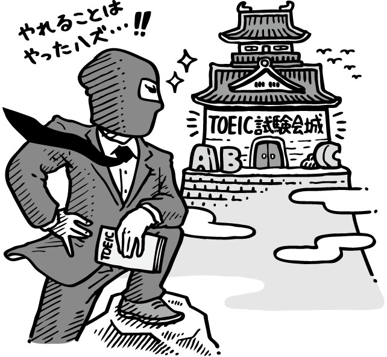
ディクテーションに挑戦！
英語の音声を聞いて、正確に綴りを書きとめていくことを「ディクテーション」と言います。本書はリーディング対策の書籍ですが、問題文と設問を読み上げた音声をウェブから無料でダウンロードできます（詳細はこちらを参照）。その音声を利用して、問題文のディクテーションに挑戦しましょう。
次ページ以降にディクテーションのためのページを用意しました。英文のあちこちが虫食いになっています。この部分の英語を、音声を聞き取って埋めていきましょう。一度聞いただけで全てを書き取れなくても大丈夫です。何度も繰り返し聞いて、できる限り綴りを書き入れましょう。一通り書き終えたら、問題文の該当ページを開いて答え合わせをしてください。
聞き取れなかった音は、あなたにとっての苦手な音です。しっかり聞き取れるようになるまで、何度も聞きましょう。英語は速く読まれると、前後の語とくっついて発音されたり、語の末尾の子音が発音されなかったりします。また、冠詞や前置詞はとても弱く発音されることがあります。聞き取れない音があれば、そのような音の変化が起こっていないか、注意して聞き直しましょう。
慣れてきたら、虫食いの英文を使うのではなく、全文を書き取ることに挑戦してもよいでしょう。この1冊の英文を隅から隅まで利用して、ぜひ英語学習を楽しんでください。
音声 dokkai_001_003
Questions 1-3 refer to the following telephone memo.
Message
For: Bo An Deng
From: Margaret Cleaver
Company: Best Savings Electronics, Inc.
Telephone Number:
E-mail: m.chatham@bestsaveeleconline.com
Date and Time:
Ms. Cleaver said that she tried to leave a voice mail but .
She wanted to know about Shipment 903, the one that .
Her purchasing director, Ismail Abedin, and it's overdue.
Her , Sam Jordan, was expecting it 48 hours ago.
as soon as possible.
Message taken by: Fernando Valdez
音声 dokkai_019_021
Questions 19-21 refer to the following e-mail.
To: Su-yeon Kim
From: Rodney Hartman
Subject:
Date: 16 July
A few attachments
Dear Ms. Kim,
As you directed, I for Director Kevin Parker's on 17 August.
> Quok Catering: ￡2,800
> Sainz Catering Ltd.: ￡
> Bobbins Great Events: ￡1,900
> Toomey and Bassalt Dining Services: ￡
You told me earlier that .
However, I recommend Sainz Catering Ltd., as they offer several services .
These include: setting up audiovisual equipment, and providing a small jazz music band. Of course, the decision is up to you, so .
Yours sincerely,
Rodney
音声 dokkai_028_030
Questions 28-30 refer to the following advertisement.
Saleh Communications, Inc.
: 927 Hilalli Street, Kuwait City
: Tunis, Cairo, Riyadh, Tel Aviv, Bahrain, Tehran
Language Specialists: Arabic, Farsi, Urdu, Hebrew, English
text, audio and real-time translation services across the languages above . Each of our translators has .
:
・Flexible translation through digital, print and other formats
・
・Regular personal contact and consultation with our branch managers
Schedule an appointment operating in a global environment.
音声 dokkai_034_036
Questions 34-36 refer to the following notice.
Carver Stadium
www.carverstadium.net
Ticketing and
Access to the stadium is .
Each ticket number or season pass and seating section.
Visitors are reminded to sign their tickets or passes and
.
Tickets or passes may be both at the entrance and within the stadium .
A replacement for a lost ticket may be issued if is submitted prior to an event.
Season pass replacements may be issued after logging in using a username and account number. unless an event is cancelled by the stadium.
音声 dokkai_040_042
Questions 40-42 refer to the following article.
SEATTLE, ― When the ZoZ-Phone 6 a year ago this month, it rapidly became a worldwide best-seller. Its , Seoul-based KSON Corporation, sold over 80 million units within six weeks. Since then, , some of which have gained significant market share.
Considering this, it seems unclear whether KSON Corporation could , such as the ZoZ-Phone 7, which will be available from April 1. However, the company reports 10 million unit preorders ― .
Mi-ae Jung, in a Web news interview, stated that she had great confidence in the new phone. She claimed, "It's better than the ZoZ-Phone 6 and ."
音声 dokkai_055_058
Questions 55-58 refer to the following notice.
Mshangao Gallery
1689 Moi Avenue
Nairobi, Kenya
www.mshangaogallery.ke
Modern Art for the Sophisticated Art Buyer
the noted Hungarian painter, Kalman Ligeti. on February 16 at 6:00 P.M., and , a series of works entitledLooking Glass. An in-depth review of these works available at the front door.
After the launch of the exhibit, Mr. Ligeti will . When this short talk concludes, Mr. Ligeti will be available for questions about the artwork.
.
, coffees, soft drinks and small snacks will be served throughout the event. This is a formal occasion, so . Secure valet parking is available on our grounds.
. They can be made at our information desk or at our Web site.
Please direct to Sam Kiplagat, our sales director. Appointments with him .
音声 dokkai_087_089
Questions 87-89 refer to the following letter.
Visitor Relations Department
Blue Springs Park
Trava Drabek
Teacher
Wurton Middle School
Portland, Maine
Dear Ms. Drabek,
Park-related printed materials in your March 25 e-mail. In line with that, .
An abundance of other information is of course on our Web site.
For instance, in which you could see highlights such as Pete's Rock, Apple Lake and Lookout Hill.
You can aid in our environmental preservation mission contained in the enclosed materials.
.
If you have any questions , please contact me.
Yours truly,
Andrew Jones
Visitor Relations Supervisor
E-mail: a.jones@bluespringsparkonline.gov
音声 dokkai_090_092
Questions 90-92 refer to the following book review.
Emerging Skyscrapers
By Yin Wen Chan
（print version）
Feiber Publishing Co.
Formats: Print, E-book
Review by Anna Veljanovski
In her newest work, Ms. Chan .
Located in cities ranging from Moscow to Jakarta, their height, unique architectural style and energy efficiency. Ms. Chan considers energy efficiency as that increasingly emphasizes "green" buildings, which minimally consume natural resources.
Ms. Chan's . Her overview draws in the reader and the main chapters flow smoothly, from rough sketches to breathtaking color pictures.
Moreover, the glossary defines technical terms ―
.
The outside commentary segments of the book should
.
Overall, however, this work is well worth reading.
書名：新TOEIC®テスト 速解！トレーニング 読解 （電子書籍版）
監修者：宮野智靖
著者：近藤千代
電子書籍発行日：2014年10月31日（ver.1.0）
発行者：生駒大壱
発行所：株式会社 旺文社
〒162-8680 東京都新宿区横寺町55
●お問い合わせフォーム https://www.obunsha.co.jp/contact/
・本電子書籍は、旺文社より2013年5月に刊行された『新TOEIC®テスト 速解！トレーニング 読解』を底本として製作されたものです。
・電子書籍化にあたり、底本から一部内容を変更している場合や、電子書籍としては不要な情報を含んでいる場合があります。
・本書に含まれる内容は、全て底本が刊行された当時の情報です。あらかじめご了承ください。
本電子書籍の全部または一部を無断で複製・改ざんすること、および第三者へ本電子書籍のデータを譲渡することを禁じます。
©2014 T.Miyano, C.Kondo
ISBN：978-4-01-694050-5